你好，我是陈浩，目前是区块链初创公司维优（ ViewFin ）的 CTO。
我是一名程序员，也喜欢编写程序。在做区块链之前，我曾有多年的支付和结算系统的开发经验，那会儿我的工作重点是传统网络服务行业的高并发架构，而现在则是专注于公有区块链架构方向的研究。
区块链大概算是我的主场，自从进入到这个圈子，我主持研发了中国的公有链——Metaverse(元界)，也主导实现过自己的数字资产交易所。
在我最早接触区块链的年代，那时侯呢，中文资料还非常稀少，所以研究起来特别地费时费力。
但是，在如今的区块链大火的背景下，相关的中文资料丰富了很多，所以你如果在网络上搜寻阅读区块链的入门资料，也能看个八九不离十。那为什么还要有今天的这篇文章，我又为什么会想写作这个专栏呢？
我的考虑点主要有以下几个。
区块链的网络资料虽然丰富，但同时也意味着繁杂错乱，内容不够系统。
多数资料可能已经过时。目前币圈链圈经常自我调侃“圈内一天，人间一年”，可见这个行业变化之快。
区块链行业急速发展，经常会出现观点相互冲突，结论莫衷一是。初学者在入门学习已是一头雾水的情况下，更是苦恼不堪。
区块链在技术上的复杂性没有人工智能高，却与其他学科有极大的交叉，容易带来跨学科理解上的误区，读者经常容易管中窥豹。
因此，作为圈子里的人，我想借极客时间这个平台，提供一个可以让更多人系统性了解和学习区块链知识的专栏。
一方面，我希望国内的技术中坚力量能够通过这个专栏了解区块链，并学为己用，在各自的领域内大显身手；另一方面，我也希望你在学习区块链时能有个好的开始，少走弯路。
说说专栏吧，我的专栏将立足于区块链技术，但并不局限于某个特定的领域，而是延深到区块链的各个方面，让你形成一个比较完整的区块链知识体系。
希望可以为你从零开始，构建起一个比较完整的区块链知识体系。除了基础部分，我还会深入讲解目前区块链的一些核心技术，以及数字货币交易所的原理。另外，我也会谈一谈区块链在当下互联网中的实践与应用。最后，我还会手把手地带你构建出自己的迷你区块链。
本专栏共五部分。
1. 浅说区块链基础。作为专栏的第一篇专题，为你准备基础的知识作为铺垫，帮助你从0开始搭建区块链基础，为后续技术知识的摄入做好铺垫。
2. 深入区块链技术。作为上一个专题的技术延伸，重点介绍技术层面的区块链，涵盖了P2P网络、共识算法与分布式一致性算法、加密与UTXO、智能合约以及一些区块链项目详解。
3. 数字货币与数字资产专题。本专栏作为区块链金融的延伸，重点介绍了区块链第一大应用——数字货币、第二大应用——ICO，并且介绍了数字货币交易所。
4. 区块链与当下互联网。这部分内容会深入一些，结合我自己的思考，会谈到区块链与云计算，数字货币钱包服务，以及区块链技术的未来发展趋势。
5. 如何从业区块链。这部分内容会从从业者的角度，结合我自己的思考，谈谈区块链创业，聊聊区块链从业者的一些经验，并手把手教你构建出自己的迷你区块链。
对于技术学习者，专栏会先适度讲解基本原理，争取略过某一章节也不影响后续内容。
但是，从技术学习上来看，单靠专栏讲解是不够的。所以，我也特别推荐读者进行源码实践，目前比特币已有C++等各主流语言的实现版本，你可以首先跑一个钱包直观感受一下，创建一个账户尝试发送交易，再来读我的文章，一定会理解地更为深入。
区块链技术入门后，你通常会遇到一个比较陡峭的学习曲线，这并不是技术深度造成的，而是区块链代币掺杂到技术中造成的，所以，我建议你配合阅读白皮书、开发者文档，并在这个过程中自己实践，三者并行地进行学习。
区块链的发展日新月异，而且受时间和个人水平所限，分享知识难免有所纰漏，但我会把我理解和分析的过程都呈现给你，相信你可以根据我的内容进行延伸研究。
最后，希望我能帮你系统和体系理解区块链。同时，也希望在这个大家对区块链技术的认知没有达成共识的“乱世”里，你能具备独立思考区块链的能力，并运用到自己的业务、场景里，甚至借此找到属于自己区块链机遇。
“深入浅出区块链”这个专栏是在我的从业经验和个人思考的基础上形成的。
在我开始从业区块链的时候，当时比特币的价格还在三四千人民币左右。区块链也还是小众的技术，相关的中文资料并不多。
我只能去硬啃英文资料，并去尝试编译以及调试比特币的代码，才逐渐掌握了一些区块链的技术概念。
当时，很多区块链的概念还停留在比特币上，虽然比特币所采用的技术都是现成的，但是它的代币设计思路却是以前没有的。
对我来说，这种设计不仅仅是编程技术的吸引，它由于交叉了分布式系统和经济学的知识而格外具有魅力。
我对区块链的兴趣从此一发不可收拾，我决定离职加入区块链创业公司，也就是现在的维优元界，2016年下半年，我开始开发一个属于自己的公有区块链项目。
这期间除了深入研究了区块链的基础技术，我还学习和研究了数字货币、区块链的Token设计，当然了，顺便也了解到了一些炒币的知识。
2017年的深圳，在架构师峰会上我第一次向国内技术圈子介绍公链以及数字资产的概念，引起了一些人的的兴趣。当时正值圈内ICO火爆，“造富效应”还不为大众所熟知。
等到9月份时，七部委的ICO禁令反倒让比特币和区块链进入了公众的视野。虽然政策上遇冷，但是区块链也开始集聚一些人气，领域内几乎成为了“百家讲坛”。
那时，虽然关于区块链的中文资料开始多了起来，但是大多还是停留在概念阶段，诸如区块链的应用场景、区块链的宏伟蓝图等等。
于是，只要懂比特币和区块链的人都成了香饽饽，各种区块链概念和名词满天飞，我也收到了不少演讲和培训邀请，奈何时间和精力有限，大多数都被我婉拒了。
这是好事也是坏事，好事是“百家争鸣”极大地推动了区块链的理论创新，坏事是各种观点也给入门学习者带来了困惑，各种言论相互矛盾的都有，四处分散的中文资料无法让入门者获取已经成为定论的基础知识。
与极客时间的合作也是一种缘分，2018年初极客时间团队邀请我专门来写一个区块链的专栏，这是我第一次写长期专栏。
一开始我以为要写深度内容，等几篇写完后，编辑看完稿件，说我的内容起点太高，普通读者根本没法入门，就这样反反复复修改了许多次之后，我开始找到了感觉。
写作一个专栏就好比交作业一样，让我感觉回到了学生时代。每周定期三篇作业，对于我一个拖延症患者来说，简直是噩梦。
不过好在是与大家一起介绍和分享区块链知识，写作的东西都是我喜欢和感兴趣的，这样两厢抵消下也可以接受。
最困难的其实是如何安排撰写专栏内容的时间，因为平时也有任务在身，中间还常常需要出差，我犹记得，数字身份那一篇文稿是我从纽约到东京的飞机上完成的，还有几篇的部分内容都是在飞机上写作的。
就这样，我投入了几乎全部的业余时间进行专栏的写作。经常八九点下班回来，还要继续码字到凌晨一两点。
最后的两篇，我更是费了更多精力，因为要快速搭建一个迷你区块链的话，我需要先构思好框架再验证设计，然后去进行代码实践。短期的工作量暴增，仅最后的一篇我就花费了整个周末的时间才完成。
写作区块链的文章并不是一件简单的事情，我需要先进行分析、验证，再总结归纳，中间常常要停下来查阅不少参考资料，来进行充分地论证，这些都很费时间。不过，这些对我而言也是十分有益的一件事，这其实也是对自身知识的一个整体梳理的过程。
俗话说，“授人以鱼，不如授人以渔”，你可以从专栏文章按图索骥，自己挖掘出更深度的区块链内容，这就是我的初衷。
最后，感谢编辑辛苦审稿校对，感谢极客时间，感谢所有为这个专栏提供过技术支持的同事与同仁们。同时，我也要感谢一直以来收听并支持专栏的你，感谢一路的相伴与成长。
你好，我是陈浩。我的书《区块链第一课：深入浅出技术与应用》正式出版了。
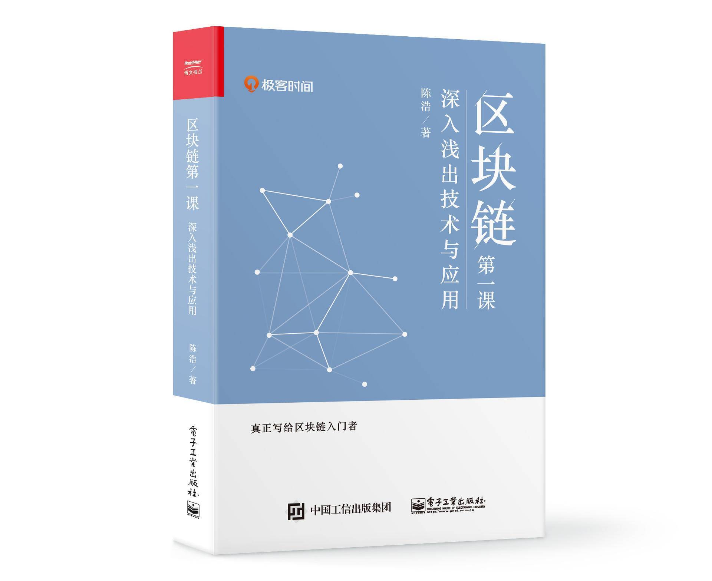
最近我在“极客时间”一周年的留言里看到，有一些读者说看完专栏的2/3后，就顺利进入了区块链行业，还有读者提到这个专栏让他对区块链的认知更近了一步，深入了解了区块链的原理，并弥补了之前一个人摸索的不足。在感谢大家的认可的同时，也更坚定了我对出书的信心。
这本书是我们专栏《深入浅出区块链》纸质的加强版，它在结构上继续沿用专栏“基础—— 进阶—— 专题—— 当下—— 从业”的逻辑顺序。我们把精力更多地用在了内容的精校方面，力求为大家提供纯正的区块链技术。
《区块链第一课》的成书是目前极客时间出品的图书里耗时最长的，我们在三审三校的基础上又增加了两次深度修订，争取让读者在拿到这本书的时候能够看得懂，学得明白，用得着。
大家都知道，今年区块链经历了从全面爆发到快速遇冷的阶段，这筛去了很多急功近利的情绪，经历大浪淘沙之后的区块链，会在未来金融、商业和安全领域继续应用，并会被更多的技术人看到。
现在，《区块链第一课》已经在极客商城提前开售，作为已经订阅专栏的老朋友，除了首发优惠之外，我还给你申请了优惠码。在极客商城待付款订单中点击“使用优惠”，输入优惠码“qukuailian”，结算时可再减5元。
感谢你的支持，我们继续一路同行。
很高兴在我的区块链专栏里和你相识，作为专栏的第一篇文章，我先来和你聊聊“区块链是什么”，以及它的发展过程。
自中本聪第一次发布了比特币，至今已经有9个年头了，那么算起来区块链也应该有9年的历史了吧？其实不是，“区块链”这个概念恰恰是这些年才有的，如果非要追溯，可能在2014年左右，才真正有了“区块链”的概念。
我早期写文章喜欢给区块链下定义，但是读者反响并不如意，所以今天我想“反其道而行之”，先讲一个笼统模糊的对象，再像一层层剥洋葱一样，慢慢地给你讲解区块链的来龙去脉。
首先，什么是区块链行业呢？区块链是一个崭新的行业，与社交、电影、游戏一样，具有自己独特的内涵和发展过程。
这个行业是通过比特币形成的。我们可以把比特币比作一棵树，这棵树在生长过程中不可避免地会开枝散叶，慢慢长大，而这个生长过程其实就是代码 Fork，进行再修改发布运行的过程。
比特币之后有了莱特币，莱特币之后又有了点点币，点点币之后又有了上百种币，后来的这些币仅仅在原有的比特币核心代码上做了技术上或非技术上的修改，从而形成了独有的币种。所以我们在早些时候，也将比特币之外的所有币种统称为“山寨币”。
当然，如果只有一棵树，也就不会称作一个“行业”了。一些大神，比如以太坊的创始人V神（Vitalik），再比如比特股、Steem和EOS的创始人丹（ Dan ）等觉得比特币这棵树不够自己发挥的，于是在继承了比特币的“火之意志”之后，相继在比特币旁栽下了属于自己的“树”。
渐渐地，树变树林，几乎是以指数级增长的过程，树林又变成了森林，错综复杂，最终形成了一个崭新的行业，这个行业我们称作“区块链行业”。
我在一开始说区块链具有自己的独特内涵，那么到底是什么内涵让这么多人“趋之若鹜”呢？
前者为后者提供了极佳的赚钱土壤，后者为前者注入了赖以生存的资金。听起来好像“沆瀣一气”，其实并没有，这也是区块链行业通常所说的链圈和币圈。
前者组成了“链圈”，后者组成了“币圈”，以前这两个圈子“井水不犯河水”，现在却有融合的趋势，为什么？
那么，“链圈”加“币圈”也可以是我们所说的区块链行业。
我再深入介绍一点，刚刚提到了“去中心化”，它更像是表达极客信仰的一面“旗帜”，我个人更喜欢称之为“导火索”。
它把金融领域聪明的投资者与厉害的技术人才拧在一起，点燃了无数起“回归互联网平等、自由、开放”的大讨论，任何人都可以从中构思挖掘自己熟悉领域的“区块链应用”，整个过程在技术上看就是上文提到的“开枝散叶”，这个过程你也可以看成是区块链的发展过程。
至此，你可能已经对区块链行业有了一个模糊的认知。那么，到底什么是区块链呢？
简单来说，区块链首先是一个分布式网络。如果你不懂“分布式”也没关系。
我举个例子，假设你和朋友异地开黑打《王者荣耀》，这时候“异地开黑”就可以看成是一个小型的分布式网络。
朋友语音喊你开团战上高地，那么其实这就是达成一次共识的过程，你参与了团战，就是你同意共识的过程。
区块链也是一样，它并没有超出我们的认知框架。让所有的独立节点想要达成共识去做同一件事情，是区块链在技术上首先要解决的问题，这就是我们常说的共识过程，也是“去中心化”这个概念的直接来源。
那么假如有了这样一个分布式网络，我们可以选择不同领域做产品，就像传统技术上有了迅雷、电驴等等产品一样。
区块链与之最大的不同是整个系统本身具有自己的Token。Token在国内有的翻译成“通证”，有的翻译成“代币”，其实最简单的理解就是“虚拟资产凭证”，它可以是我们的股权，也可以是票据，也可以是游戏积分，凡是需要资产记账的地方都可以用Token来做。
还是回头看上面那个例子。如果你参与了团战，你的朋友就要支付你1元，请问这个系统怎么做？注意，我这里说的不是银行卡转账，我就是指在游戏里面，你所在的这个分布式网络中，在你参加团战之后，对方通过这个分布式网络直接支付1元给你。
很多人就会说：“直接做到 App 里面呗”，可是你要知道，我并没有说支付“1元人民币”啊，也有可能是1游戏积分，这个游戏积分未必是王者荣耀发行的，你有没有想过这个积分是你的朋友发行的？
你肯定会说，那我要这个积分有什么用呢？好，假设你的朋友是个超级富豪，他说你陪我玩游戏，但我不想支付你法币，我用我自己发的游戏积分给你，你看我老爸在国外开游戏积分交易所的，我的游戏积分在上面交易，你每次帮我开团，我就给你积分，你拿去自己交易换成其他资产，美元啊什么都可以。
想象一下，你的土豪朋友每次语音说“谢谢你帮我开团成功”，你就拿到1游戏积分，而这1游戏积分和腾讯没半毛钱关系，却又让这个语音与这1游戏积分同步生效，区块链其实就是在解决类似的事情。这里的积分可以理解为具有流动性的虚拟资产，但流动性又没有虚拟货币好，它不属于虚拟货币。
说了这么多，现在总结一下区块链是什么：
至于再深入的区块链内容，后续文章听我慢慢道来。
今天我和你聊了下区块链及其行业的发展过程，形象化地描述了区块链是什么。
相信你对区块链行业已经有了一个基本的了解，但文章篇幅有限，希望你能够进一步发掘区块链相关的历史，甚至有趣的故事，比如说1万比特币购买披萨事件、真假中本聪事件、以太坊The DAO事件分别对应到区块链哪些发展阶段呢？ 感谢你的收听，我们下期再见。
-
推荐阅读材料：
（除了《精通比特币》可以从网络获得，其他都是实体书籍。除此之外，GitHub本身就是一个丰富的资料库，比特币和以太坊的开发者文档也可以作为技术进阶。）
上一次，我们聊到了区块链的概念及整个行业的发展过程，今天我想稍微深入一下，尽可能通俗地介绍一下：区块链到底是如何运行的？
这一篇文章我将以比特币区块链为例来进行讲解，理由有两个：
首先，我们借鉴了一个区块链描述中的经典情景来模拟中心化记账。
假设有一个有百户居民的村子，其中有一位德高望重的村长，村长有一个儿子。村民们都把钱存到村长家，村长负责记账。比如，张三用1000买了李四家的牛，村长就把张三名下的存款减去1000，李四家加上1000。听起来是不是很像银行的操作？
对，我们就是先从中心化的银行记账开始聊起。村民都相信村长，才愿意把钱存到村长家，他们相信村长不会作恶。
可惜好景不长，老村长由于操劳过度，驾鹤西去了。新上任的村长儿子铁蛋很是聪明，但也有个毛病，就是粗心大意。他不但经常算错账，一次还被人偷改了账单。
不过，幸好村民自己都有记账，但是由于铁蛋每次错账后都要和别人核对半天，导致村民对新村长的记账能力十分不满。
时间就这么过着，然而最可怕的事情还是发生了，铁蛋的老婆竟然私下篡改账本，给铁蛋七大姑八大姨的余额全部偷偷加了好多，终于有一天事情暴露，村民们气冲冲地跑到铁蛋家里讨说法，于是一片混乱。
这时候有个叫中本聪的人站了出来，他说他设计了一套系统，可以不依赖任何人记账，于是，众人开始将目光集中到他的身上。
中本聪说他的系统稍微麻烦一点，需要干三件事儿。
这三条总体来说其实是干一件事情，就是：
每家每户都记账，账簿上不再记载每户村民的余额，而只记载每一笔Transaction，即记载每一笔交易的付款人、收款人和付款金额。
那么问题就来了：如果每户都记账，肯定每户的账都不统一啊，你记你的，我记我的，最后不全乱了么？
这个时候需要大家统一账本，保证大家的账本都是一致的。因为记录的交易是全村所有人有序产生的，所以这就需要有一个广播机制。这个广播机制，我先卖个关子，后面再讲。
中本聪说，其实很简单，我们现在先把全村所有人的资产都加起来。还真巧了，刚好100万。
中本聪接着说：“只要账簿的初始状态确定，并且每一笔交易可靠并按照物理时间自然记录，并且只加不改不删，这样，当前每户持有多少资产是可以推算出来的。”
中本聪说我现在把我的印章给你们看，这个印章很特殊，盖的章有两块标记，第一块是一个可以识别的标记，比如我往纸上一敲，可识别的标记是1MsTg2。
这就是你们的代号，由于我们账本是公开的，使用真实姓名会很危险，所以你们记账的交易单上收款人、付款人都填这个码，不用写姓名。你的扫描器和你的印章生成的代号是关联的，有且仅有持有对应扫描器的人才能花费金额，这一步即为“解开交易”。
刚刚说印章有两块，这第二块内容配合这个扫描器才能看，肉眼看则都是乱码，扫描器一扫就知道第二块内容是否有效，这一步也就是“交易验证”。
并且所有交易大家都能接收，都能看到，但却解不开印章乱码部分的内容，仅仅收款方才能解开，因为你的扫描器和你印章生成的代号是关联的，有且仅有持有对应扫描器的人才能解开交易。
以上就是区块链中“公开记账”的过程。“公开记账”就是全网所有人都可以随时查看一套账本，然后按照规则透明公开地进行记账。
创世区块是我们生成全村公开账本的第一笔交易的第一个信封，好比一篇文章总得有个开头一样。
于是乎，中本聪说我先生成第一个Transaction，这个交易单的付款人为空，收款人是村长，付款金额是100万，因为是创世区块，产出多少个是可以随意规定的，由于我们上面统计了全村的账目情况，所以我就写了100万，待会儿付款给村长以后，我们可以按照原来的账本给大家发送对应的金额过去。
好了，我们有了第一笔交易，第一个信封也已经做好了。现在让村长把信封传给张三，张三复印一份，然后传给李四，李四继续传下去，一传十，十传百，直到传给全村人，这个步骤也就是“同步区块”，也就是全网都拿到这个信封，以及信封里面的Transaction。
由于上一节我们的创世区块把100万交给了村长，那么我们假设张三在村长那里的存款余额是10万，这时候村长要根据原来的旧账本，把这10万发送给张三，然后把旧账本上的账划掉。下面我们讨论一下如何构造这笔交易。
中本聪开始教村长写交易单，把100万分成两部分，第一部分10万，收款人是张三；第二部分是90万，收款人是自己；这样一个Transaction就做成啦。
前面我们说了，不能直接写名字，要写代号，这个代号也就是你的钱包地址，我们需要把收款人写名字的地方，让收款人拿出自己印章，把代号读出来，然后告诉村长即可。
100万 10万，张三- 90万，自己
村长写好 Transaction 以后，还需要拿出自己的印章，在Transaction上盖章，这个盖章的过程也就相当于区块链中的签名。这个章，全村人都可以拿扫描器扫一下验证是否有效，即验证付款人的章是否有效。
100万 10万，张三的印章（1s25vR）- 90万，村长的印章（13gYip）
就这样，村长一共写了10份Transaction，分别代表了发送给不同人的交易，张三一笔10万，李四一笔1万，等等。
现在我们有了Transaction，但是还需要东西把Transaction装起来，我们用一个特殊的信封把Transaction装起来，这个信封就是区块链中的“区块”，这个封装过程就是“打包交易”。
为什么要封装起来呢？是为了让打包交易的人能够在信封上署名，表示这次打包是由某某某打包的，其次全村的交易可能非常多，需要装配标号，方便大家查询。
我们看到上述的Transaction虽然已经生成，但是有个问题，就是没有规定谁有权利把Transaction封装到信封里。
我们在开篇的故事中看到了中心化操作肯定是不行的，假设在全村人中，这时候如何筛选出这些打包的人呢？
中本聪这时候说了，由于我们村的人口增长，100万未来可能不够，我们暂定150万，那多余的50万，我们就当奖励给这些装信封的人了，当然不能一次性给，谁装一次信封就领3个币。
这时候大家伙儿来劲了呀，只要装信封就能够领钱了，我们在这里把符合条件的人称作“矿工”。
但是中本聪又说了，要获得这个装信封的权利，是有条件的。我给大家出一个难题，谁先解出这个难题的答案，谁就有权利把Transaction装到一个信封中，并且要在此信封上盖上自己的章。
这个难题是这样的，它有两大特性，第一是容易验证，第二是计算过程非常复杂。
例如，有种棋牌类游戏叫作“24点”，玩法就是给出任意4个整数，通过整数运算得到24，比如现在给出2、9、1、5四个数，答案是（5-2）*（9-1）= 24。当然，本处仅是举例，“24点”游戏的答案空间非常小，是远远不够生成信封的。
答案非常好验证，但是计算过程是一个尝试的过程，需要耗费大量的精力。而在真实的比特币中，采用的是寻找符合条件的目标哈希，这也就是比特币矿工所做的事情。
好了，这时候大家开始计算给出的难题，刚好李四第一个计算出来，那么这次装信封的操作就由李四完成，李四把10份Transaction装到信封中，也就是打包Transaction，并且要在信封背面写上一个信封的摘要信息。
比如上一个信封中的第一个交易是什么、信封封面长什么样，最后要在信封上盖上章，也就是“签名”，矿工签名的目的是为了领币，也就是 Coinbase 交易。
以上过程在区块链领域称作“打包 Transaction”，也就是大名鼎鼎的“挖矿”。
来说说上文提到的广播交易，广播是为了让全村人知道当前时刻你产生了一笔Transaction，或者是你装好了一个信封。
广播的内容分两种，一种是广播Transaction，一种是广播信封。第一种广播是意味着还有未被打包的Transaction，而第二种广播信封则意味着这个Transaction已经被某个矿工确认。
收到了广播的通知后，大家先验证信封上难题的答案是否正确，这样便可以验证出信封是否被伪造，接着验里面的每笔交易，最后还要验证信封背面的内容，即上一个信封的摘要是否正确。因为上一个信封大家都已经确认，所以这样可以极大地规避作弊的可能。如果觉得没问题，就可以存入本地数据库中了。
至此，全村人的记账问题就差不多解决啦。
今天我用非常浅显的例子与你聊了比特币区块链，其中包括区块链中公开记账、创建创世区块、交易、打包Transaction、广播交易的几个步骤。
因为篇幅所限，在表述上可能会有不精确的部分，但是大体意思是相通的，相信读完文本，你已经对区块链的原理有了一个大致的了解。
你也可以针对每个模块进行扩展，比方更换矿工的计算方法，可以推导出PoS共识机制，不知道你还能想到哪些扩展呢？欢迎留言探讨。
感谢你的收听，我们下次再见。
本文叙述模式参考链接：- http://www.8btc.com/bitcoin-story?_t=1520884553
我在第2讲“区块链到底是怎么运行的”一文中，提到了“打包Transaction”和“广播交易”这两个概念，因为概述的原因，当时只带着你走了一遍过程。其实，以上谈到的两个内容正是区块链最核心的技术内容之一：共识机制。
区块链发展至今，已经形成了各种不同类型的共识机制，在今天的文章中，我们就展开聊一聊区块链共识机制到底是什么，以及区块链的共识过程到底是怎样的。
拜占庭将军问题其实是虚构出来的一个故事，是为了方便通俗地介绍分布式系统所面临的难题。这里我仅作一个简短的说明，你可以在中文社区找到更丰富的通俗解释材料。
为了避免重复，我们换一种表述形式，还是以上一次的村子为例，假设随着村子和人口的发展，大村子演变成了十一个小村子并分散在各地，各地的通信只能靠信鸽进行。
大家约定了每年都会举办一个相亲大会，至于谁能举办，每年轮流从两个备选村子，A村和B村中选择一个，然后大家投票，票数多者可以赢得举办权。
由于地图很大，任何一个村子的投票都无法靠一只信鸽传输到每个村子，必须靠一个中继村子代为传输，这也就意味着有中继村子可以读到其他村子的投票信息。
那么，如何防止下面两个问题的出现呢？
上面讨论的问题我们可以认为是简化的 “拜占庭将军问题”（完整的拜占庭将军问题还有将军-副官模型，如果感兴趣的话，你可以自行阅读）。
我们回头再看区块链。区块链本质上也是分布式系统的一种，其共识机制也是为了上述问题而提出的解决方案。
共识机制是区块链是核心的组成要素之一，它决定了区块链的业务吞吐量、交易速度、不可篡改性、准入门槛等等，是最为关键的技术要素之一。
要理解区块链共识机制，首先就需要理解区块链共识机制到底解决了什么问题。
共识机制主要解决了两个问题：
上一次我们构造了一个中心化记账的场景，在这个场景下，记账问题其实可以简化为大家信任中心记账者即可。
然而在分布式记账的场景下，问题更为复杂。首先，大家面临的最大问题是谁有权利记账，其次是如何避免记账者作弊。毕竟，谁都有权利记账，也就意味着谁都有可能作弊。
以上两部分共同构成了区块链共识机制。
另外补充一点，在比特币社区，“共识”（consensus）这个词已经跳出了技术的范畴。通常人们在表述一个比特币上的问题时，共识的内涵还包括比特币的使用者、开发者、矿工来达成社区共识的部分，所以“共识”这个词在区块链领域还有些“民主”的味道，不单单是技术领域的“共识”。
PoW （Proof of Work）工作量证明可以解决上述的两个问题，
在上一篇文章中，其实我们已经悄悄讲解了一点PoW共识机制，你还记得上文提到的“24点”那个游戏吗？“24点”其实是尽可能随机地选取系统中任意的节点来规避作弊者，这个方案的实践其实就是PoW共识机制。
产生记账者的随机性其实来自于谁最先计算出24点的答案，这个问题可以简化成谁拥有的计算资源更多，谁就拥有整个系统的最大概率的记账权。一旦这个概率超过一半以上，那么这个系统就有一定的中心化风险。
如何理解上面一段话呢？
举个例子，李四家发明了一种算盘，可以快速计算24点答案，比起其他人掰手指头，李四家总是有很大的概率拿下记账权，换句话说，也就是李四和全村其他所有人竞争，相当于算盘对全村其他人手指头的竞争。
如果算盘足够强大，就能有一半的概率获得记账权，那么李四个人的诚实性，就成为了系统的唯一破绽。
比如李四在第一次记账时篡改部分交易，第二次还是他记账，还继续篡改交易，那么两次修改如果自洽的话，是可以形成假账的，这就是所谓的中心化风险。
所以在PoW这种机制中，计算资源（又称算力）是决定记账权的唯一因素。与之对应的，便是计算难度。
计算难度又称作挖矿难度，计算难度是区块链为了控制产生答案的速度，比如平均10分钟就有一个答案产生，平均2分钟一个答案产生。
在上述场景中，因为李四有了算盘，强大的计算资源突然加入以后，肯定会让整个系统的产生答案的速度变快很多，作为系统本身会自适应，将难度提升，降低答案产生的速度。
上面介绍了这么多，其实是想引出另外一个问题，PoW到底是如何避免作弊者的呢？答案就是计算资源（算力）。
设想，如果一个作弊者想篡改信封里面的交易，首先得获得记账权，也就是装信封的权利。
而影响记账权的唯一因素只有计算资源（算力）的大小，如果想篡改交易，只能投入大量的计算资源与整个系统中其他所有人进行对抗，这是十分困难的，尤其在整个系统有一定基础计算资源（算力）的情况下。
PoW中一个有趣的设计是激励机制，在PoW共识机制下，我们假设所有参与者都是理性的，理性的意思就是单纯逐利，不考虑家庭、爱好等其他因素。有了理性的前提，PoW共识机制会给每个诚实的记账者予以奖励，这个设计可以抗击作弊收益的问题。
怎么进行抗击的呢？整个过程是这样的，理性的人如果作弊、篡改账本肯定需要投入成本，也就是计算资源，收益是篡改账本获得的收益减去投入成本，这个收益往往小于诚实计算所获得的收益。所以，作弊者在作弊过程中投入的计算资源过大，反而得不偿失。
上面给出了一个结论，我们说作弊的收益往往小于诚实计算的收益。这一点其实对应到区块链领域有个著名的问题：双花攻击（double-spending） 。
双花攻击是指一个代币被花费了两次，这在任意的区块链系统中是不被允许的。如果避免了双花问题，基本就能避免上述作弊中收益过大的问题，因为攻击者首先要窃取到你的私钥，同时又能控制了你的计算资源（算力）。
为了方便分析，我们回到上一篇中广播交易的那一节。那一节中我介绍了广播的内容分为两种，第一种是Transaction，第二种是区块，也就是信封。
第一种又被称为未确认的Transaction，第二种信封中所有的交易被称作已确认的Transaction。
所有记账节点都会遵循以下两条规则：
规则一：一个代币如果已经被花费，那么会被标记成已花费，如果再次接收到这个代币被花费的请求，那么记账节点会拒绝打包这笔交易；
规则二：如果同时接收到两个信封，这两个信封中装的两笔交易出现了一个代币被花费了两次的情况，这种情况也就是我们所说的分叉（Fork），那么选择挖矿难度比较大的那个信封。
规则一避免了未确认的交易出现双花，规则二基本避免已经确认的交易中（信封中）的双花问题。
假设作弊者的计算资源（算力）占整个系统的30%，那么连续两次获得记账权的概率是9%，看起来作弊的可能性还是挺高的，如果是连续6次获得记账权呢？概率直降到万分之七。
在比特币中，这个6也就是6次确认，表示连续6个块过去了，如果我的交易没有被双花的话，那么它被篡改的可能性将越来越小，最后变得几乎不可能被篡改。这也是区块链不可被篡改说法的由来。
试想，如果任何作弊者花了大量的成本获取了系统30%的计算资源（算力），最后只有万分之七的概率获得篡改的可能性，比起作弊，还不如诚实记账的收益高。
好了，今天带你了解了区块链的共识机制，也顺便浅谈了拜占庭将军问题，介绍了区块链的入门共识机制PoW，它其实也是目前区块链领域使用最广泛，应用最成熟的共识机制。
最后，还涉及了一部分PoW工作量证明的补充：解决双花攻击。由于篇幅所限，我们将在技术篇详细讲解PoW、PoS、DPoS等共识机制。
那么，亲爱的读者，你觉得PoW共识机制和其他分布式一致性算法有什么不同吗？欢迎给我留言，一起讨论。
感谢你的收听，我们下期再见。
我在前面的三篇文章中分别介绍了区块链是什么、区块链的运行原理、并且简述了区块链的共识机制，在这一篇文章中，我将为你讲解一下区块链的应用价值。
由于区块链本身发展处于早期阶段，成熟的应用并不是很多，我的主要目的是拓宽你的思路，抛砖引玉，希望你能够从中获得应用灵感，为区块链挖掘出更多有市场的应用，但需要提醒你的是，本文提到的内容不构成任何投资建议。
数字货币是区块链的第一大应用类型，市场上目前可统计的数字货币币种有1500种以上，2017年其迅速增长的市值让人措手不及。
那么说，到底如何理解数字货币这个概念呢？其实你可以简单理解为一种无主权、社区自治的货币形式，关于这部分的详细介绍我们留到下一篇。
在“区块链到底是怎么运行的”一文中，我们构建了一个中心化记账的模型，这个模型可以对应到如今央行-商业银行的模式上；而数字货币的运行则通常是靠社区自治的，所谓社区自治，是指用户、维护者、开发者三种角色共同决定数字货币的发展，也就对应了上一篇文章中，我们所讲到的“共识”。
我们先来看看数字货币，通常具有下面几个特点。
总量透明公开。数字货币的发行是在项目创建之初，是白皮书事先就规定好了的，白皮书通常是一个区块链项目公开发布的一种阐述性文档，其中简述了项目的宗旨和愿景以及设计蓝图。在白皮书中，这个项目总共发行多少数字货币，投资者、用户、矿工能够获得多少也都是事先分配好的。数字货币的总量也分为两种，一种是总量设上限的，另外一种是不设上限的。
数字货币缓慢释放。数字货币在分配好不同角色的额度之后，往往不是一下子就能发行完毕的，通常在矿工的那部分是需要靠“挖”才能出来的，这也就是前面我们所说的挖矿，挖矿为数字货币的缓慢释放提供了一种方法。
代码执行规则。由于我们在白皮书中规定好了总量和数字货币释放的机制，白皮书的内容会成为整个社区的基础共识，所以在项目的主网上线之后，数字货币的释放不再是人为控制，而是在代码层面体现，代码将负责控制数字货币的释放，这里去除了人为操作的因素。
基本上，所有公有区块链项目都会具备以上特性，可见数字货币和区块链的关系十分紧密。另外，在区块链领域，一个项目的开始运营，就伴随着一个新的数字货币的产生，这个数字货币会成为这个项目的基础代币，也有可能会派生出其他货币。
与区块链的其他应用类型不同的是，数字货币这种资产天然具有较好的流动性，所以在所有权上更为敏感。
比方说，如果“你的信用卡被盗了”和“你的微博账号被盗了”，正常人都会紧张第一种情况。所以说，区块链在数字货币上的应用，其“去中心化”“不可篡改”的特性相较于其他，就显得更具有划时代的意义。
我们在上一节聊了数字货币，这其实可以推而广之对应到数字资产。
怎么理解呢？如果区块链可以做数字货币，那么同理，它也可以应用到其他任何资产，尤其是虚拟资产。
虚拟资产一般包括有金融资产、游戏代币、数字版权、域名、用户流量等。由于虚拟资产不需要与实体资产进行挂钩，所以在对应到区块链上更为方便。它具体的应用形式在供应链金融、票据市场都有所体现。
我们还是继续举例子。区块链圈子内有个非常有名的加拿大白胡子大叔，他基本上是逢会必现。
他要做的应用简而言之叫做“良心区块链”，不是指区块链项目的良心，是指他希望用区块链技术让所有人可以进行自我管理，自我管理的方式是对“良心”进行评价和奖励。人的良心都可以区块链化，还有什么不能尝试呢？
他的项目是这样的，比如今天我给自己设定了一个跑10公里的目标，如果我完成了，那么我会在系统上获得代币，如果没有完成，则有相应的惩罚机制。大叔的项目还与联合国17条可持续发展目标进行了关联，他的目的也很单纯，就是希望通过自己的行为让世界更好一点。
你看，在区块链上，连“良心”都可以数字化，还有什么不能数字化呢？
我们再举个例子。前些年比较火热的一个少年团体叫TF-Boys，里面有三位成员，很多粉丝其实是与偶像割裂的，并没有一种模式叫做让粉丝与偶像共同增值。
比如我们可以让TF-Boys每位成员都可以发行属于自己的区块链积分，并与粉丝一起共同持有。在未来，根据偶像成长和走红的程度，偶像可以与粉丝一起分享收益。
所以说，除了数字货币，数字资产也是区块链的一个应用方向。数字资产的应用形式与资产证券化（ABS）十分类似，感兴趣的读者可以自行研究一番。
那么区块链目前有哪些比较成熟的应用呢？其实我们有时候想得太远了，反而忽略了脚下。首先来说，任何的区块链创始项目如果要活下去，就要先解决钱的问题，也就是融资问题。
我们在前面说到，任何的区块链项目基本都会产生一个基础代币，那么什么样的融资模式能让投资者和项目方都满意呢？
其实，这个融资模式本身就是一个很成熟的应用。——答案是去年被七部委明令禁止的ICO(Initial Coin Offering)。
我们在这里，简单从技术的角度介绍一下ICO，ICO的中文名是首次代币发行，又称为区块链众筹，这是一种新型的融资模式，投资者可以用手中的比特币或其他代币投到一些区块链创始项目。
一个区块链项目发起之后，如果选择发起ICO，相比传统融资渠道，项目方会在很短的时间内融到资，且白皮书中规定好的代币将一次性地投放到投资者手里，并在短时间内上线数字资产交易平台。
数字资产交易平台也具有高流动性，这种高流动性为早期投资者提供了退出条件，这样投资者的投资周期大大缩短，并且可以快速抽身。
例如，马先生持有1个比特币，现在参加了某名为ABC的区块链项目ICO，ICO兑换比例是1：10000，也就是说马先生投资1个比特币给项目方，将会拿到1万个ABC代币。
如果ABC代币会在一个月内上线交易平台，假设ABC的价格波动超过50%，那么马先生的1万的ABC代币可以交易成1.5个比特币，马先生纯赚0.5个比特币，并且他可以抽身这个项目，再次参加新一轮的ICO。
ICO技术虽然为所有区块链项目提供了周期短、效率高的融资模式，但在同时，ICO也成了传销和内幕交易的重灾区。
以上举例说明了区块链在虚拟资产下的应用模式，而另外一个高产虚拟资产的领域——游戏领域，也是区块链同化的对象。
不过，目前还没有特别成熟的案例，比较有名的是2017年走红的以太坊“养猫”游戏，但我并不认为这意味着区块链真正踏入了游戏圈，这仅仅只是它的小试牛刀。
试想，你在游戏里的道具，如果可以在其他任何游戏进行使用，感觉是不是很棒。虽然目前还没有现象级的游戏被区块链同化的例子，不过你也可以发散思维，构想一些新的区块链游戏模式。
当然除了虚拟资产，实体资产也可以用区块链进行应用，但是目前遇到的难题基本都是实体资产如何与链上区块链的数据进行一一映射。
这涉及了数据公证等等环节，实施起来比中心化应用困难很多，比较典型的例子是区块链与供应链结合，解决信息流、资金流、物流，“三流”合一的问题。
除了实体资产和虚拟资产，区块链最简单直接的应用还有公证公示领域，不过这里仅仅用到了区块链“不可篡改”的特性。
通过本篇文章，我向你介绍了区块链的一些应用方向。包括了区块链在数字货币以及数字资产上的运用。
在这篇文章中，我并没有大夸特夸区块链，相反，我认为区块链的应用范围目前多被局限在金融领域。所以，我想告诉亲爱的你，理性看待区块链的应用可以让我们更好地去应用区块链。那么还有哪些行业，可以使用区块链进行数字化呢？
感谢你的收听，我们下次再见。
从历史进程来看，货币的形态主要经历了几次变化。从早期社会如兽皮、牲畜、陶器的物物交换，到各种贝壳类的货币，再到后面的铜币，乃至后来人们选择了黄金和白银作为流通货币。
随着消费需求不断增加，人们发现可以通过发行纸币来替代贵金属，于是，我们就一起进入了信用货币的阶段。后来，技术的发展促进了电子货币的产生。现如今区块链技术的大热，它的第一个应用就是数字货币。
数字货币通常是国内的叫法，在国外，它一般称作“加密货币”。数字货币听起来比加密货币更抽象一点，“数字”旨在表现它不同于传统货币的行为，即它可以通过“数字”表现更多自定义的行为。
那么，如何用一句话来解释什么是“数字货币”（加密货币）呢？我们可以这样形容：数字货币通常是基于区块链技术、在全球范围内公开发行的、并且没有任何国家政府背书的虚拟货币，这种虚拟货币具有“去信任”、“点对点”、“公开记账”、“不可篡改”等特征。
既然聊到了虚拟货币，我们正好可以把电子货币、虚拟货币、数字货币（加密货币）的概念捋一捋。
1.电子货币
近年来，现金使用的频度降低，很多人首选使用电子支付。电子货币和数字货币一样都是无形的，但是电子货币其实就是将法币电子化，例如第三方支付平台，银行卡电子现金，银行大小额支付系统等等。它只是以电子的方式记录了原来法币的账目，从本质上来说，它们仍然需要在多个中心化系统中进行稽核、对账，“电子”本身并没有成为金融的一部分。
2.虚拟货币
在2017年区块链投机狂热的时候，“虚拟货币”这个词基本是用来指区块链项目的基础代币，这样的叫法大多源自于圈外投机者。其实不然，虚拟货币所指代的概念远比电子货币以及数字货币都要更加广泛。
虚拟货币通常是由非金融机构发行的非实体货币，大致分为三类。
综合来看，与法币的“有形”对应，虚拟货币更多地体现在它的“虚拟无形”上，随着互联网的发展，虚拟货币本身也在逐渐发展，从而诞生了更多新的模式与机遇。
3.数字货币
数字货币一般是指公有区块链平台底下的基础代币，该代币被记录在由密码学保证的一套公开账本上，与传统货币不同的是，由于去中心化以及可编程等特性，此种货币具有可自定义行为的属性。
在比特币中，我们可以定义多重签名交易来实现真正意义上的“由多人共同掌管的机构型账户”。
比如，在元界上，用户可以自定义交易的行为，例如在转账时可以指定代币的一个锁定期，并且指定解锁条件；而在比特股中，这种行为更被强化为具有衍生品特性的货币，这在传统货币领域是不可想象的。
与数字货币对应的，还有数字资产这个概念，不过这是另外一个话题了，后续我会有详细的讲解。
正因为数字货币的诸多新特性，所以金融机构和互联网公司纷纷加入研究行列，越来越多的人想要研究数字货币，这里，我想带你对比数字货币和传统货币的不同特性，以便你可以更直观地了解数字货币和传统货币的不同。
传统货币在支付过程中，除了现金，其他任何方式基本都或多或少地保留了交易者的信息，无论你是个人还是机构，运营商都可以使用这些交易数据来跟踪你的活动。
而在数字货币领域，这件事就无足轻重了，目前大部分数字货币具有假匿名性，即化名性，所以并不会被查到你自己的私人资料。
同时，由于区块链上未提供KYC（Know Your Customer）功能，也就是充分了解你的客户，对账户持有人的强化审查，所以让监管者很难追踪到交易者的信息，也让数字货币成为了黑市交易的温床。
这样的缺点主要是因为不少公链代币设计中没有加入身份的概念，不过这在我这样的技术人的角度来看，只是算是一个需求，而不是数字货币本身存在的缺陷。
数字货币的发行主体通常是项目发起方，并且会在白皮书中定义好数字货币的发行过程；在主网上线以后，所有的代币会根据一开始设计好的发行过程缓慢释放到市场，这个过程其实就是大家喜闻乐见的“挖矿”过程。
所以在主网上线以后，即使作为项目发起方，也几乎很难有权利再次修改发行机制，所有人只能以提案的形式递交到社区进行讨论，讨论的最终结果决定了能否被再次修改。
这个过程其实与民主选举的过程很相似，而在信用货币领域，发行主体通常是央行，央行可以通过货币的政策进行宏观调控，从某种意义上来说，央行模式是中心化的极致体现，而数字货币则属于点对点机制的体现。
由于数字货币的交易过程需要网络中每个节点的认可，且每一笔交易都被记录在区块链上，所以历史交易记录永远不用担心丢失或者被篡改。
只要数字货币基础的加密算法不被攻破，并且保护好私钥，你的资产便是真正意义上、只属于你自己的资产。
传统货币的交易过程最终是落到银行的，所以银行系统的安全性决定了传统货币在使用过程中的安全阈值，这也表示你的资产是托管在银行的。
传统货币是有主权的，通常只在主权国家范围内流通；数字货币目前却没有这样的限制，只要你能连上互联网，你就可以随时随地发送交易到任意地域。
总结来看，数字货币目前也有很大风险，如今还没有比较完整规范的法律法规来约束数字货币的使用者，所以使用数字货币会有较高的法律与投资的风险。
而且普通人已经接受了信用货币这种设定，目前对数字货币的接受度在各国并不一样，例如在中国大陆接受度低，在日本接受度高。
数字货币在2016年开始加速，2017年借助ICO呈井喷式发展，数字货币市场形成了一个大泡沫，这与2000年初的互联网泡沫十分相似，但是泡沫并不可怕，它只是一个热门新生事物的必然过程。
我们需要在这个泡沫中找到规律，那么首先就要了解数字货币的发行过程。我们可以以比特币为例子来聊聊它的发行过程。
比特币的发行过程是通过挖矿维持的，是依靠矿工挖矿产生比特币。相当于矿工自己就是一个小型的印钞机。
矿工每挖出一个区块，也就是在第二篇文章中提到的“打包一个信封”，会产生一个Coinbase交易，这个Coinbase交易相当于凭空产生了币，矿工可以从Coinbase获得比特币，作为维护系统的奖励。
Coinbase的产出是每4年衰减一半的，第一个4年是挖出每个块50个比特币，第二个4年的周期就是挖出每块产出25个，目前比特币处于第三个4年，Coinbase产出12.5个比特币的阶段。
以上逻辑是比特币白皮书和比特币代码规定好的，所有比特币的参与者可以进行验证。并且根据以上逻辑，我们可以画出如下的发行曲线。
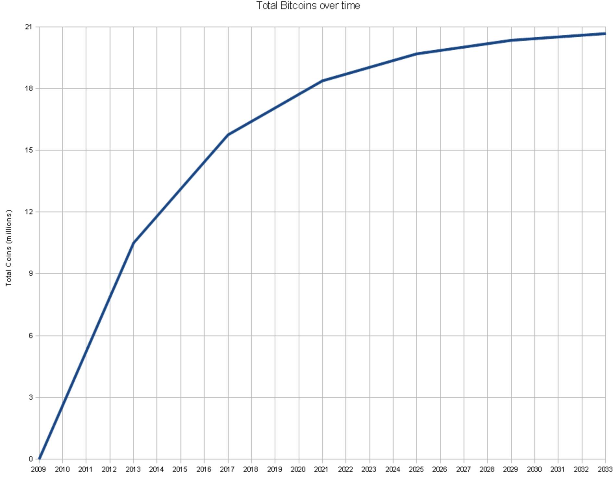
（图引用自网络）
我们可以看到，比特币的发行过程每隔四年发生一次改变，发行速率逐渐降低，随着时间推移趋于平缓。
同理，我们在其他数字货币项目就可以看到类似曲线，不过它们未必与比特币的发行曲线一样，有可能是离散式的，有可能是线性的，这取决于白皮书中规定的发行过程。
例如熵币ETP的发行过程也是一个衰减过程，不过ETP的衰减系数是0.95，所以相对比特币可以说更光滑了，它随着时间收敛到挖矿总量3000万，那么这个曲线看起来是这样的。
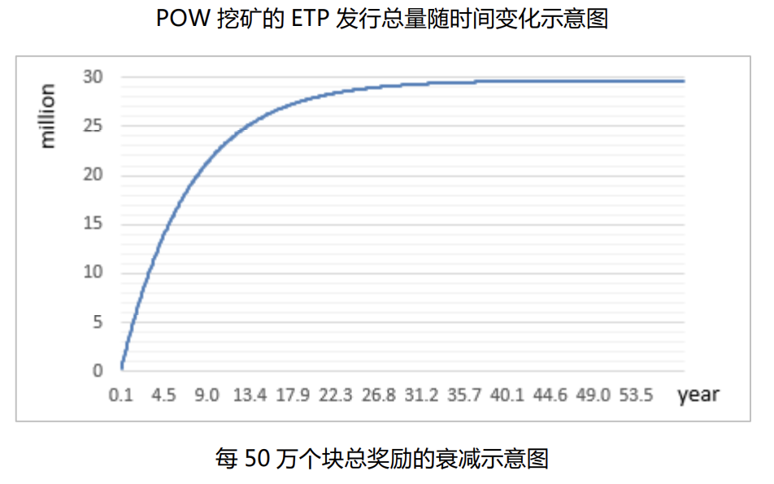
所以数字货币的发行过程可以认为是一个区块链项目的核心利益分配的过程，也是一个社区激励的过程，如何把有限的代币派发给愿意为项目付出的社区人，是考量一个区块链项目运营成熟度的重要指标。
今天，我简单介绍了数字货币，相信你对于数字货币已经有了一个初步的了解，数字货币作为区块链的第一个应用，已经广泛地被人们所熟知，并且大有燎原之势。
除了社区型的非盈利性开源数字货币项目，央行也在推动基于区块链交易平台，同时，由央行发行的法定数字货币也已经在这种平台上开始试运行。
可见数字货币的发展已经是未来的趋势，顺应着这种趋势，作为技术人的我们可以从中看到更大、更复杂的挑战。
这里给你留一个思考题，你可以在数字货币中看见怎样的挑战呢，你可以在下面留言，我们一起交流，感谢你的收听，我们下次再见。
初次接触到区块链的你，肯定是一头雾水：“区块链是什么，这玩意到底怎么回事”。
其实对于区块链的原理，你大可不必着急，咱们可以直接上手体验一下目前区块链的第一大应用：数字货币。
本篇的内容面向所有区块链的小白，我会教你如何使用数字货币，来帮你从另外一个维度理解区块链技术。
本篇内容包括但不限于：数字货币钱包介绍、下载安装、转账、数字货币交易所充币、提币等等。
区块链其实是从生产者的角度讨论一个抽象出来的概念。如果把区块链比作车辆设计图纸，那么数字货币就是正在跑的汽车。所以理解区块链的最直观的方式其实是从数字货币入手，而不是直接一上来就来理解原理。
数字货币作为区块链的第一大应用，拥有巨大的市场，你可以从“ coinmarketcap.com ”上了解几乎所有数字货币的概况。
如果想了解数字货币行情，可以打开 feixiaohao.com 进行查看，也可以手机下载“ MyToken ”或“ 币看”。
这两个 App 的使用方法与股票行情软件非常相似，上面几乎可以查询到所有已经“上市”的数字货币的实时价格与成交量信息。
数字货币钱包是最贴近用户的区块链程序，数字货币钱包会可以帮你管理数字货币私钥，发送交易，可以显示你的交易历史记录。从用户功能的角度，数字货币钱包比较接近我们日常使用的钱包，它帮助你管理纸币、硬币、信用卡借记卡。
数字货币钱包作为数字货币的载体，从技术角度来看，数字货币钱包分为三种类型。
以上的第1种和第2种会在各个数字货币的官网出现，属于真正意义上的数字货币钱包，1相比2而言，安全性要更高；所以我在这里推荐你先从全节点钱包开始尝试，毕竟全节点钱包基本囊括了该币种的所有功能实现。
而第3种钱包，与银行移动App或支付宝相比，在业务逻辑上区别不大。比如你会把钱托管到支付宝上一样，你也可以将你的数字货币放进第三类钱包中。
这种钱包往往都是多币种的，深受投资用户的喜欢，而且从方便性和用户体验来说，基本完爆1和2，例如以太坊系钱包imToken，多币种钱包Jaxx，以及各个数字货币交易平台。
无论是什么类型的钱包，建议你在获取钱包程序的时候，一律要从官网下载，即使是移动端App也强烈推荐从官网的入口进入。
上一节中，我们简单介绍了数字货币钱包的类型，本节内容将以全节点钱包作为例子，教你玩转数字钱包。我们这里会以某个币种的全节点钱包作为例子，穿插一些比特币 Electrum 轻钱包的例子，为你介绍数字货币钱包的上手方法。
由于我的电脑中安装了不同的数字货币钱包，它们的使用方法都是相似的。我截取的图片可能涉及了某些具体的币种，但这并不是我推荐安装建议，你可以忽略。另外在具体的操作过程中有大量图片展示，收听音频的你可以点击文稿查看。
全节点钱包程序是一种需要用户安装到桌面的软件，它需要互联网连接，不挖矿的话，资源消耗与其他中心化软件差不多。
与其他所有桌面客户端一样，首先用户需要获取安装包，安装包可以从官网下载，我们先到对应币种官网下载一个Windows版本的客户端钱包。
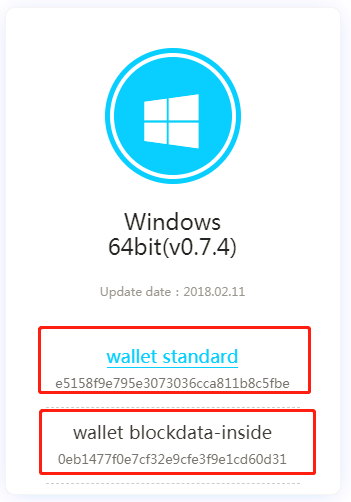
一直双击安装下一步等待安装完成，安装好以后桌面出现快捷方式，咱们双击打开，通常会出现钱包的主页面。
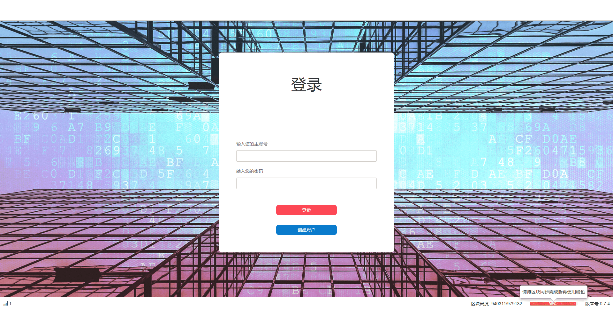
（ 某币种钱包主界面）
那我们来看看比特币，比如比特币的Electrum钱包长这样。
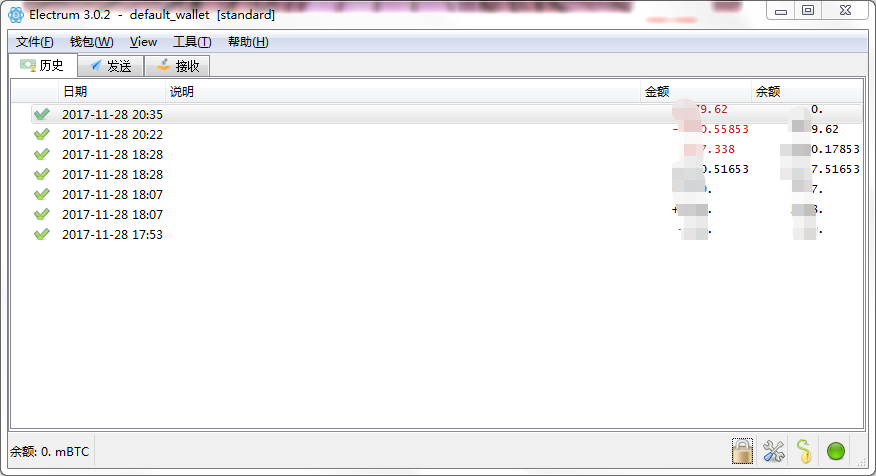
（比特币钱包主界面）
你可以搜索“Electrum”，进入官网下载。
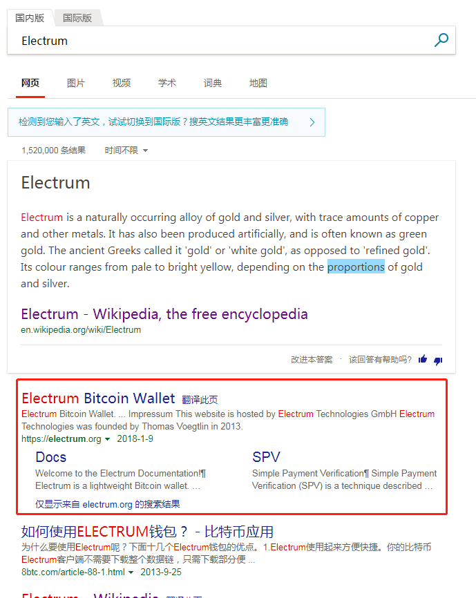
（在官网下载比特币钱包）
对于钱包程序来说，最重要信息的就是当前区块高度了，区块高度表示了当前你所在区块的序号，序号体现了你是否更新到了最新区块，而最新区块则决定了你能否查询到自己的交易。即规定了你所有交易账单的起始位置。
我们以Electrum钱包为例，点击圆圈中的控件，出现对话框，红框数字就代表了你本地钱包的块高。
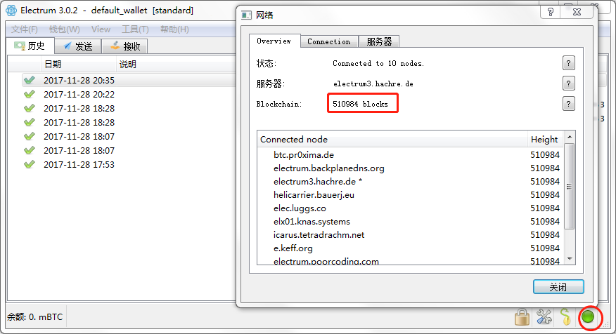 （比特币钱包块高）
由于Electrum的使用教程比较丰富，我们就不赘述了。
当你第一次安装好钱包以后，使用钱包的第一件事情就是创建账户（或者钱包文件）。
一般全节点钱包都支持多账户，尽管有些钱包有账户的概念，有些没有，在逻辑上也可以使用钱包文件替代账户这个概念。
例如Electrum轻钱包采用的是钱包文件，某些全节点钱包采用的是账户。咱们用某个币种的钱包为例子，点击创建账户以后，填好用户名密码，会得到如下信息：
（某币种钱包助记词）
敲黑板划重点：红字部分又称助记词。这种助记词是为了主私钥服务的，主私钥其实是一串非常长的字母和数字组合，无论是人脑记或者笔记都是非常不容易识别的，容易弄错，助记词的有序组成与主私钥是一一对应的。
如果记录保存好了助记词（红字部分），即使钱包丢失或者被破坏也没有关系，用户可以在其他钱包中导入助记词，依然可以操作资产。
所以说在区块链的世界，主私钥和助记词是操作资产的唯一途径，如果丢失，那么资产就丢失，不存在忘记助记词还能找回资产这回事。
我们来看看比特币的助记词，我们点击左上角【文件】-【新建/恢复】，一直下一步直到出现12个单词（暂时不必理会每一步中的选项，不同选项代表不同格式的钱包文件），这12个单词也是助记词，只要保存好了助记词，你的比特币可以在任意（标准版）比特币钱包导入。
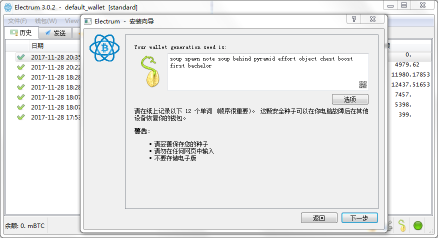 （比特币钱包助记词）
我们常听到别人说钱包地址，也就是对应到我们现在银卡的卡号。在币圈，地址其实也分很多种，我们今天只介绍最简单直观的——支付地址（Payment Address），也就是我们现在要说的钱包地址。现在咱们来看看自己的地址是什么。
在比特币中，地址是以1开头的一串字母和数字的组合，字母区分大小写。
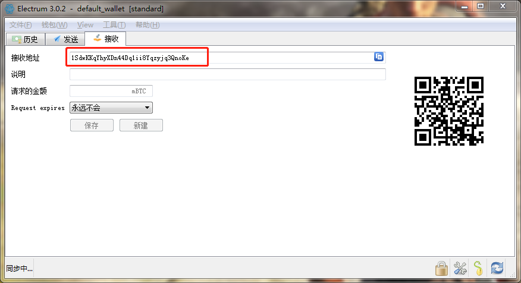
（比特币钱包地址）
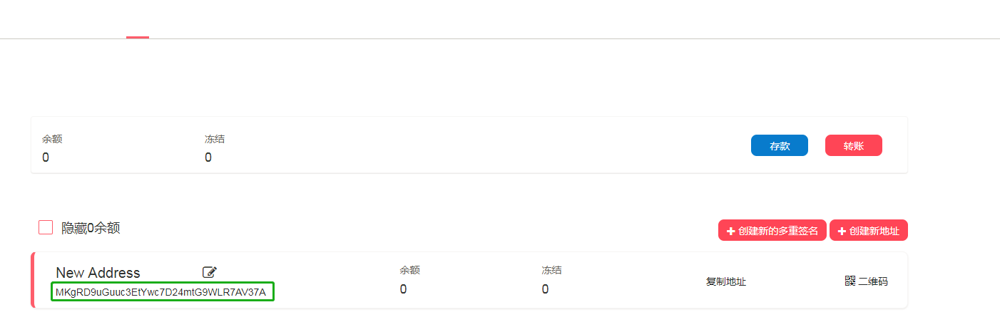
（某币种钱包地址）
好了，现在我们已经有地址了，可是地址上没有代币，钱包就是一个摆设。现在我们想办法搞点代币过来。
我们先搞点代币进来，一般有两种方式，挖矿和上数字货币交易所购买。挖矿的技术门槛虽然不高，但是过程繁杂，手续繁琐，不推荐入门尝试。
好了，现在我们就只剩下购买这一条路了。
请注意！目前不存在人民币对数字货币的场内交易平台，所以想用人民币购买数字货币的各位只能选择场外交易，比较有名的平台有coincola.com，由于涉及投资，我们就不深入讲了。
你如果具有投资热情，可以继续挖掘“coinmarketcap”中绿框内的选项：
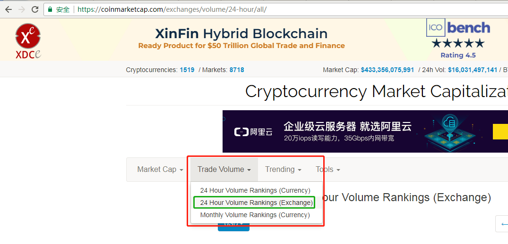
假设咱们已经拥有了比特币-BTC。
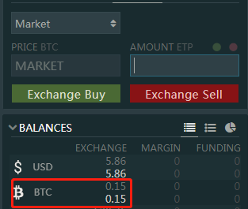
这是我刚刚在bitfinex上购买的0.15个比特币，其他交易平台原理大体相同，基本上比较大的交易平台都有交易手册，你可以自行翻看教程。
咱们接下来选择ETP/BTC 交易对，通过BTC购买一些ETP，然后找到提币，选择ETP提币。
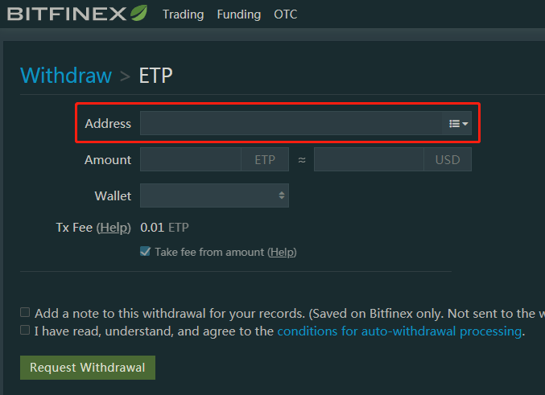 （提币地址）
这时候问题就来了，提币需要填写一个地址，这个地址就是咱们上文提到的钱包地址，你只需要把自己的钱包地址填入此处即可，填好其他项，发起提币请求即可。
接下来咱们只需要等待币到帐即可，到账的过程就是产生一笔区块链交易的过程，一般交易所都会提供TXID，就是交易哈希，供用户查询，TXID代表了这个区块链上某一个唯一的交易，也就是类似于咱们去银行转账后提供的流水单号。
我们可以根据TXID可以上区块浏览器（专门用于查询交易的工具链接）上查询该币交易，比如某一笔比特币交易：
https://blockchain.info/tx/6e64c2098b84b04a0d9f61a60d5bc8f5f80f37e19f3ad9c39bfe419db422b33c
网址 https://blockchain.info 后面这一长串就是TXID，下图是这一笔比特币交易的详细信息。
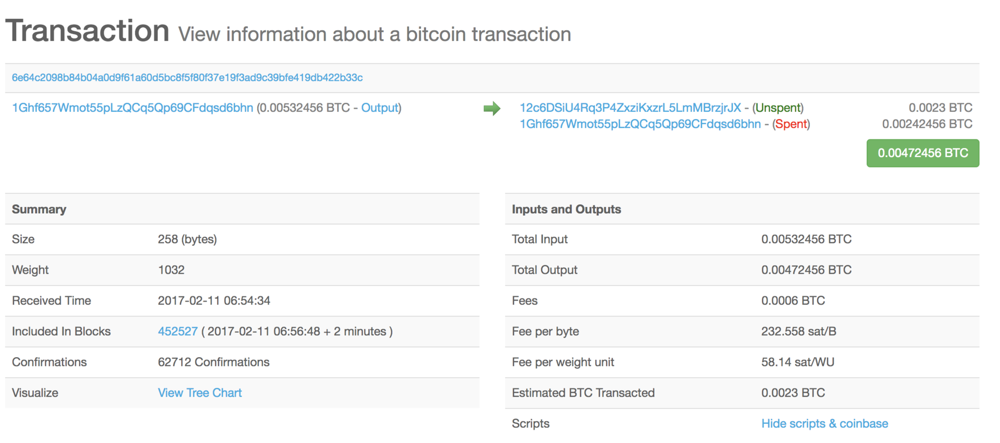 （比特币交易详细信息）
如果要把代币发送给别人，那么需要别人提供什么呢？对，就是钱包地址，这和银行转账需要别人提供银行卡号的道理一样。
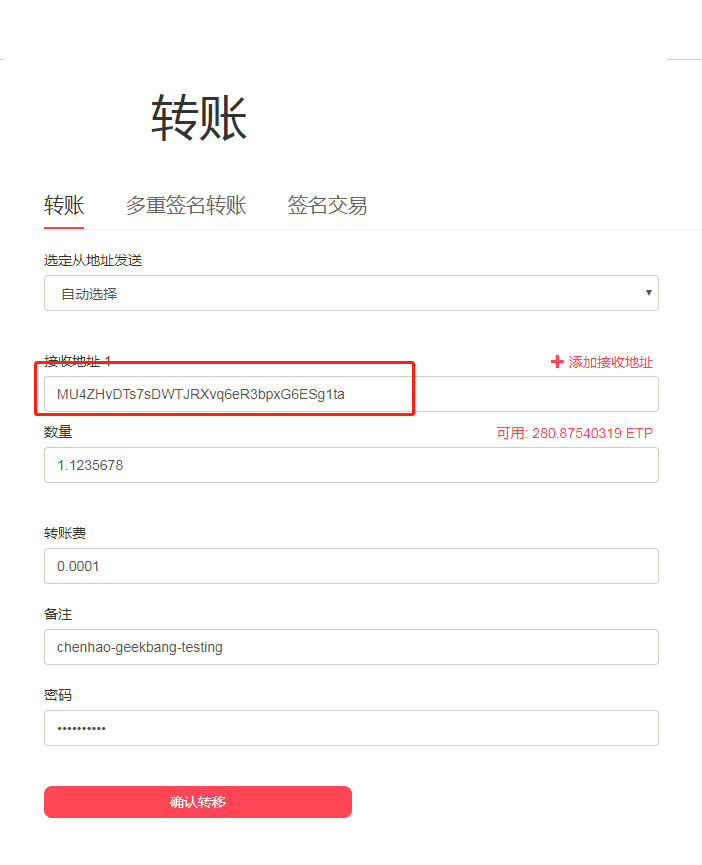 （某币种钱包转账） 如上图，咱们填写好表单以后，点击“确认转移”即可：钱包程序将为你生成一笔区块链交易并广播出去，大约等待1分钟就会被打包进区块，这个交易在任意的区块链浏览器上可以查询得到，咱们可以使用另外一个区块浏览器进行查询：
https://explorer.mvs.org/#!/tx/b3eb07276dbff703ecf9e4180a2bd8e58db346e55439ef831efcbbd958726a0c
这个区块链浏览器与上面一个区块浏览器不是同一个，但是都可以查询相同的交易，因为他们同属同一个主网（mainnet,相对应的是测试网testnet）。
各大交易所的充值功能，其实就是从自己的钱包转账到交易所的钱包地址，详细的充值和提币流程咱们会在后面的“弄懂数字货币交易平台”一文中详解。
今天我带你过了一遍数字货币的参与过程，我们先介绍了钱包，接着介绍了钱包地址，以及尝试购买了一些代币，然后提币到个人钱包当中进行了测试。
为了确认交易是否达成，我们还介绍了区块浏览器，最后还教你如何将代币转移给其他人。这一篇文章虽然使用了特定的两个例子，但是在绝大多数数字货币钱包中，使用方式都是类似的。
最后，给你留下一道思考题，这一篇文章我们仅仅讨论了如何购买，那么数字货币挖矿的过程会是怎样的呢？你可以给我留言，感谢你的收听，我们下期再见。
OK国际站：【www.okex.com】- 火币网国际站：【www.huobi.pro】- 币安：【www.binance.com】- 中比特国际站：【www.zb.com】- 中比特海外版：【www.exx.com】- 比特儿海外版:【www.gate.io】- 比特时代海外版:【www.aex.com】- 元宝网海外版:【www.bcex.ca】- 聚币海外版:【www.coinegg.com】- 云币海外版:【www.big.one】- 币久网海外版:【www.cex.com】- 币赢网:【www.coinw.com】- kex:【www.kex.com】-
Bitfinex:【www.bitfinex.com】- B网:【www.bittrex.com】- R网:【www.rightbtc.com】- P网:【www.poloniex.com】- L网:【liqui.io】- H网：【hashtoken.co】- CEO：【www.bite.ceo】- BTBT：【www.btbt.top】- HitBTC:【hitbtc.com】- bithumb:【www.bithumb.com】- coincheck:【coincheck.com/cn/】- bit-z:【www.bit-z.com】-
以德：【etherdelta.com】- 比特股：【bitshares.org/wallet/#】-
local：【localbitcoins.com/zh-cn】- 可盈可乐：【www.coincola.com/】- 比特币世界【www.bitcoinworld.com/】- 元宝场外交易【www.otc789.com/】-
非小号：【www.feixiaohao.com】- 手机看行情软件：mytoken，aicoin-
金色财经：【www.jinse.com】- 巴比特：【www.8btc.com】- bitcoin86：【www.bitcoin86.com】-
经过了我前面几篇文章的铺垫讲解，你应该已经对区块链的知识体系已经有了一个基本的了解，但是，区块链是一项新兴的事物，大多数人依然处于知识的迷雾区，对区块链的理解并不是十分透彻。
我在很多场合都做过区块链领域的分享，有趣的是，无论是线上还是线下，大家都会问我一些相似的问题，今天，我就跟你一起聊聊几类理解区块链的常见误区。观点仅代表我个人的看法，也希望你可以提出不同的见解。
在各种场合聊起数字货币时，我都会被问到这个问题。
其实，这个问题不是单纯一个数字货币的问题，而是货币发展的问题。
因为我们从小就被灌输了“钱可以买到东西”，所以信用货币的概念已经成了一种本能反应，这种本能反应会让我们觉得信用货币的存在是那样的理所应当，同时也自然而然地会把信用货币的概念代入到数字货币当中。
所以，这个时候，我们首先要跳出自己的视野局限。
如果你穿越成唐代人，忽然讨论起人民币这种特殊的纸可以买米买粮，其他唐代人肯定不买账。因为大家只认金子和银子。同理，当我们在讨论数字货币的时候，你完全套用信用货币的概念势必难以兼容，这与唐代人处境是不是相似呢？
并且，信用货币的体系并不是完美无缺的，首先是它在刚出现的时候不是特别的稳定，发展过程一波三折。一战和二战期间的经济问题，或多或少都与当时的货币设计缺陷有关，现代信用货币的设计都是建立在这些血的教训上的。
其次是信用货币是与国家利益息息相关的。比如国家之间的贸易战，通常会在本国货币政策上所有体现。
所以当我们在讨论数字货币的时候，先要想清楚我们到底在讨论什么，因为我们没有讨论任何基于国家的信用货币体系，我们在讨论的是一个完全崭新的虚拟货币体系。
很多人理解信用货币的方法很简单，比如我经常遇见的观点有：我相信法币是因为有政府背书。
但如果我们换个角度想，选择相信其实是个人行为。如果某种资产具有非常高度流动性，比方说美元，在东南亚或者中东地区，如果你不接受美元支付，美国政府也不会拿你怎么样，这桩生意你不做总有人做。
所以你通常会换个思路，我先接受，待会换成人民币不就好了，数字货币也是同理，充足的流动性本身就可以为资产提供良好的背书。
如果硬要说一说数字货币的背书，我认为，社区本身就是一种背书。
社区由用户、开发者、矿工三者组成的。
他们之间的利益相互绑定，用户使用数字货币决定了市场价格，开发者为数字货币开发了更多的功能来提升生产效率，矿工是系统的维护者，三者包含了数量巨大的个体，每个个体都相当于为数字货币作了背书。
另外还有一种误解来自于行业之外的人，认为数字货币就是投机、就是炒币。其实不是这样的，数字货币出现的初衷并不是为了投机炒币，而是希望构造一个点对点的去信任系统，只是在发展过程中被投机主义者大肆利用了。
确切的说法应该是数字货币的特性刚好满足投机者的需求，即使没有数字货币，投机主义也会存在并且长期存在，而且投机在金融领域并不是一个贬义词，它也是中性词汇。
投机者为整个交易市场提供了充足的流动性，商品价格波动风险被所有投机者所稀释，这是一个健康的交易市场所必备的。所以数字货币是中立性的工具，我们应当理性看待。
很多人接触了区块链以后，觉得看什么都想拿区块链来做。但是，你忽略了一点，区块链本身也属于分布式系统，分布式系统有哪些局限、哪些约束，区块链一样也有。
需要指出的是，区块链领域有个说法叫做“不可能三角”，意思是说区块链的“去中心化”“安全”“环保”三个要素不可能同时全部满足。
这个说法我没有仔细论证，个人感觉这三个指标并不好量化，所以未必成立。本着学术严谨的原则，我不作过多的评价。
反而在分布式领域，有个著名的CAP定理。
在CAP中，Consistency是一致性，表示同样数据在分布式系统中所有地方都是被复制成相同；Availability是可用性，表示所有在分布式系统活跃的节点都能够处理操作且能响应查询；Partition tolerance是分区容忍性，表示不同节点之间数据同步有意外情况产生时，能够容错。
一般情况下，CAP理论认为你不能同时拥有上述三种，只能同时选择两种。所以，当我们应用到区块链上时，可以明显地发现区块链其实是一个AP系统，尤其在A这个指标上，也就是可用性做得非常好，所以相应地，C就会降低，反映到具体系统中的交易吞吐量上，自然会也会降低。
当我们在分区容忍性和一致性中做取舍的时候，如果强调“不可篡改”“去中心化”这两个特性，就会明显感觉到区块链跟不上大吞吐量的业务。
所以理解了以上内容，我们在做技术选型时，如果去中心化不是强需求，还是建议你使用中心化的解决方案。
既然谈到了中心化，我们就来看看“你是否应该去中心化”的话题，自区块链发展至今，“中心化”和“去中心化”的争论就一直存在。
支持去中心化的观点认为：区块链的初衷就是去中心化，所以也衍生出一条准则：“凡是没有做好去中心化指标的系统都不是区块链”。
持有这样观点的人通常都跟我一样是技术出身，或多或少都有些理想主义的极客情怀，这一点本来是无可厚非的，但市场是逐利的，情怀其实常常并没有办法变现。
所以，这导致的最直接结果就是：秉持这种去中心化原则会让区块链的落地过程异常缓慢。
持有“去中心化是唯一准则”这样的观点，往往也会误导刚刚入门的业务和产品相关的人员，误以为去中心化是区块链产品的一条评价标准。
其实并不是这样，去中心化只是一个公有区块链应当具备的基本特性，但是我们衍生到区块链应用层面的时候，其实去中心化往往并不能契合到一个公司的业务上，所以我在这里提倡：当我们在思考区块链的解决方案时，还是应当以需求为第一导向。
事实上，我们在讨论去中心化的时候，更多是夹杂了对强势的不满，这其实可以转化成“对服务者进行监督”的思路，一味地强调去中心化可能会陷入舍本逐末的尴尬境地，我们一定要看需求是什么，再去选择要不要。
换句话说，任何情况下，人与人之间必然存在信息不对称和认知不对称的问题，任何应用都会存在信息提供者和信息消费者这两种角色。
这是由人类社会结构决定的，妄图消除这两种角色之间的差异是非常难的。所以应用的“去中心化”要问运营者和消费者，而不是空喊口号。
有个常提及的词叫做“赋能”，被赋于能力的角色始终处于被动地位的，我们可以把区块链看做新型的赋能工具，至于是不是去中心化，设计过程中要看具体的应用场景，实施过程最终取决于消费者。
我相信很多人入门区块链以后都会有个疑问，区块链这么火热，怎么都是公有链热度高，联盟链反而声响不大。
所谓联盟链，就是这个区块链具有准入许可，不像公链，任何人都可以随时进入，准入许可意味着候选节点进入区块链时，需要得到已经在网络中的节点的许可，所以联盟链也叫做许可链。联盟链的节点数通常不多，维护成本相比公链要低。
造成联盟链不普及的原因，有以下三种。
第一是观察者偏差，因为To B的业务往往是商务合作的形式，并不直接进入大家的视野，实际上有很多大型机构已经尝试，或者已经部分落地了的联盟链业务。
第二是联盟链往往会遇到政策和监管要求，与公链相比，实施起来条条框框太多了，发挥的空间有限。
第三是联盟链表面上是一个技术问题，本质上是一个博弈问题，这是我2016年在文章《论联盟链的局限性与公有链》表达过的一个观点。
你往往需要设计一个业务模型，使得所有的博弈趋于均衡稳定，但是这又非常困难，我们无法一概而论。
总不能每做一块业务还要搞个形式化验证吧，并且联盟链无论是应用生态还是技术迭代都会比公链缓慢。
所以整体上看，联盟链的应用范围仍然不及公链广泛。
很多早期的区块链文章经常说：区块链会颠覆当下的互联网什么的，关于这一点，我其实持保留意见。区块链如何打通与现有互联网的界限还是一个未知数，最大的可能性仍然是区块链成为互联网的一部分，作为底层设施改进了原来互联网的架构。
今天，我带着你从不同的角度聊了理解区块链的常见误区，我们从谁在为区块链背书谈起，提到了区块链是否是万能的，去中心化是不是区块链的唯一标准，联盟链为什么没有公有链普及，以及区块链是否颠覆了当下的互联网。希望能唤起你对区块链的独立思考。
最后和你分享一个问题，区块链会改变微信和支付宝的地位吗？你可以给我留言，我们一起讨论，感谢你的收听，我们下期再见。
这篇文章是区块链基础部分的最后一篇，在今天的内容里，我会介绍一些主流、热门的区块链项目，同时，我也会介绍一些创新型的区块链项目，希望可以让你对区块链的行业有一个大体的认知。
由于区块链项目数量众多，我仅从市值前100的项目中，挑选一些我比较熟悉的区块链项目进行讲解。
区块链行业的发展非常迅速，币种市值排名的波动幅度也比较大，例如，在2017年8月以前，比特现金项目还没有上线，如今已经是常霸市值Top5的区块链项目之一。
现在，常霸Top3的区块链项目分别是比特币、以太坊、瑞波币。那么，这些币种到底是做什么的呢？为什么市值会经常波动呢？联盟链项目为什么没有出现在这里呢？今天，我就一一为你介绍这些问题。
由于比特币项目已经为大家所熟知，所以在这里，我就简单介绍一下参数，不再过多介绍。总体来看，比特币的市值和交易量远远超过其他区块链项目。
比特币的发布时间为2009年1月9号，预计它的挖矿可以一直持续到2140年，发行总量收敛到2100万。比特币的出块时间是10分钟，出块时间是指全网平均产生一个区块的时间间隔。
比特币是所有数字资产的始祖，这带来的效果就是：比特币的公众认可度非常高，纵然面临着矿池中心化 （关于矿池中心化的问题会在后面的“深入区块链技术”部分内讲解）的问题，但是公众依然非常信任比特币这种资产。
比特币曾经面临过区块容量不足的问题，但随着隔离见证（关于隔离见证的问题，也会在后面“深入区块链技术”的部分进行讲解）的生效，网络拥堵的问题缓解了很多。具体细节我们留到“比特币专题”中再做详细叙述。
以太坊是一个区块链应用平台，它的极大创新在于它提供了智能合约这种可以自定义业务逻辑的工具，智能合约是一种可编程的合约，合约是由用户编写并且部署到区块链上的。
以太坊的优势是为全世界的开发者们提供了一种开发工具，这种工具让所有人都能释放出巨大的创造力，所以基本上可以看成：只要是有一定技术基础的开发者，通过智能合约可以随时为以太坊贡献内容。
这形成了一种良性循环，开发者使用智能合约的时候，发现的问题提交给以太坊开发者社区，社区改进智能合约的缺陷，新的开发者基于智能合约开发多样性的工具包，这种核心开发者与社区互动的良性循环是以太坊生态最重要的一部分。
以太坊的口号是“世界计算机”，从这句口号里，可见它野心的大小。
在2016年的时候，以太坊的市值大约是比特币的十分之一，在2017年，这个数字已经达到四分之一。
以太坊在2014年开始众筹，2015年3月份正式运行，它采取的共识机制是PoW，但根据核心团队公布的方案，后期会逐渐迁移到PoS共识算法。以太坊的总发行量是：6000万+1872万/年，目前的区块时间是12秒。
同时我们从以太坊社区可以看到，以太坊绝大部分开发流程和智能合约都已经形成行业标准，比如常见的ERC20代币标准，ERC725身份标准。
而ERC20代币标准，则为智能合约指明了主要的业务方向：数字资产，有的叫智能资产，它们的含义差不多。以太坊2017价格大幅上涨，最直接的原因就是：ERC20代币成为事实意义上的区块链标准资产。
瑞波币（Ripple）是一个比较另类的区块链项目，因为从本质上来说，它更像是一种支付结算协议，瑞波币不需要挖矿，它是通过一种叫“Open Coin”的算法，提供瑞波协议共识来达到记账的目的。
瑞波币旨在为全球跨境机构提供了高效率的支付过程，提供较好的全球支付体验。因为涉及了机构之间的资产转移，瑞波币被设计成需要准入许可才能进入瑞波的支付网络，这一点有些像我们所说的联盟链。
瑞波团队掌握了一半以上的瑞波币，所以瑞波币面临的币价被操纵的问题很严重。如果你是一个技术极客，那么你可以略过该项目。如果你想创建一个有关支付结算的区块链项目，那么一定要研究瑞波币。
如果我们仔细观察，会发现比特币的Logo颜色为金色，而莱特币的Logo的颜色为银色。一金一银，相信你应该明白莱特币的定位了。
莱特币在技术上仅仅把比特币的挖矿算法修改成了Scrypt算法，Scrypt算法是一个可参数化、可配置的挖矿算法，不过它依然没有防住专业矿机的出现。它的其他核心代码几乎与比特币保持一致。
莱特币的崛起得益于良好的市场运作，从提供的功能来看，莱特币与比特币没有区别。那么说，为什么还要有莱特币呢？
是这样的，比特币扩容之争的核心焦点在是否使用“隔离见证”的方法，我们其实知道，“隔离见证”虽然在比特币社区提出，但是第一个应用的地方是莱特币，相信你能看出这里的逻辑，即：莱特币作为比特币的先行者，它会替代比特币做一些具有实验性质的试运行。
目前比特现金市值排名基本在Top5左右，与比特币相比，比特现金仅仅是从区块容量上高于比特币，其他技术上的区别并不是很大。
比特现金的诞生要从比特币扩容之争开始谈起，由于比特币的区块容量是1MB，随着用户增多，交易愈发拥堵。
所以围绕着提升网络容量，社区内部发生了分歧，“支持隔离见证”与”支持直接扩大区块尺寸”分成了两派，这就是著名的扩容之争。
比特币核心开发者们支持前者，矿工们支持后者，由于比特币核心开发者掌握了代码的控制权，但是矿工掌握了记账权，所以两权发生了分离，矿工索性一拍大腿，你不改代码，我花钱找人改，这就产生了比特现金。
比特现金作为社区共识分裂的产物，体现了区块链开放共识的特点，你不支持我，我分分钟就可以独立出来。
Tether也是一个特殊的区块链项目，它为所有区块链资产提供了法币（主要是美元）兑换网关。
Tether又称USDT，言外之意就是和美元一对一锚定，用户存入多少美元，就会产生多少USDT进入虚拟资产网络。USDT可以直接在虚拟货币交易所与比特币等其他区块链资产进行交易。
Tether可以直接在二级市场流通，是数字货币交易市场重要的交易入口。另外，Tether可能存在被冻结和没收的风险。
匿名性区块链项目是指：使用交易匿名技术，让公开可查询的交易内容变成私密的匿名性区块链项目。市值比较不错的有门罗币、达世币、Zcash三种，它们分别使用了不同类型的匿名技术，为区块链技术的匿名特性发展做出了贡献。
从需求上来看，这三种都是为了解决其他所有数字货币无法匿名的问题，因为从技术上看，比特币也好，以太坊也好，交易是可以被追踪的。
所以以上三种区块链提供了不同程度的匿名，按照匿名程度分别是：达世币<门罗币
中国的公链项目不多，分别有NEO、量子链、元界、公信宝、比原链。
目前市值最高的是NEO，NEO的前身是小蚁，在经历了2017年初的市值低谷之后，NEO通过品牌重塑以及市场推广，目前已经稳居市值Top10。
NEO主打的也是智能合约，不过相比以太坊，NEO更有方向性，旨在通过智能合约塑造一个基于区块链的智能经济。NEO的创始人达鸿飞，也是一个非常Nice的大叔。
量子链是也是国内比较知名的区块链项目，它的市值稳居Top20，与NEO不同的是，量子链完全支持以太坊智能合约，也就是说能在以太坊上运行的智能合约也能在量子链上运行。
量子链的创始人是戴旭光，人称帅初，是一个不到30岁就登上福布斯的技术极客。
元界在2017年初上线造成了一波市场轰动，元界是当时唯一一家既能提供数字货币交易平台服务，又能提供公链技术服务的技术团队，2017上半年整个市场非常看好。
随即创始人初夏虎基于元界发了两个代币，由于这两个代币的运作没有跟上，导致市场恶评不断，再经过9.4的一刀切式监管，元界项目坠入低谷。
公信宝是比特股社区的开发者，将比特股的底层技术石墨烯技术改造成属于自己的公链项目，公信宝团队是一个靠谱的团队，市场价值也十分不错。
比原链是巴比特社区创始人长铗发起的，比原链目前负责人是段新星，比原链也是一个致力于打造资产数字化，提供资产流通的一个公链平台。
总结一下，今天我带你过了一遍区块链的主流项目，包括比特币、以太坊、瑞波币、莱特币、比特现金、Tether、匿名性区块链项目以及国内的公有区块链项目。大部分市值较高的项目还都属于数字货币的范畴。
最后留给你一个问题，没有发行市值高的区块链项目多是数字货币项目，所以这是为什么呢？你可以给我留言，我们一起讨论。
感谢你的收听，我们下次再见。
在“浅说区块链基础”的部分中，我概括介绍了区块链的入门知识以及区块链的应用领域，在“深入区块链技术”部分的第一篇中，我将带你一起总览下区块链的技术概要，本篇提到的所有技术内容，我们都会在后续文章中进行详细的讲解。
简单来说，区块链是一个提供了拜占庭容错、并保证了最终一致性的分布式数据库；从数据结构上看，它是基于时间序列的链式数据块结构；从节点拓扑上看，它所有的节点互为冗余备份；从操作上看，它提供了基于密码学的公私钥管理体系来管理账户。
或许以上概念过于抽象，我来举个例子，你就好理解了。
你可以想象有100台计算机分布在世界各地，这100台机器之间的网络是广域网，并且，这100台机器的拥有者相不信任，那么，我们采用什么样的算法（共识机制）才能够为它提供一个可信任的环境，并且使得：
通常我们在分布式系统领域也见到过上述的要求，比如第2条就阐述了分布式系统基本要求：一致性要求；基于少数服从多数原则是为了容忍网络分区；区块链就是解决上述问题的技术方案。
我们结合以往讲过的内容，和将要讲的内容，先提炼一下区块链在技术上的7个特征，你先记住，我们后续会慢慢道来：
我们在讨论区块链时，通常指的是公有区块链。除此之外，还存在另外一种区块链：联盟链。
我们在前面的文章介绍过它。所谓联盟链，就是这个区块链具有准入许可，不像公链，任何人都可以随时进入。准入许可也就意味着候选节点进入区块链时需要得到已经在网络中的节点许可，所以联盟链也叫做许可链。
早期文章里可能还会涉及私有区块链的定义，其实我认为私有区块链更像是一个捏造的概念，如果是完全私有的分布式数据库，技术人员往往会有更好的选择。
如今云计算日趋成熟，大规模的分布式存储已经不是难题，不必在区块链这种低并发、低吞吐量的系统中折磨自己。
所以我们所说的区块链通常指的是公链。除了公链和联盟链的概念，还有一种区块链概念，叫作侧链。
侧链是一种双向挂钩技术，将主链中的代币锁定到侧链中使用。所以可以将主链看作主干道，侧链看作与主链相对独立的一条分支道，作为主链功能的低耦合拓展。
无论是公链还是联盟链，至少需要四个模块组成：P2P网络协议、分布式一致性算法（共识机制）、加密签名算法、账户与存储模型。
P2P网络协议是所有区块链的最底层模块，负责交易数据的网络传输和广播、节点发现和维护。
通常我们所用的都是比特币P2P网络协议模块，它遵循一定的交互原则。比如：初次连接到其他节点会被要求按照握手协议来确认状态，在握手之后开始请求Peer节点的地址数据以及区块数据。
这套P2P交互协议也具有自己的指令集合，指令体现在在消息头（Message Header)的命令（command）域中，这些命令为上层提供了节点发现、节点获取、区块头获取、区块获取等功能。
这些功能都是非常底层、非常基础的功能。如果你想要深入了解，可以参考比特币开发者指南中的Peer Discovery的章节。
在经典分布式计算领域，我们有Raft和Paxos算法家族代表的非拜占庭容错算法，以及具有拜占庭容错特性的PBFT共识算法。
如果从技术演化的角度来看，我们可以得出一个图，其中，区块链技术把原来的分布式算法进行了经济学上的拓展。
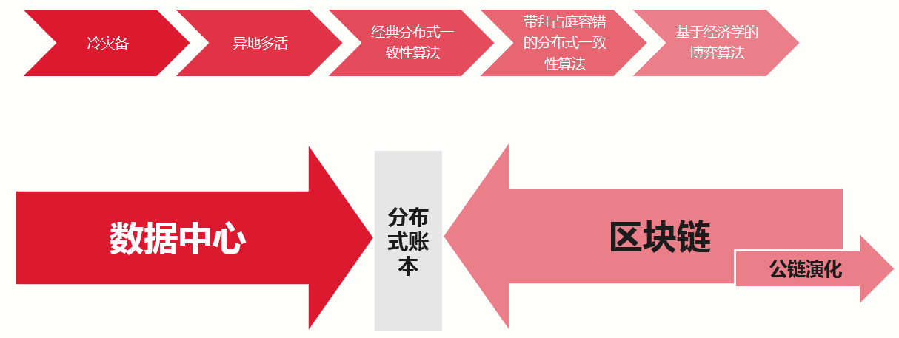 （图片来自网络）
在图中我们可以看到，计算机应用在最开始多为单点应用，高可用方便采用的是冷灾备，后来发展到异地多活，这些异地多活可能采用的是负载均衡和路由技术，随着分布式系统技术的发展，我们过渡到了Paxos和Raft为主的分布式系统。
而在区块链领域，多采用PoW工作量证明算法、PoS权益证明算法，以及DPoS代理权益证明算法，以上三种是业界主流的共识算法，这些算法与经典分布式一致性算法不同的是融入了经济学博弈的概念，下面我分别简单介绍这三种共识算法。
PoW：通常是指在给定的约束下，求解一个特定难度的数学问题，谁解的速度快，谁就能获得记账权（出块）权利。这个求解过程往往会转换成计算问题，所以在比拼速度的情况下，也就变成了谁的计算方法更优，以及谁的设备性能更好。比特币本身的演化很好地诠释了这个问题，中本聪设计的思路本来是由CPU计算。随着市场发展，人们发现GPU也可以参与其中，而且效率可以达到十倍百倍，现在，这项工作基本以ASIC专业挖矿芯片为主。
PoS：这是一种股权证明机制，它的基本概念是产生区块的难度应该与你在网络里所占的股权（所有权占比）成比例，目前有三个版本PoS1.0、PoS2.0、PoS3.0。它实现的核心思路是：使用你所锁定代币的币龄（CoinAge）以及一个小的工作量证明，去计算一个目标值，当满足目标值时，你将可能获取记账权。
DPoS：简单来理解就是将PoS共识算法中的记账者转换为指定节点数组成的小圈子，而不是所有人都可以参与记账，这个圈子可能是21个节点，也有可能是101个节点。这一点取决于设计，只有这个圈子中的节点才能获得记账权。这将极大地提高系统的吞吐量，因为更少的节点也就意味着网络和节点的可控。
由于我不是密码学专业出身，所以这里我将会以介绍为主。
在区块链领域，哈希算法是应用得最多的算法。哈希算法具有抗碰撞性、原像不可逆、难题友好性等特征。
其中，难题友好性正是众多PoW币种赖以存在的基础，在比特币中，SHA256算法被用作工作量证明的计算方法，也就是我们所说的挖矿算法。
而在莱特币身上，我们也会看到Scrypt算法，该算法与SHA256不同的是，需要大内存支持。
而在其他一些币种身上，我们也能看到基于SHA3算法的挖矿算法。以太坊使用了Dagger-Hashimoto算法的改良版本，并命名为Ethash，这是一个IO难解性的算法。
当然，除了挖矿算法，我们还会使用到RIPEMD160算法，主要用于生成地址，众多的比特币衍生代码中，绝大部分都采用了比特币的地址设计。
除了地址，我们还会使用到最核心的，也是区块链Token系统的基石：公私钥密码算法。
在比特币大类的代码中，基本上使用的都是ECDSA。ECDSA是ECC与DSA的结合，整个签名过程与DSA类似，所不一样的是签名中采取的算法为ECC（椭圆曲线函数）。
从技术上看，我们先从生成私钥开始，其次从私钥生成公钥，最后从公钥生成地址，以上每一步都是不可逆过程，也就是说无法从地址推导出公钥，从公钥推导到私钥。
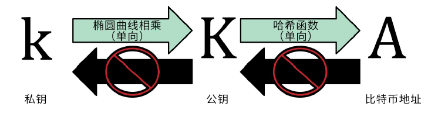
（图来自《精通比特币》一书）
从一开始的定义我们知道，仅从技术角度可以认为区块链是一种分布式数据库，那么，多数区块链到底使用了什么类型的数据库呢？
我在设计元界区块链时，参考了多种数据库，有NoSQL的BerkelyDB、LevelDB，也有一些币种采用基于SQL的SQLite。
这些作为底层的存储设施，多以轻量级嵌入式数据库为主，由于并不涉及区块链的账本特性，这些存储技术与其他场合下的使用并没有什么不同。
区块链的账本特性，通常分为UTXO结构以及基于Account-Balance结构的账本结构，我们也称为账本模型。UTXO是“unspent transaction input/output”的缩写，翻译过来就是指“未花费的交易输入输出”。
这个区块链中Token转移的一种记账模式，每次转移均以输入输出的形式出现。而在Balance结构中，是没有这个模式的。
今天我介绍了区块链的技术概念、分类以及核心技术组成，相信你对区块链技术有了一个初步的了解。
区块链虽然是一个新兴的概念，但它依赖的技术一点也不新，如非对称加密技术、P2P网络协议等。好比乐高积木，积木块是有限的，但是不同组合却能产生非常革新的事物。
所以区块链也成了一个新的领域，基本上现有的很多概念，都能被“区块链化”，那么你能否在自己的领域，想到“区块链化”哪些概念呢？你可以给我留言，我们一起讨论。
感谢你的收听，我们下期再见。
参考链接：
在上一篇文章中，我大致讲解了一下区块链技术的几个核心要素。P2P网络协议、分布式一致性算法（共识机制）、加密签名算法、账户与存储模型。今天我们就来看看区块链技术的第一个核心要素：P2P网络。
如果我们简单来看P2P技术，它的应用领域已经非常广泛了，从流媒体到点对点通讯、从文件共享到协同处理，多种领域都有它的身影出现。
同样的，P2P的网络协议也有很多，比较常见的有BitTorrent、ED2K、Gnutella、Tor等，也就是我们常说的BT工具和电驴。
比特币、以太坊等众多数字货币都实现了属于自己的P2P网络协议，但是这种模式并不同于以上讨论的P2P网络协议，所以我们今天讨论的重点主要是区块链技术的P2P技术，也就是比特币和以太坊的P2P网络。
由于区块链的P2P网络技术知识繁多，我们主要提炼其中的四个内容进行讲解：区块链的网络连接与拓扑结构、节点发现、局域网穿透与节点交互协议。
希望读完本篇可以让你对目前成熟的区块链P2P网络的拓扑结构以及运行原理有个大体的认知。
除去少数支持UDP协议的区块链项目外，绝大部分的区块链项目所使用的底层网络协议依然是TCP协议。
所以从网络协议的角度来看，区块链其实是基于TCP/IP网络协议的，这与HTTP协议、SMTP协议是处在同一层，也就是应用层。
在“区块链的常见误区”这篇文章中，我们提到了“区块链是否会颠覆互联网”这一说法，如果要是认真分析的话，它颠覆的层面其实最多只到HTTP协议，不能再多了。
以HTTP协议为代表的、与服务端的交互模式在区块链上被彻底打破了，变更为完全的点对点拓扑结构，这也是以太坊提出的Web3.0的由来。
比特币的P2P网络是一个非常复杂的结构，考虑到矿池内部的挖矿交互协议与轻节点。我们仅仅讨论全节点这种场景下的P2P网络发现与路由。
比特币的P2P网络基于TCP构建，主网默认通信端口为8333。
以太坊的P2P网络则与比特币不太相同，以太坊P2P网络是一个完全加密的网络，提供UDP和TCP两种连接方式，主网默认TCP通信端口是30303，推荐的UDP发现端口为30301。
P2P网络拓扑结构有很多种，有些是中心化拓扑，有些是半中心化拓扑，有些是全分布式拓扑结构。
比特币全节点组成的网络是一种全分布式的拓扑结构，节点与节点之间的传输过程更接近“泛洪算法”，即：交易从某个节点产生，接着广播到临近节点，临近节点一传十十传百，直至传播到全网。
（比特币全球节点图，图来自网络）
全节点与SPV简化支付验证客户端之间的交互模式，更接近半中心化的拓扑结构，也就是SPV节点可以随机选择一个全节点进行连接，这个全节点会成为SPV节点的代理，帮助SPV节点广播交易。
节点发现是任何区块链节点接入区块链P2P网络的第一步。这与你孤身一人去陌生地方旅游一样，如果没有地图和导航，那你只能拽附近的人问路，“拽附近的人问路”的这个动作就可以理解成节点发现。
节点发现可分为初始节点发现，和启动后节点发现。初始节点发现就是说你的全节点是刚下载的，第一次运行，什么节点数据都没有。启动后发现表示正在运行的钱包已经能跟随网络动态维护可用节点。
在比特币网络中，初始节点发现一共有两种方式。
第一种叫做DNS-seed，又称DNS种子节点，DNS就是中心化域名查询服务，比特币的社区维护者会维护一些域名。
比如seed.bitcoin.sipa.be这个域名就是由比特币的核心开发者Sipa维护的，如果我们通过nslookup会发现大约二十多个A纪录的IPv4主机地址。
我们通过nc命令尝试连接域名下的某个主机的8333端口会发现连接成功，运行结构如下。
✘ chenhao@chenhaodeMacBook-Pro ~ nc -nvv 149.202.179.35 8333
found 0 associations
found 1 connections:
1: flags=82<CONNECTED,PREFERRED>
outif en0
src 192.168.1.104 port 62125
dst 149.202.179.35 port 8333
rank info not available
TCP aux info available
Connection to 149.202.179.35 port 8333 [tcp/*] succeeded!
好的，到目前为止我们已经手动做了一遍初始节点发现的工作，这些操作是由比特币的代码完成的。
第二种方式就是，代码中硬编码（ hard-code ）了一些地址，这些地址我们称之为种子节点（seed-node），当所有的种子节点全部失效时，全节点会尝试连接这些种子节点。
用在以太坊中，思路也大致相同，也是在代码中硬编码（hard-code）了一些种子节点做类似的工作。
在Bitcoin 的网络中，一个节点可以将自己维护的对等节点列表(peer list)发送给临近节点，所以在初始节点发现之后，你的节点要做的第一件事情就是向对方要列表：“快把你的节点列表给我复制一份。”
所以在每次需要发送协议消息的时候，它会花费固定的时间尝试和已存的节点列表中的节点建立链接，如果有任何一个节点在超时之前可以连接上，就不用去DNS seed 获取地址，一般来说，这种可能性很小，尤其是全节点数目非常多的情况下。
而在以太坊网络中，也会维护类似的一个节点列表(NodeTable)，但是这个节点列表与比特币的简单维护不同，它采用了P2P网络协议中一个成熟的算法，叫做Kademlia网络，简称KAD网络。
它使用了DHT来定位资源，全称Distributed Hash Table，中文名为分布式哈希表。KAD网络会维护一个路由表，用于快速定位目标节点。由于KAD网络基于UDP通信协议，所以以太坊节点的节点发现是基于UDP的，如果找到节点以后，数据交互又会切换到TCP协议上。
公有区块链面临的网络环境是非常开放的，任何人只要下载好钱包，打开运行就进入了这个P2P网络，这也会带来被攻击的可能。
所以在比特币的代码中，会有一段去控制逻辑，你可以手动将你认为可疑的节点移除并加入禁止列表，同时去配置可信的节点。当然，以上并不属于客户端的标准协议的一部分，任何人都可以实现属于自己的P2P网络层。
以太坊上有针对账户进行的黑名单处理，但是这属于业务层。我没有找到很详尽的资料，所以你有兴趣的话，可以自己尝试一下。
不过总的来说，黑名单我们也可以通过操作系统的防火墙去处理，这并不算一个特别棘手的问题。
前面我们说到了区块链的P2P网络结构是一种全分布式的拓扑结构。但是，如今我们的网络环境是由局域网和互联网组成的。也就是说，当你在局域网运行一个区块链节点，在公网是发现不了的，公网上的节点只能被动接受连接，并不能主动发起连接。
如果这个局域网是你可以控制的，那么很好说，咱们只需要在VPC网络中配置路由，将公网IP和端口映射到局域网中你的IP和端口即可。
这个条件是非常苛刻的，那么到底有没有一种方案可以自行建立映射呢？答案是：有，就是NAT技术和UPnP协议。
NAT技术非常常见，这里使用的是源NAT，简而言之就是替换TCP报文中的源地址并映射到内网地址。
UPnP是通用即插即用（Universal Plug and Play）的缩写，它主要用于设备的智能互联互通，所有在网络上的设备马上就能知道有新设备加入。
这些设备彼此之间能互相通信，更能直接使用或者控制它，一切都不需要人工设置。有关UPnP的资料比较多，这里就不赘述了，你可以自行搜索相关的信息。
比特币和以太坊均使用了UPnP协议作为局域网穿透工具，只要局域网中的路由设备支持NAT网关功能、支持UPnP协议，即可将你的区块链节点自动映射到公网上。
一旦节点建立连接以后，节点之间的交互是遵循一些特定的命令，这些命令写在消息的头部，消息体写的则是消息内容。
命令分为两种，一种是请求命令，一种是数据交互命令。
节点连接完成要做的第一件事情叫做握手操作。这一点在比特币和以太坊上的流程是差不多的，就是相互问候一下，提供一些简要信息。
比如先交换一下版本号，看看是否兼容。只是以太坊为握手过程提供了对称加密，而比特币没有。
握手完毕之后，无论交互什么信息，都是需要保持长连接的，在比特币上有PING/PONG这两种类型的消息，这很明显就是用于保持节点之间长连接的心跳而设计的；而在以太坊的设计中，将PING/PONG协议移到了节点发现的过程中。
请求命令一般分为发起者请求，比如比特币中的 getaddr 命令是为了获取对方的可用节点列表，inv命令则提供了数据传输，消息体中会包含一个数据向量。
我们说区块链最重要的功能就是同步区块链，而同步区块恰巧是最考验P2P网络能力的。区块同步方式分为两种，第一种叫做HeaderFirst，它提供了区块头先同步，同步完成以后再从其他节点获得区块体。
第二种叫做BlockFirst，这种区块同步的方式比较简单粗暴，就是从其他节点获取区块必须是完整的。第一种方案提供了较好的交互过程，减轻了网络负担。这两种同步方式会直接体现在节点交互协议上，他们使用的命令逻辑完全不同。
今天我与你分享了区块链的P2P网络结构与节点交互过程，一般P2P网络技术要解决两个主要问题，第一是资源定位，第二是资源获取，这一篇文章也是主要围绕这两点展开，其中节点发现和局域网穿透是属于资源定位问题，节点交互协议是属于资源获取问题。
在这一篇文章中，我仅以比特币和以太坊为例进行分享，虽然区块链项目比较多，但是他们要做的事情大多是类似的，比如以太坊是改进版的实现，而比特币使用了简单版实现。
P2P网络模块作为所有区块链的最底层模块，直接决定了整个区块链网络的稳定性。区块链网络是一个网状分布式的结构，与互联网结构有点相似，那么，亲爱的读者，我们是不是可以设计一个节点爬虫，去爬全网节点呢？你可以给我留言，我们一起讨论。
感谢你的收听，我们下次再见。
共识机制的概念，我们在前面的文章“浅说区块链共识机制”中已经讲解了一部分，但是，共识算法其实是一个非常大的话题，一篇文章肯定没有办法做到面面俱全。
那么今天的内容，我会将重点放在梳理技术的脉络上，详细分析的部分会少一点。如果你对共识算法有兴趣的话，可以自行查找相关内容，也可以和其他的资料进行相互补充的阅读。
由于区块链就是一种分布式系统，所以这篇文章我就从这一概念开始讲起。 为了让你更容易理解分布式系统，我们先来构建一个模型。
在“浅说区块链共识机制”那篇文章中，我举了一个村庄举办相亲大会的例子，我们来回顾一下。
相亲大会的举办权会为村子带来巨大收益，为了产生合理的举办者，人们约定了几条规则：
所有村子会为了举办权都会使出浑身解数，比如延迟发送投票结果、篡改别人的投票结果、假装没有接收到通知等等。
其实这是一个典型的分布式系统，可以看成是我们简化版的区块链网络环境，那么这个分布式系统会遇到什么样的问题呢？
分布式系统面临了几个问题：一致性问题，可终止性问题、合法性问题。
可终止性可以理解为系统必须在有限的时间内给出一致性结果，合法性是指提案必须是系统内的节点提出。当然其中面对的最重要也是最基础的问题，就是我们常说的一致性问题。
一致性是指在某个分布式系统中，任意节点的提案能够在约定的协议下被其他所有节点所认可。
需要提醒你区分的一点是：这里的“认可”表示所有节点对外呈现的信息一致，而不是对信息的内容认可。一致性也分严格一致性、最终一致性，这些我们在后文会谈到。
我们回到上面的例子，我们提到了所有的村子只能投A或B，其实这个投票的动作可以理解为提案。
在“投票过程被大家所认可”这个语境下，“被大家所认可”表示某个村落投票的结果已经被记录，用于最后统计结果，而不是认可投给A或者投给B，这也是我在上述强调你要注意区分的一点。
那我们这里所说的一致性到底体现在那里呢？
主要体现在下面两种类型的问题上。
问题1我们已经有较成熟的方案了。分布式系统本质上是一种并行异步操作，如果通过中心化的手段将系统中的“并行不确定”操作变更为“同步串行”操作就能解决上述的问题。
比如让第三方机构介入托管所有人的投票；或者构造一个不可伪造令牌，大家轮流将投票统一写到令牌上。
这些也是现代分布式系统经常使用的方法。但是这些方法有个缺陷，如果在分布式系统中被过多地使用以后，系统便会越来越像单点系统。
我们设计分布式系统的初衷就是为了克服单点系统的可用性不足、扩展性不好、单点性能上限等缺陷，这种退化的方案可能不是我们想要的。
而问题2要求设计拜占庭容错系统，这个在IT行业并不常见，因为多数IT系统是中心化的，所以如果我们想要解决问题2，这就引出了我们今天要介绍的共识算法与分布式一致性算法。
我们在介绍具体的分布式一致性算法之前，先介绍两个定理，做一下铺垫。
我们由CAP定理可以推导出严格一致性和最终一致性。严格一致性是指在约定的时间内，通常是非常短、高精度的时间内，系统达到一致性的状态，这种系统很难实现，即使实现也很难有高的性能。
所以人们从工程的角度提出了最终一致性，最终一致性不要求严格的短时间内达到一致。为了其他两个指标，我们相当于让一致性在时间上做了妥协。区块链满足了最终一致性，而且处理过程时间比较长。
可用性其实是传统技术后端架构上非常重要的指标，从单点到主备模式、从主备模式到异地多活，再到现在的Paxos和Raft协议。
我们从软件架构上也经历了基于ESB的模块化SOA模式，到无状态的微服务架构。从工程的角度来看，根据业务需求达到4个9、6个9就足够了，只是肯定比不了区块链近乎100%的可用性。
分区容忍性在企业内部极少出现，尤其是中心化的服务性应用，所以很少考虑。然而区块链的P2P网络环境十分复杂，所以必须要保证很高的分区容忍性。
通过以上我们可以发现比特币、以太坊等公链是偏重高可用性、分区容忍性（AP），满足最终一致性（C）且TPS较低的分布式系统。
所以如果有人号称他们的区块链能够达到媲美中心化系统上万的TPS，先别着急投资，你问问他们技术是不是知道CAP定理，再问问他们的去中心化程度如何。
这点我们也可以从EOS等高性能的区块链身上佐证，EOS全球只有21个记账节点，而以太坊全球有上万个节点可以随时参与记账，所以越想去中心化，你的TPS就不可能高，这也就是为什么EOS的TPS高，而以太坊的TPS低。
接下来我来介绍一下经典的分布式一致性算法和区块链的共识算法。经典的分布式一致性算法在多数的论文中一般被叫做共识算法，在这里，我为了与区块链的共识算法做出区别，所以在命名上改成了分布式一致性算法，但是它们要解决的问题是一样的。
经典分布式一致性算法有Raft协议，Raft协议是一种强Leader的一致性算法，它的吞吐量基本就是Leader的吞吐量，它无法抵御节点恶意篡改数据的攻击。
稍微复杂一点的就是Paxos协议，Paxos能提供不同场合不同种类的一致性算法，所以Paxos有很多变种，经典Paxos是Leaderless的，有变种是强Leader型的，叫做Fast Paxos，有关Paxos的文献非常丰富，这里就不赘述了。
以上两种都是不提供拜占庭容错的系统，下面介绍一种具有拜占庭容错的一致性算法。
PBFT全称实用性拜占庭容错系统（Practical Byzantine Fault Tolerance, PBFT)，PBFT是一种状态机，要求所有节点共同维护一个状态，所有节点采取的行动一致，PBFT非常适合联盟链等对性能具有较高要求的场合，超级账本项目中的Fabric框架默认采用的就是PBFT的修改版本。
区块链的共识算法，我在某些场合直接称作基于经济学的博弈算法，以区别于经典分布式一致性算法思路，它的整体思路就是让攻击者的攻击成本远远大于收益。
区块链中的共识算法目前具有工业成熟度的是PoW，另外两种比较成熟的是PoS和DPoS，其次还有一些变种和单一币种使用的共识算法，例如Ripple共识、PoC共识（概念性证明）、PoE共识（存在性证明）。
在使用PoW共识算法的情况下，容错阈值是50%，而PBFT及其变种的容错阈值是33%左右，这里的百分比是指作弊节点占全网节点的比例。
PoX类的算法其实都延续了PoW的设计理念，相比较经典分布式一致性算法，PoX类算法通过概率选择记账者降低了潜在的提案者，另外是延长了达成最终一致性的时间。
第一条降低了系统通信复杂度，每次记账系统的确定性其实是概率确定的，又由于被选中需要付出成本，此处才提高了记账成本阈值，结合区块链的基础代币设计，是一个非常天才的想法。
有关PoW、PoS、DPoS的内容，我在后面会有专文介绍。
今天我们从相亲大会开始说起，介绍了分布式系统所面临的问题，之后，我们又引出了区块链所要解决的拜占庭容错问题，并重点介绍了分布式系统的基本定理，最后我还介绍了经典共识算法和区块链算法。
区块链并没有逃离分布式系统这个理论框架，希望今天的内容能够帮助你分辨出真实的区块链项目。最后给你留一个思考题，区块链行业有哪些公司使用了如PBFT、Paxos这样的经典共识算法呢？你可以给我留言，我们一起讨论。
感谢你的收听，我们下期再见。
上一篇文章中，我们谈到了区块链其实就是一种分布式系统，它在技术上并没有跳出分布式系统的理论框架，只是给出了一种不同于计算科学领域的解决方案。今天，我们就来重点聊聊区块链的这种解决方案： PoW 共识机制。
因为比特币采用了PoW共识机制，所以这个概念才得以被广泛传播。PoW全称Proof of Work，中文名是工作量证明，PoW共识机制其实是一种设计思路，而不是一种具体的实现。
PoW机制其实早在1997年就被提出了，它早期多被应用在抵抗滥用软件服务的场景中，例如抵抗垃圾邮件（所以PoW在邮件服务系统会有所涉及）。
我们借用维基百科的一张图来解释一下PoW机制是如何用在这个场景中的。
为了防止垃圾消息泛滥，接收者并不直接接受来自任意发送者的消息，所以在一次有效的会话中，发送者需要计算一个按照规则约定难题的答案，发送给接受者的同时，需要附带验证这个答案，如果这个答案被验证有效，那么接受者才会接受这个消息。
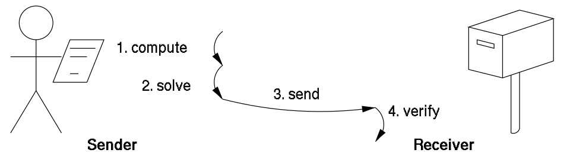
可以看出PoW的核心设计思路是提出一个计算难题，但是这个难题答案的验证过程是非常容易的，这种特性我们称之为计算不对称特性，我们在“浅谈区块链共识机制”中举的24点游戏的例子就具备了计算不对称特性。
上面介绍了一般的PoW是什么，那么区块链上的PoW又是如何设计的呢，我们还是以比特币为例子来讲一讲，这个部分会有代码演示，如果你在收听音频，可以点击文稿查看。
在分析拜占庭将军问题的时候可以看出，如果所有节点在同一时刻发起提案，那么这个系统的记账过程将会非常的复杂混乱，为了降低具有提案权的节点数量，采用工作量证明不失为一个好办法。
所以我们需要构造一个计算不对称的难题，这个难题在比特币中被选定为以SHA256算法计算一个目标哈希，使得这个哈希值符合前N位全是0。
举个例子，假设我们给定一个字符串“geekbang”，我们提出的难题是，计算一个数字，与给定的字符串连接起来，使这个字符串的SHA256计算结果的前4位是0，这个数字我们称作nonce，比如字符串”geekbang1234”，nonce就是1234，我们要找到符合条件的nonce。
我们以Python代码作为示例。
#!/usr/bin/env python
import hashlib
def main():
base_string = "geekbang"
nonce = 10000
count = 0
while True:
target_string = base_string + str(nonce)
pow_hash = hashlib.sha256(target_string).hexdigest()
count = count + 1
if pow_hash.startswith("0000"):
print pow_hash
print "nonce: %s scan times: %s" % (nonce, count)
break
nonce = nonce + 1
if __name__ == '__main__':
main()
代码中，我规定了基础字符串是”geekbang”，nonce从10000开始自增往上搜索，直到找到符合条件的nonce值。
我们计算的结果放在图中，你可以点击查看。
# 前4位是0
0000250248f805c558bc28864a6bb6bf0c244d836a6b1a0c5078987aa219a404
nonce: 68828 scan times: 58829
# 前5位是0
0000067fc247325064f685c32f8a079584b19106c5228b533f10c775638d454c
nonce: 1241205 scan times: 1231206
# 前7位是0
00000003f41b126ec689b1a2da9e7d46d13d0fd1bece47983d53c5d32eb4ac90
nonce: 165744821 scan times: 165734822
可以看出，每次要求哈希结果的前N位多一个0，计算次数就多了很多倍，当要求前7位都是0时，计算次数达到了1.6亿次。这里我同时截图了操作系统当时CPU的负载，可以看到单核CPU负载长时间达到100%。
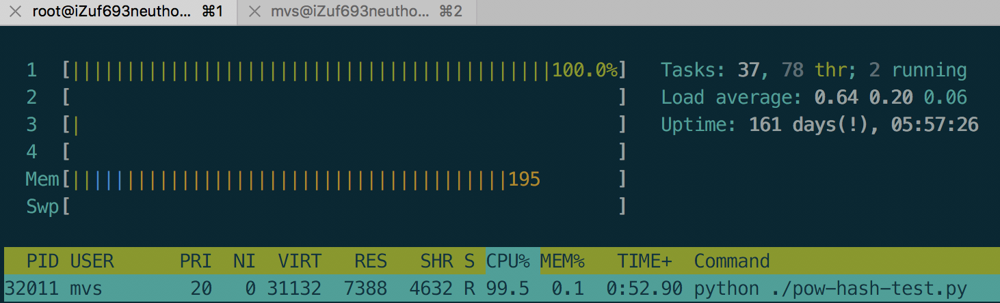
通过上述程序，希望你对区块链PoW机制有个直观的了解。由于结果只能暴力搜索，而且搜索空间非常巨大，作弊几乎不可能，另外符合条件的nonce值也是均匀分布在整个空间中的，所以哈希是一个非常公平且粗暴的算法。
以上代码的基本逻辑就是PoW挖矿过程，搜索到一个目标值就会获得记账权，距离上一次打包到现在未确认的交易，矿工就可以一次性将未确认的交易打包并广播了，并从Coinbase获得奖励。
实际挖矿的基本步骤如下。
如果更深程度去理解的话，PoW机制是将现实世界的物理资源转化成区块链上虚拟资源的过程，这种转化为区块链提供了可信的前提。
好了，现在我们知道了，PoW的过程其实就是计算一个难题解的过程。
在区块链的发展史上，PoW经历了大致两个阶段。分为早期分散挖矿阶段和中心化矿池挖矿阶段。我们目前处于第二个阶段，并且将会长期处于这个阶段。
早期分散挖矿是中本聪的愿景，期望是1CPU=1票，所以如果CPU挖矿，那么将会是非常理想化的情况，而现实的情况是，SHA256只需要非常简单的重复计算逻辑，它不需要复杂的逻辑控制。
那么CPU这种重控制逻辑，轻重复计算的计算单元来搞这么低端的暴力计算非常吃力不讨好，大部分人的第一反应肯定是用GPU呀，非常正确。
所以这个时期，出现了GPU挖矿，它的效率是CPU的十几甚至上百倍，那么1CPU=1票的逻辑就被打破了，挖矿工具的改变让人们意识到挖矿技术也是极大改进的。除了GPU挖矿，我们还有ASIC芯片挖矿，这部分内容我们在讨论挖矿算法分类时会详细讲解。
同期我们也慢慢进入到了中心化挖矿阶段。中心化挖矿很好理解，算力如果越分散，也就意味着竞争越激烈，如果某个节点计算出答案了，那么也意味着其他矿工这段时间的工作量几乎都白费了，投入了物理资源结果零收益，可以说是负收益。
那怎么办呢？思路就是把分散的算力汇聚到一个池子里面，这个池子我们称作矿池，就像四面八方的小溪流最终汇总成一条大江一样。
矿工参与到某个矿池，相当于矿工把算力租给矿池了，与其他矿工联合挖矿，最后看起来矿池这个节点的算力就会很大，获得记账权的概率就越大，如果这个矿池计算出了答案，将获得Coinbase的奖励，矿池就会按既定的分配比例打给每一位参与的矿工。
我们借用一下《精通比特币》一书中的部分图来看一下：
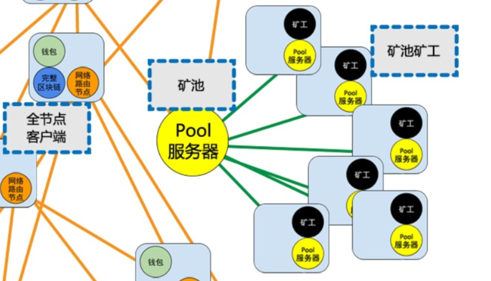
矿池作为一个中心节点，可以被矿工连接，而在比特币全网来看，矿池节点本质上也只是一个全节点，它与其他全节点一起组成了比特币的点对点网络，特殊的地方仅仅在于它可以产生新的区块。
PoW挖矿算法大致分为两个大类，第一类叫做计算困难，第二类叫内存困难。
这两类的区别在于对于提供工作量证明的组件要求不同。我们知道计算机的组成分为计算单元和存储单元，通过以往的编程经验我们还可以知道，一个计算机的瓶颈往往是IO，如果要制造大量的IO操作，可以通过写程序撑大内存，制造大量的数据处理过程，使工作量证明从计算单元转变为存储单元。
那为什么要这么做呢？
其实在PoW挖矿中心化以后，又出现了一次挖矿工具改进，这次超越了GPU，人们先是尝试在FPGA上尝试SHA256的计算过程，结果计算效率成倍于GPU。
FPGA出现的时间比较短暂，最终人们开发出了ASIC专业芯片来计算SHA256，这就是我们常说的专业矿机。
专业矿机的出现加速了PoW挖矿的中心化过程，因为购买专业矿机需要额外的时间和精力，配置运行还有一定的门槛，普通人也只能从专业机构手里购买专业矿机。
所以这些专业矿机直接就是数字货币印钞机，生产专业挖矿芯片的商业公司几乎成了数字货币的货币发行司，这不得不说到市值直逼英伟达的比特大陆公司，它用的就是专业生产数字货币挖矿芯片。
新的数字货币开发者们为了防止情况重演，不断发明新的挖矿算法。有名的有Scrypt、X11、SHA-3，不过这些依然是计算困难型的挖矿算法，依然没有逃脱出现专业矿机的命运。
这里不得不提到以太坊的PoW挖矿算法：ETHASH，ETHASH是Dagger-Hashimoto的修改版本，它是典型的内存困难型挖矿算法。直到如今，也没有芯片厂商设计出挖矿芯片。
正如我们上文所说，因为工作量证明要求的组件从计算资源转变为内存资源，而对内存的高要求使得矿工必须加内存。
在专业矿机上加一块内存的收益与在GPU上加一块内存获得的收益是差不多的，所以厂商并没有研发内存困难型专业矿机的动力，没有专业矿机的出现，这从某种程度上也缓解了算力中心化的问题。
PoW共识的内在优势在于可以稳定币价，因为在PoW币种下，矿工的纯收益来自Coinbase奖励减去设备和运营成本，成本会驱使矿工至少将币价维持在一个稳定水平，所以攻击者很难在短时间内获得大量算力来攻击主链。
PoW共识的外在优势是目前它看起来依然是工业成熟度最高的区块共识算法，所以在用户信任度上、矿工基础上都有很好的受众。
PoW共识最大的缺点是非常消耗计算资源，耗电耗能源，这一点也一直为人们所诟病。因为每次产生新的区块都会让相当一部分工作量证明白白浪费了，也就是将计算资源浪费了。
目前来看这个是无解的，只要是PoW共识，一定会遇到计算资源浪费的问题。不过人们也想了一些改进方案，早期如素数币，近期有比原币，它们都号称深度学习友好型的工作量证明方法。
从理论上来看，PoW会一直有51%算力攻击的问题，即攻击者只需要购买超过全网51%算力设备，即可发起“双花攻击”，甚至“重放攻击”等多种高收益攻击，这个问题目前没有解决方案。
除了51%攻击，PoW共识还有自私挖矿的问题，自私挖矿是一种特殊的攻击类型，不会影响区块链正常运转，但是会形成矿霸，间接造成51%攻击，我们就曾经遇到过这样的自私挖矿攻击。
PoW共识机制是一种简单粗暴的共识算法，它不要求高质量的P2P网络资源，它可以为公链提供稳定有效的记账者筛选机制。同时它也面临了挖矿中心化严重的问题，这也促使人们研究出了新的共识机制，我们留到下一篇讲解。
今天我介绍了PoW工作量证明，并且使用Python语言演示了一遍基于SHA256的挖矿算法工作过程，又介绍了发展历程和算法分类，最后提到了PoW的优势和缺陷。相信你对PoW机制的理解可以更加深入了。
PoW工作量证明的挖矿过程是否可以替换成有意义的算法呢，历史上是否有过类似创新？你可以调查一下，我们一起分享。
上一篇我们讲到了PoW共识机制，这一篇我们就来分享另外一种共识机制，PoS共识机制。
PoS全称是Proof of Stake，中文翻译为权益证明。这一篇我们会将PoS与PoW对比讲解，帮助你加深理解。
PoS最早出现在点点币的创始人Sunny King的白皮书中，它的目的就是为了解决使用PoW挖矿出现大量资源浪费的问题。PoS共识机制一经提出就引起了广泛关注，Sunny King 也基于PoW的基础框架实现了第一代PoS区块链：点点币。
PoW的具体实现有很多版本，但它们大多只是在挖矿算法上有所改进，主体逻辑并没有发生质的变化。PoS包含了多个变种实现，每个变种往往会涉及区块链代币经济模型的改动，可以说是牵一发而动全身。
这些实现有点点币、黑币、未来币、瑞迪币，它们都推动了PoS机制的发展，PoS研究前沿还有以太坊的 Casper ，以及 Cardano 的Ouroboros。
那到底是什么样的机制导致PoS具有这样的特性呢？让我们来看一看。
在讲PoS之前，我先来讲一个叫做币龄的概念，币龄这个概念其实很好理解，它的英文是 CoinAge，字面意思就是币数量乘以天数。
比如你有100个币，在某个地址上9天没有动，那么产生的币龄就是900，如果你把这个地址上这100币转移到任意地址，包括你自己的地址，那么900个币龄就在转移过程中被花费了，你的币数量虽然还是100个，但是币龄变更为0。币龄在数据链上就可以取到，任何人都可以验证。
我们回过头来看看PoS究竟是什么，区块链共识机制的第一步就是随机筛选一个记账者，PoW是通过计算能力来获得记账权，计算能力越强，获得记账权的概率越大。
PoS则将此处的计算能力更换为财产证明，就是节点所拥有的币龄越多，获得的记账的概率就越大。这有点像公司的股权结构，股权占比大的合伙人话语权越重。
以上算是简述了PoS的概念，实际上，PoS的发展经历了三个版本，第一个版本是以点点币为代表的PoS1.0版本，这个版本中使用的是币龄；第二个版本的代表是黑币（blackcoin），对应使用的是币数量，相当于是财产证明，后面黑币又升级到PoS3.0，这个版本又回到了币龄。
PoW早在比特币出现之前就已经应用了，而PoS是才是真正意义上为了区块链而创造出来的概念。
好了，现在我们开始讲解PoS的具体实现原理吧。这一部分公式较多，如果你在收听音频，可以点击文稿查看。
通过上一篇我们知道PoW挖矿的基本逻辑和步骤，我们先寻求一个nonce小于目标值，这一步用公式可表示为：
Hash (block_header) < Target
从公式中我们可以看到，PoW下所有矿工的目标值是一样的，只要计算结果哈希小于目标值即可，简化来看就是前导0的个数。
而在PoS系统中，这个公式变更为：
Hash (block_header) < Target * CoinAge
我们可以看出多引入了一个变量叫做CoinAge，也就是币龄，这里就有意思了。
这个变量为会造成每个矿工看到的目标值不一样，如果你的币龄越大，也就意味着你的获得答案越容易。这里的Target与PoW一致，与全网难度成反比，用来控制出块速度的。
例如当前全网的目标是4369，A矿工的输入的币龄是15，那么A矿工的目标值为65535，换算成十六进制就是0xFFFF，完整的哈希长度假设是8个字节，也就是0x0000FFFF。
而B矿工比较有钱，他输入的币龄是240，那么B矿工的目标值就是0x000FFFFF。你如果仔细观察肯定会发现，相比A矿工的目标值，B直接少了一个零。即如下：
所以B矿工获得记账权的概率肯定要比A高。
具体代码分析这里就不讲解了，这里需要币龄作为输入，如果我们写示例代码也只是一个简单的参数，PoS需要放到区块链的语境中才能运作。
通过上述的介绍我们知道：PoS似乎完美地解决了PoW挖矿资源浪费的问题，甚至还顺带解决了51%攻击的问题，这里可以顺便讲一下51%攻击是什么，它是指PoW矿工如果积累了超过51%的算力，则可以一定程度篡改账本。
这里顺便科普一下，什么是51%攻击呢，我们发现，矿工挖矿的成本不再是物理设备和电费，而是虚拟代币，它的边际成本几乎为零，本质上PoS让挖矿者和使用者合二为一了。
这也意味着如果挖矿者发起51%攻击，就需要拥有全网51%的币或币龄，这几乎不可能办到，即使你成功地实施了51%攻击，那么也意味着作为全网最大的持币大户的你，损失也会最大。
PoS看起来相当完美，其实并不然，PoS有很多缺陷。
PoS遇到的第一个问题就是币发行的问题。一开始的时候，只有创始区块上有币，意味着只有这一个节点可以挖矿，所以让币分散出去才能让整个网络壮大，那么如何分散出去又是另外一个难题了。
所以早期PoS币种基本都采用了分阶段挖矿，有的叫混合挖矿，其实，我并不同意混合挖矿这个说法，混合就意味着同时。很多币种其实是分了阶段的，即第一阶段是PoW挖矿，到第二阶段才是PoS挖矿。
随着ERC20类型的标准合约代币的出现，这个问题被解决了，不再需要第一阶段改成PoW，也可以将代币分散出去。
第二个问题是由于币龄是与时间挂钩的，这也意味着用户可以无限囤积一定的币，等过了很久再一次性挖矿发起攻击；所以解决方案是：PoS机制需要引入一个时间上限来控制时间因素的自然增长。
第三个问题是虽然引入了时间上下限，用户还是倾向于囤积代币，这会造成币流通的不充分；基于此，所以瑞迪币引入了币龄按时间衰减，构造了权益速度证明，鼓励用户流动代币，而不是倾向于囤积代币。
第四个问题是离线攻击，即使引入了时间上下限，时间仍然是自然流动的，也就是可以不需要求挖矿节点长时间在线。挖矿是可以离线的，这简直是灾难，所以任意一个PoS机制的实践形式都必须避免这个问题，因为网络节点数量的多少直接关系到区块链网络的健壮性。
当然这些问题都不是致命问题，还记得我们一开始提到了PoS经历了三个版本，而第二个版本PoS 2.0使用的不是币龄，而直接是币的数量。
这会造成完全不同的结果，上述第二、三、四问题都不存在了，似乎看起来直接使用币的数量会更好一些，但却出现了整个PoS机制的致命问题。
这个问题叫做Nothing at Stake，翻译过来叫做无成本利益问题。大体的意思在PoS系统中做任何事几乎没有成本，比如在PoS系统上挖矿几乎没有成本，这也就意味着分叉非常方便。
方便到什么程度呢，每个诚实矿工在产生孤块的时候都可以继续挖下去，反正也没什么成本，反正分叉链和主链都可以同时挖，也就是任何持币较少的用户都可以尝试分叉，并且把分叉链广播出去。
这个时候如果其他诚实矿工看到了，第一反应也是没有成本，那么咱们也来挖吧，说不定什么时候就值钱了，意思就是说任何逐利的矿工并不会使这个系统变得更强壮稳定，而是更加的混乱。
无成本利益问题无论以币龄还是币数量作为PoS的参数，都无法避免。
而PoW则没有这样的问题，我们回到PoW系统中来看，因为任何的分叉都会造成挖矿成本直接变成负收益，所以这会抵抗分叉的产生，矿工倾向于跟随“最长”的链。
由于以太坊部分采用了PoS共识，它的名字叫做Casper，它必须解决上述无成本利益问题攻击。所以Casper协议要求PoS矿工需通过抵押保证金的方法对共识结果进行下注，具体实践结果我们还需要拭目以待。
最后我们来总结一下PoS共识机制，PoS的区块链系统无需外部物理输入，所以它相比PoW更为环保不费电，并且矿工就是使用者，这会在一定程度上抵御了51%攻击，所以基于PoS机制的数字货币属于理想状态的数字货币。
PoS的缺点是缺乏工业级的区块链应用，从逻辑上来看有点循环自证明的味道，就是用自己的币来维护系统的安全，而币的安全性是由系统保证的，所以现阶段PoS共识机制往往不是独立运行的，而是混合了PoW一起运行，这就可以弥补PoS的缺陷。
PoS共识机制目前也出现了矿池，也可能会出现中心化挖矿的风险。
虽然PoS共识机制未来变数依然很多，但它的可塑性比PoW好，技术上的探索空间大，目前PoS币种相比较PoW币种风险也较高。
那么有哪些区块链项目使用了PoS共识机制呢？你可以给我留言，我们一起讨论，感谢你的收听，我们下期再见。
上一篇文章里，我们讲解了PoS共识机制，这一篇我们来分享PoS的一个扩展机制，这个机制在业界也非常的流行，它叫做DPoS共识机制。DPoS全称是Delegated Proof of Stake，中文翻译过来是代理权益证明。
我们聊DPoS时，为什么要从BM聊起呢，
其实，这和聊比特币绕不开中本聪一样，DPoS是BM一手创造的。DPoS不是独立提出的共识算法，而是直接被BM应用到比特股项目中，在稳定运行了3年多后，又接着被BM构造成可复用的区块链工具箱：石墨烯。
虽然应用得很早，但DPoS算法直到2017年才被BM单独拎出来作了一篇“DPoS技术白皮书”，这期间伴随着比特股、Steemit、EOS三个项目的依次发布。
那么到底BM是谁，市场上对这个人的评价为什么富有争议呢？或许我们从了解BM开始，才能体会到DPoS的精髓。
我们在前面的文章中曾简单提过BM，BM的本名是Daniel Larimer，由于他的GitHub昵称是ByteMaster，所以才被称作BM。BM是比特股、Steemit、EOS项目的创始人，截止发稿时，这三个产品的市值均在区块链项目的Top33以内。
与年少成名V神的辍学经历不同，BM 2003年毕业于弗吉尼亚理工学院，获得计算机学士学位，算是正经的科班出身。
BM曾直言不讳地说到：“我的人生目标就是找到自由市场的方案来保护生命、自由和财产”。他认为要达成这个目标，就必须要从货币开始。
我们在数字货币一节提到过，无论是贵金属还是信用货币，都是历史的必然，所以在选择使用什么货币上，BM认为不一定是美元，他希望的是：构造一种自由安全的数字货币。
2009年，他怀揣梦想开始了数字货币的事业，他先发现了比特币，于是不遗余力地推广着这个项目。
然而在2010年，BM指出中本聪10分钟一次的交易确认时间太长了，这样的话，性能会是一个瓶颈，然而这样的想法却遭到了中本聪的暴击：看不懂就算了，我没时间搭理你。
于是，BM觉得比特币不是希望，便着手开发第一个项目——比特股，同时创造出DPoS，把自己的高性能共识算法想法形成了实践。
在这里，我们可以看出DPoS与其他共识机制的第一个区别，就是交易确认时间短。
2014年，当V神还在到处奔走，开始发起以太坊项目的众筹时，当很多项目还是基于比特币的微创新时，比特股就已经横空出世了。
所以比特股一跃成为了当时的明星项目，它的口号是“Beyond Bitcoin”，在这里我们可以感受到极强的攻击性和目的性，也正因为如此，日益强大的比特币社区被树在了它的对立面。
比特股一共有2个版本，比特股在1.0版本之前，某些版本甚至都没有提供向下兼容。虽然后来正式发布了1.0版本，似乎并没有改善多少。糟糕的使用体验，庞大的系统资源开销，还是让尝鲜的用户逐渐流失了。
这时候BM利用了自己手里超过1/3的记账节点，在没有达成社区共识的情况下，强行增发了比特股总量。这一招几乎就是比特股项目的灭顶之灾，社区人就此纷纷退出。
虽然社区萎靡，BM还是继续了开发工作，将比特股升级到了2.0，它的易用性和稳定性勉强可以满足正常使用。随着比特股2.0的发布，BM也同时发布了石墨烯工具箱。
尽管在技术上提供了改进，但比特股社区最终选择让BM离开比特股项目，比特股回到了另一位币圈大佬——巨蟹的手里。随后比特股的发展陷入了长期的低迷，长期在2分，最多到2角钱左右，直到去年的牛市，比特股涨到过2元人民币。
虽然最终离开了比特股，但是BM依然会参与BTS紧急Bug修复工作。与此同时，BM又开发了一款旨在颠覆传统互联网媒体行业的项目——Steemit，这也是开辟了基于区块链Token内容社区的先例。Steemit也是基于石墨烯技术的，它非常流行。
2017年，随着Steemit的成熟，BM宣布退出了Steemit，开展了下一个项目EOS。EOS的目的是要做出区块链行业的操作系统，为开发者提供底层功能，包括并行运算、数据库、账户系统等等。
EOS一经发布，就广受关注，短短五天内，EOS便筹集到了数亿美金，它的代币销售规模在目前为止是最大的。
现阶段的EOS超级节点竞选也体现出了BM强大的影响力。 EOS项目影响力也越来越大，BM因为与V神在区块链上的理念不合，也经常互怼，他们争论的重点是二人对于去中心化的前提假设不同，这也造就了两个不同的设计逻辑，所以，两人的争论过程可以说是非常地吸引眼球了。
我们从BM的个人经历、项目经验、影响力都可以看出BM是一个很懂金融的天才式程序员，同时也是一个有点刚愎自用导致与社区矛盾不断的意见领袖。
讲完了BM的故事，我们再来讲讲DPoS。我们在前文粗略地讲过DPoS算法，我们先来回顾一下。
简单来理解，DPoS共识算法就是将PoS共识算法中的记账者转换为指定节点数组成的小圈子，而不是所有人都可以参与记账，这个圈子可能是21个节点，也有可能是101个节点，这一点取决于设计，只有这个圈子中的节点才能获得记账权。这将极大地提高系统的吞吐量，因为更少的节点也就意味着网络和节点的可控。
从名称上，我们也可以判断出DPoS与PoS共识是直接关联的。DPoS算法是BM根据当时PoW、PoS的不足而改进的共识算法，它的目的就是为了提高性能，也就是交易确认时间短。
在PoS共识中，人们使用财产证明来“挖矿”，也就是说，这是任何人都可以参与的，只要你持有币，你就可以参与挖矿。
但是我们可以看出，PoS并没有解决性能问题，在这里我们直接认为提高性能就是提高TPS，我们可以构造一个等式，：
TPS = transactions / block_time
TPS表示区块链每秒能确认的交易数， transactions 是由区块大小block_size和平均每笔交易大小决定的，而区块大小受全网网络状态network_bandwidth 限制，也是由记账节点之间物理带宽witness_performance决定的。
记账节点的个数witness_count直接决定了物理带宽的上限，因为记账节点数量越多，则对物理带宽要求越高，对网络的稳定性要求也越高。
要注意的一点是在DPoS中，记账节点不叫做矿工，而是改称为见证人，Witness。
所以这个公式变成了下面的样子。
TPS = (block_size * network_bandwidth * witness_performance) /- (block_time * witness_count)
我们可以看到，要提高TPS，可以提升分子项，降低分母项，也就是增大区块大小block_size、提升记账节点网络带宽network_bandwidth、提升记账节点处理性能witness_performance，减小区块时间block_time、减小记账节点数量witness_count。
分子项我们可以看到，它基本受限于物理资源的上限，目前工业水平制造的物理资源的使用上限基本就是整个项的上限了，所以可操作性不大。
而分母项是由共识算法决定的，所以我们从区块时间，以及记账节点数入手，DPoS算法便正是从这两项着手的。
首先改动的便是限制记账节点的数量，也就是见证人的数量。
我们在PoW和PoS中可以看到，成为记账节点是无需门槛的，你可以随时参与挖矿，随时退出。
那这会带来什么问题呢，首先无法确定记账节点的数量，其次无法确定记账节点之间的网络环境，记账节点数越多网络环境越复杂，这些不确定性会增大网络分区的概率，从而导致区块链分叉。
如果我们事先规定好记账节点的数量，接着让全网所有节点可以投票决定哪些节点可以成为记账节点，这样就限制并减小了分母项witness_count，这个过程我们也称作投票选举。
因为记账节点数量不多，那么我们可以在共识算法中可以规定出块时间为一个固定值，这个值可以很小，通过轮流出块的方式来进行记账。
以上思路基本就是DPoS的基本设计思路，BM还为DPoS算法确立两个原则：
这两个原则确立了DPoS共识的基本特性，第一条放大了PoS共识使用者就是记账者的优点，第二点则规定了分叉时系统应该表现的行为。
在DPoS共识算法中，区块链的正常运转依赖于见证人(Delegates)，见证人是由全网节点投票产生的，见证人也是记账节点的实际控制人，相当于咱们选课代表，课代表帮我们整理作业。
见证人在完成打包交易的同时可以领取区块奖励和交易的手续费，并且可以执行社区投票的提案，所以DPoS共识算法不仅仅是算法，而是一个包含了协作治理关系的共识机制。
我们可以引用“DPoS算法白皮书”中的内容，来看看BM设计DPoS算法是怎样的思路。
BM认为所有区块链实际是建立交易之上的确定性状态机。共识是在确定交易顺序，过滤无效交易的一个达成一致意见的流程。
DPoS为了尽快确定交易顺序，过滤无效交易，所以规定了在正常情况下，所有记账节点轮流每3秒产生一个区块，轮到了某个记账节点出块时，必须在3秒内提交区块，否则就会错块。
假设一直没有记账节点错过自己顺序，那么他们生产的链条势必是最长的链条，如果记账节点在非指定时间生产区块被认为是无效的，每经过一轮，所有节点轮流出块的顺序就会发生重新洗牌。
下图就是一个理想的轮流记账状态。
- （图来自白皮书）
DPoS算法白皮书介绍了7种异常的情况会打破上面的正常情况。
例如少数记账节点发起恶意分叉或者发生故障，如下图。- 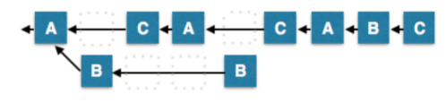- （图来自白皮书）
在这种情形下，B节点只能在9秒内生产1个块，而大多数分支，由于数量多一倍，将预期能在9秒内生产2个块，诚实的2/3的大多数可以比小的那一部分创建一个更长的链条，由于原则二，DPoS可以抵御这种攻击。
在DPoS白皮书中介绍了少数记账节点恶意或故障造成的分叉、网络分区情况下重复出块、少数记账节点重复出块、记账节点数量不足、多数记账节点的联合腐败等各种情况。
由于篇幅有限，你如果感兴趣的话可以自行阅读。遗憾的是白皮书中的内容没有经过严格证明，以定性分析为主，所以我们无法确定DPoS算法是否有设计缺陷。
在实际应用中，比特股中见证人是101人，EOS里是21人。比特股中见证人们赚取手续费，EOS里见证人们分享EOS的通胀收益。他们都是通过公开选举选出来的，选票就是大家手里的比特股或EOS。
我们之前文章中提过的FLP和CAP定理，如果为了提升性能，即一致性的效率，势必会牺牲其他两项。这也会引出有关DPoS的一个争论：中心化问题。
我们以比特股社区为例，每个人都可以尝试成为101个见证人节点中的一个，他们可以在社区里拉票，为社区做事，或者干脆用钱买很多bts。平时大家象征性地开个会，因为是轮流记账，各个节点之间竞争不大。
但是不要忘记，区块链的发展非常依靠社区，这种方式势必会带来社区的中心化。虽然比特股中101个见证人负责记账，但总得有人指定发展方针，于是又设计出了11人理事会，这同样是通过选票选出来的。
11人理事会有很高的权力，他们相当于11个超级节点，通过举手表决，甚至可以决定修改代码，而这11人理事会是比特股系统里的中心，也是规则的制定者。
这是DPoS算法的优势，也是DPoS算法的劣势。在PoW中，矿工、开发者、用户三权分立。
而DPoS似乎将这三权合并到了见证人和理事会手中。在EOS中，BM还制定了区块链宪法，要求所有记账节点必须遵守，所以也有人抨击这是具备了BM特色的去中心化。
从某种角度来看，DPoS是社区治理加上共识算法，不再是单纯的技术共识，这是与PoW、PoS算法最大的不同。
DPoS的基本假设是相信节点是好的，所以尽可能快速选择记账节点，而把问题发生后的修复过程推迟到投票中，可以说DPoS并不考虑拜占庭容错问题，把拜占庭容错推给了社区治理，而在社区治理上可归纳为一切皆投票。
而现实生活中，很多情况下，投票并不能解决问题，比如投票人都是有惰性的，集齐所有人投票成本是很高的，如果记账节点没有上限，所有节点的投票都投给自己，DPoS系统就会退化成PoS系统。
我们来总结一下DPoS共识机制。
DPoS共识机制本身将“矿池”纳入系统内部，并把它们统称为见证节点，虽然不会出现中心化挖矿的风险，但是DPoS由于节点数不多，并且见证节点权力较大，可以认为DPoS本身就是带中心化思路的共识机制。
最后留一个思考题给你，有关DPoS算法，你能想到有哪些攻击方式吗？欢迎给我留言，我们一起讨论。
感谢你的收听，我们下期再见。
链接：
区块链最核心的两个技术点是共识机制和密码学，由于共识机制是公链的基础，所以这部分内容我已经在前面的内容中优先讲解了。
接下来，我来讲一讲区块链的密码学基础，有关区块链密码学你只需要了解它的基本原理和优劣即可。
另外，区块链的密码学中文资料也十分丰富，如果你感兴趣的话，可以在学有余力的基础上酌情深入。
区块链中主要应用了两类密码学算法，第一类是哈希算法，第二类是非对称加密算法。
我们先来看看哈希算法。
哈希算法是一类数学函数算法，又称散列算法，它是一种数据映射关系。
为了方便举例，我们假设 h = HASH( X | z )，你输入一个任意长的数据z，经过哈希运算后，返回给你固定长度的数据h，z叫做原像，h是哈希结果，又称作“数据指纹”，z可选的数据集合构成了X。
哈希算法具有下面的4种特性。
目前流行的 Hash 算法包括了MD5、SHA-1 和 SHA-2，其中MD5被证明不具有强抗碰撞性。SHA （Secure Hash Algorithm）是一个 Hash 函数族，分为SHA-1、SHA-2、SHA-3，代表了三代哈希标准，目前使用比较多的是SHA-2系列。
第一代的SHA-1 基于 MD4设计，并且模仿了该算法，SHA-1 已被证明了不具备“强抗碰撞性”，所以安全性不够高。
为了提高安全性，第二代 SHA-2一共包含了 SHA-224、SHA-256、SHA-384，和 SHA-512 算法（统称为 SHA-2），它们跟 SHA-1 算法原理类似。SHA-3 相关算法也已被提出，它的出现并不是要取代SHA-2，因为SHA-2目前并没有出现明显的弱点。
由于对MD5、和SHA-1出现成功的破解，我们需要一个不同与之前算法，可替换的加密散列算法，也就是现在的 SHA-3。
哈希算法被广泛地使用在构造和验证区块、交易的完整性上，由于哈希算法的四个特性，使得我们可以把任意的交易数据做成数据摘要，然后再一个一个链接起来，形成数据块的链式结构。
这样我们可以通过验证每个区块间接地验证交易，然后每个交易原数据也可以做成哈希数据摘要，用于验证交易数据的完整性。
我们借用比特币开发者文档中的图，这个图表达了区块链的基本数据结构，
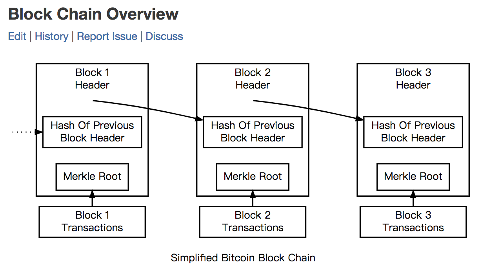
在图中可以看出，当前区块里面包含上一个区块的哈希，形成一个哈希指针链表，由于哈希的发散性，所以这个链表也有极大的发散性。
我们可以用代码模拟一遍，我们先列表构造5个简化的区块，其中第一个块是创世区块，我们规定它指向的前向区块的哈希全为零；
后面第2个块，第3个块中content分别记录了两笔交易，这里为了方便理解，我使用了文字表述交易的内容，实际上，区块链上的交易是二进制格式化的数据，而不是文本数据。代码中并没有填充哈希，是在运行时填充的。
#!/usr/bin/env python
import hashlib
def main():
# example:
block_headers = [
{"prev_block_hash":"0000000000000000000000000000000000000000000000000000000000000000", "content":"genesis block:A pay C 12.3 BTC"},
{"prev_block_hash":"to_be_hashed", "content":"2nd block:C pay B 2.0 BTC"},
{"prev_block_hash":"to_be_hashed", "content":"3th block:transactions..."},
{"prev_block_hash":"to_be_hashed", "content":"4th block:transactions...j"},
{"prev_block_hash":"to_be_hashed", "content":"5th block:transactions..."}
]
# hash prev block header
index = 0
for header in block_headers:
# genesis block, ignore
if index == 0:
print header
index = index + 1
continue
# generate hash chain
prev_block_header = block_headers[index - 1]
target_buffer = prev_block_header["content"] + prev_block_header["prev_block_hash"]
header["prev_block_hash"] = hashlib.sha256(target_buffer).hexdigest()
print header
index = index + 1
if __name__ == '__main__':
main()
我们可以直接得到结果，这是一个典型的哈希指针链表，每一个区块的prev_block_hash域指向上一个区块哈希。
{'content': 'genesis block:A pay C 12.3 BTC', 'prev_block_hash': '0000000000000000000000000000000000000000000000000000000000000000'}
{'content': '2nd block:C pay B 2.1 BTC', 'prev_block_hash': '01279c1208a8eca3d4a47a123119b04f1dcc592c818aace2715b2c418b38822a'}
{'content': '3th block:transactions...', 'prev_block_hash': '6d96c220b22371dc1d2b3549da42bd3ea2191f07f18112bf195bc6675bbc6b97'}
{'content': '4th block:transactions...j', 'prev_block_hash': '9e41c61fa151320145a56a38e85c01b8c025729614f4c10596d99068ea0b3395'}
{'content': '5th block:transactions...', 'prev_block_hash': '34f002b445a38fa7402e590629e76943060ffc4de96b1b9bc6b0f564e5a7bc72'}
如果我们将第二块中的content从”C pay B 2.1 BTC” 修改为 “C pay B 2.0 BTC”，那么我们将得到如下结果，我们可以发现从第三个块往后所有的块指向的前一个区块的哈希都不再与上面的一致。
{'content': 'genesis block:A pay C 12.3 BTC', 'prev_block_hash': '0000000000000000000000000000000000000000000000000000000000000000'}
{'content': '2nd block:C pay B 2.0 BTC', 'prev_block_hash': '01279c1208a8eca3d4a47a123119b04f1dcc592c818aace2715b2c418b38822a'}
{'content': '3th block:transactions...', 'prev_block_hash': 'f91faad6b874fb97a20ad9cbc57ef1302a431a2cce4ac5efe28a64b353526849'}
{'content': '4th block:transactions...j', 'prev_block_hash': '99d17dfe9a9fab68cffd6a82bc3786fe3c2d3165f1fba30b3f2ffc418c97fc8b'}
{'content': '5th block:transactions...', 'prev_block_hash': 'd2f42291ef0811e5babc1d38ca8019ee457f84b323a3d549a04b6a4535357d7f'}
以上我们构造了一个极简的区块链的基本结构，区块头描述了一个区块的基本信息，在实际应用中，里面通常包含了下面的几个内容。
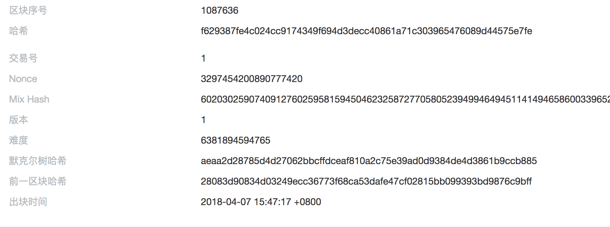
图中有当前区块高度、本区块的哈希、前一区块哈希、nonce值等等。
所以前一区块哈希是一个区块头必备的数据域，这种链式结构具备发散传导性，越往历史以前的篡改，越容易导致大面积的影响，这也叫做历史逆向修改困难。
在PoW共识机制的情况下，这种逆向修改的难度会随着当前全网算力线性增长。
哈希算法的一个重要应用是默克尔树（Merkle tree），默克尔树是一种数据结构，通常是一个二叉树，也有可能是多叉树，它以特定的方式逐层向上计算，直到顶部，最顶层叫做默克尔根，默克尔树最为常见和最简单的是二叉默克尔树。
默克尔树的基本结构如下图。
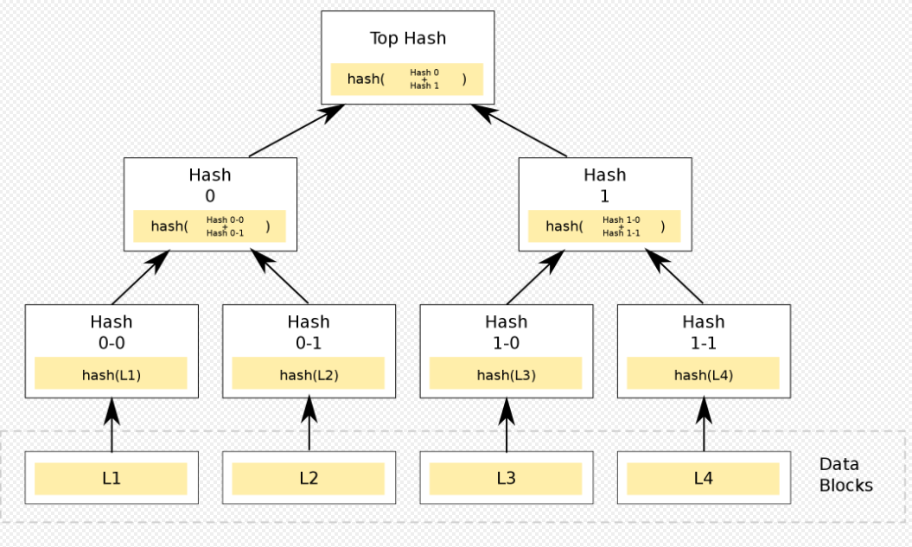 （图片来自维基百科）
比特币和以太坊都使用了默克尔树这种数据结构，只不过里面存放的数据都是哈希。我们在比特币的核心版本源码中可以发现注释中有介绍。
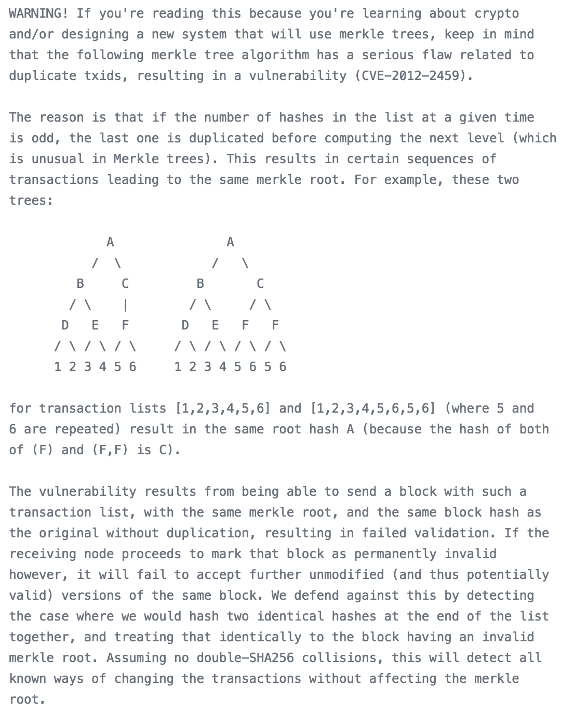
（图片来自比特币Core源码）
以太坊中针对比特币的设计做了改进，叫做默克尔帕特里夏树(Merkle Patricia tree），相对于比特币在块头中只有一棵树，以太坊有三棵树。
区块链的挖矿算法也应用了哈希算法，挖矿算法利用的是其难题友好性，我们在PoW共识机制中讲解过，这里不再赘述。
非对称加密算法是相对于对称算法而言的，这两者组成了密码学的核心内容。
这两者的使用区别体现在密钥是否可以公开，对称密钥要求加解密过程均使用相同的密钥，而非对称加密可以提供一对钥匙，私钥自己保管，公钥可以公开。
常见的对称加密算法有 DES、3DES、AES、IDEA， 常见的非对称加密算法有RSA、ECC等。
在比特币等众多数字货币的项目中，在账户层面主要使用的是非对称加密算法。
在对称加密算法里，由于双方需要提前共享密钥，在使用过程中有诸多不便，非对称算法的出现解决了这一难题。
在非对称算法中，私钥一般是通过一个随机数产生的，这个随机数我们也叫做种子，从这个角度来说，知道了这个随机数也就等于知道了私钥，不过私钥的产生范围非常大，在比特币中是2的256次方，差不多在10的70方数量级上。
如果你产生随机数的算法足够均匀分布，私钥碰撞的可能性比中了1亿大奖同时被雷劈中的概率还要小数亿倍。所以区块链对产生随机数的算法要求比较高，它要求真实的均匀随机分布，而不是计算机伪随机数。
如果我们有了私钥，接下来就如图所示：
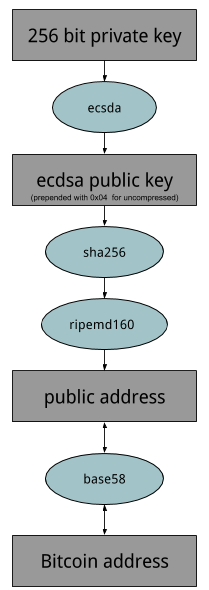
我们从私钥到公钥，是由非对称加密算法保证的，这种算法在比特币中选择的是ECDSA算法，ECDSA算法中选择的椭圆曲线名为secp256k1。
而从公钥到地址，是由哈希算法保证的，在这一步使用了SHA256和RIPEMD160。椭圆曲线加密算法ECC利用了“寻找离散对数”的难解性提供了单向不可逆性，具体原理你可以找资料了解一下。
在区块链上，一个比特币交易的产生由两部分组成，第一部分是签名加锁，对应到的是交易的输出、第二部分是解锁花费，对应到的是交易的输入，当我们构造一笔交易的时候必然会用到私钥，这是所有数字货币资产控制权由私钥保证的根本原因。具体逻辑我们留到下篇讲解UTXO的时候讨论。
最后来谈谈量子威胁的内容。我在讨论比特币等众多数字货币项目的时候，很多人会问我如何看待量子计算的威胁问题，大家认为量子计算的强大计算力威胁到了哈希的抗碰撞性。其实这不是一个设计缺陷，而是一个发展问题，是可以在区块链的发展过程中解决的。
我对于量子计算的威胁论有以下的看法。
今天我向你介绍了哈希算法，讲解了区块链哪些地方使用了哈希算法，并介绍了非对称加密算法，最后还谈了一下我对量子计算威胁论的看法。
密码学是所有区块链的基础，可以说如果没有密码学的支撑，区块链将会退化成普通的分布式日志系统。
那么亲爱的读者，比特币地址有哪些类型呢？以太坊的地址又是如何生成的呢？你可以给我留言，我们一起讨论。感谢你的收听，我们下次再见。
参考阅读：
我们在第2讲“区块链到底是怎么运行”一文中，提到了村长给张三转账的例子，那里村长的例子就是UTXO模型的一个简化版本。
评论区里有不少留言在问：“为什么不直接记余额呢？”看来很多人都对这个问题很感兴趣，今天我们就来聊一聊这个话题。
区块链网络中有两种记账模式，除了UTXO模型还有 Account Based 结构，也就是普通账户模型，也叫账户余额模型，前者在比特币系的数字货币中被广泛使用，后者更多是用在智能合约型的区块链上。
我们先从传统的账户模型出发来聊聊是如何记账的，假设我们现在有一个支付系统，在这个支付系统中有村长和张三两个账户，村长账户里有100万，现在要转账给张三10万，这其中涉及的操作是这样的：
我们可以发现，无论是村长还是张三，都具有一个余额作为状态，即当前余额是记录在某个地方的，只需要读出来即可，这种设计我们叫做账户余额模型。
如果以上三个步骤是在一个中心化系统中，甚至在同一个数据库中，那将非常简单，会直接退化成一个事务，我们见到的银行账户、信用卡系统、证券交易系统、各种电商类应用，理财类应用基本都是一个中心化系统中的，最多也就是跨表跨数据库。
想必这类场景下的设计，各位工程师对此应该是了如指掌的。
如果以上的步骤中，村长和张三的账户分属两个不同的系统，例如从A银行到B银行，就需要经过人民银行支付系统，即可信任的中心化第三方来做中介。
你可能发现了，在跨行转账的这种情况下，是没有办法做事务的，所以1和3是不同步的，如果3操作失败，还需要从2倒退到1的状态，这个情况叫做冲正交易。
普通账户模型具有自定义数据类型的优点，但是却需要自己设计事务机制，就是上述所说的冲正交易。而接下来所讲的UTXO模型则恰恰相反。
UTXO全称是：“Unspent Transaction Output”，这指的是：未花费的交易输出。这里面三个单词分别表示 “未花费的”“交易”“输出”，接下来我来详细讲解一下UTXO的含义。
UTXO的核心设计思路是无状态，它记录的是交易事件，而不记录最终状态，也就是说只记录变更事件，用户需要根据历史记录自行计算余额。
有点像MySQL中的Binlog，主从模式的情况下，按照Binlog来更新数据，Redis的AOF模式备份模式也是如此，UTXO也是类似的思路。
下面我们按照按照普通账户中的例子来重新讲解一遍。
如果要记录交易本身，那么我们可以构造一笔交易，这笔交易中村长转账10万给张三的同时，90万转给自己。
如下所示：
村长 100万 –> 张三 10万- - –> 村长 90万
这里其实有三条子记录，左边一条，右边两条，左边叫做输入，右边叫做输出。
输入和输出组成了交易，输入和输入需要满足一些约束条件：
对于村长来说，首先构造交易的输入输出，满足上述条件，然后广播到全网，接收方自行判断交易是否属于自己。这里满足约束条件构成的交易模型，也就是村长记录的三条转账事件就是UTXO模型。
我们可以归纳出UTXO与普通账户模型的一些区别。
存储空间，UTXO占用空间比账户模型高，因为账户模型只记录最终状态。
易用性，UTXO比较难处理，账户模型简单容易理解。例如UTXO在使用上，还需要配合高效的UTXO组装算法，这个算法要求尽可能降低输入输出的个数，还要让“零钱“归整，算法的复杂度相比账户余额无疑要高。
安全性，UTXO比账户模型要高，UTXO本身具备ACID的记账机制，而账户模型需要自行处理，例如重放攻击。
普通账户模型具有较高的自由度，可以让智能合约有更好的发挥空间，并且它避免了UTXO的复杂组装逻辑，精度控制上也更为得心应手。
UTXO似乎天然是为数字货币设计的，具有较高频次跨账户转移场景都使用UTXO会比较好，考虑到智能合约的普适性，UTXO与智能合约并不能很好地兼容，但是这也对开发者的自身水平提出了更高的要求。
我们借用比特币开发者文档中UTXO模型的图示，来看看UTXO实际的构造形式。
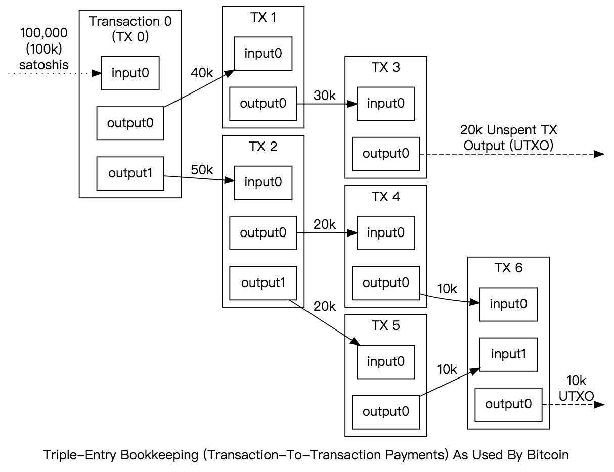
上图中，所有的交易都可以找到前向交易，例如TX5的前向交易是TX2，TX2中的Output1作为TX5中的Input0。
意思就是TX2中的付款人使用了Output1中指向的比特币转移给 TX5 中的收款人，接着TX5中的人又把收到的比特币转移给了TX6中的收款人，成为了TX6中 Output0。
我们也可以发现，TX6中的收款人还没有产生TX7交易，也就是说Output0还没有被花费，这时候我们终于得到了UTXO的真正语义：Unspent Transaction Output，未花费的交易输出。
我们这时候可以发现UTXO也同样能表示余额，不过是重演计算的方式，它用不同的方式表达了余额，我们把一个地址上所有的UTXO全部找出来，就是这个地址总的余额了。
我们还可以发现，无论是TX5还是TX2，都已经成为历史交易，它们都忠实客观地记录了两笔交易，这两笔交易代表的是事件，而不是余额状态转移，这是我们看到的最直观的区别。
我们再来看看一个真实的交易例子。
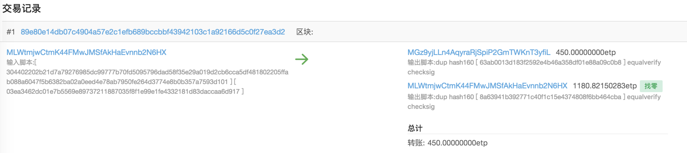
这是区块链上一笔真实交易的例子，它记录了一笔450ETP的转账记录。
左边是输入，右边是两笔输出，其中第二个输出是给自己的账户，这和我们村长转账给张三的例子是一样的。
下图是交易解码为JSON格式的样子，可以看到Previous_output是放到Inputs数组里的，意思就是前向输出作为本次的输入。
{
"hash" : "89e80e14db07c4904a57e2c1efb689bccbbf43942103c1a92166d5c0f27ea3d2",
"height" : 1093399,
"inputs" :
[
{
"address" : "MLWtmjwCtmK44FMwJMSfAkHaEvnnb2N6HX",
"previous_output" :
{
"hash" : "770a72f35d3e3a78bd468949bad649f03b241cf7e2a84cc2d6fdabacdcc47f06",
"index" : 0
},
"script" : "[ 304402202b21d7a79276985dc99777b70fd5095796dad58f35e29a019d2cb6cca5df481802205ffab088a6047f5b6382ba02a0eed4e78ab7950fe264d3774e8b0b357a7593d101 ] [ 03ea3462dc01e7b5569e89737211887035f8f1e99e1fe4332181d83daccaa6d917 ]",
"sequence" : 4294967295
}
],
"lock_time" : "0",
"outputs" :
[
{
"address" : "MGz9yjLLn4AqyraRjSpiP2GmTWKnT3yfiL",
"attachment" :
{
"type" : "etp"
},
"index" : 0,
"locked_height_range" : 0,
"script" : "dup hash160 [ 63ab0013d183f2592e4b46a358df01e88a09c0b8 ] equalverify checksig",
"value" : 45000000000
},
{
"address" : "MLWtmjwCtmK44FMwJMSfAkHaEvnnb2N6HX",
"attachment" :
{
"type" : "etp"
},
"index" : 1,
"locked_height_range" : 0,
"script" : "dup hash160 [ 8a63941b392771c40f1c15e4374808f6bb464cba ] equalverify checksig",
"value" : 118082150283
}
],
"version" : "2"
}
我们再看看比特币上的例子：
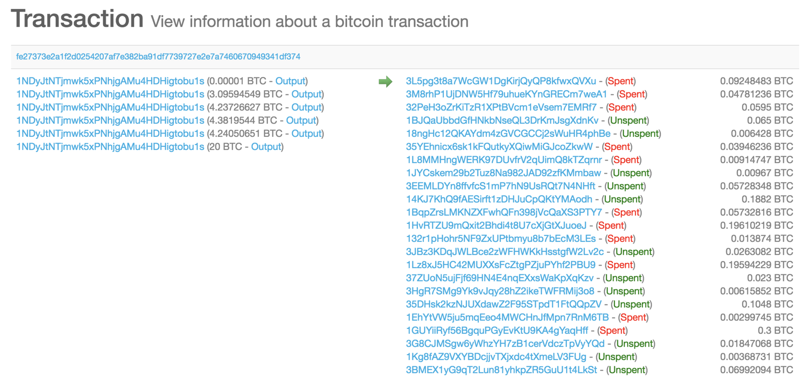
这一笔比特币交易包含6个输入，几十个输出，交易一共3.5kb，交易的输入输出会影响交易大小，比特币的交易费是根据字节收费的，交易尺寸越大越贵，而交易尺寸主要和输入输出的个数有关，也就是说，算法上并不规定输入输出的个数，而只有区块尺寸限制。
在比特币中将小于100kb的交易称为标准交易，超过100kb的称为非标准交易。它的前向input以及生成一个out约占用161~250 bytes 。所以在比特币中，大约的inputs/ouputs的最大数目限制为 100KB/161B ~= 600个。
从计算的角度来说，UTXO具有非常好的并行支付能力，也就是我们上文中所说的如果没有尺寸限制，一笔交易可以包含任意笔输入输出，同时也没有次序要求，在一笔交易中哪一个UTXO在前，哪个在后面不影响最终结果。
从存储的角度来说，UTXO具有较好的可裁剪特性，可裁剪性指的是UTXO类型的交易，如果从最老的那一笔UTXO开始截断数据库，那么之前的数据可以删除掉了。
如果想进一步压缩数据尺寸，可以在任意位置截断，记录UTXO对应的交易哈希即可，然后从其他节点获取并校验UTXO，这也是SPV轻钱包工作的基础之一。
以太坊中并没有使用比特币的这种UTXO设计，这与以太坊的宗旨有关，以太坊的目标是构建通用计算，而比特币是数字货币，需求不同导致设计的不同。
V神指出了UTXO的缺陷，一共有三类。
UTXO只能是已花费或者未花费状态，这就没有给需要任何其它内部状态的多阶段合约或者脚本留出生存空间，这也意味着UTXO只能用于建立简单的、一次性的合约，UTXO更像是一种二进制控制位。
UTXO的脚本只能看到自己这条历史轨迹，无法看到区块链的数据的全貌，这导致了功能性扩展受到了限制，我们在花费比特币的过程中需要小心翼翼的组合UTXO，这也导致了系统状态逻辑复杂，不适合设计成智能合约的基础结构。
UTXO脚本不能提供非常精细的金额控制，基于账户模型的余额在花费过程中，可以任意的按值存取，它仅取决于程序能表示的最小精度。
而UTXO要求必须全部移动，如果要满足一个目标值金额，对组合UTXO算法的要求会比较高，采用许多有不同面值的UTXO，一方面要求尽可能地精确，另一方面又要求输入输出的数量尽可能的小。
UTXO是比特币上的原生设计，在区块链以前是没有这种逻辑数据结构，UTXO的出现给了人们看待数据转移的不同视角，但UTXO不是所有区块链所必需的，公链开发过程中的是否选用UTXO模型可以根据业务场景进行判断。
好了，今天我们分别介绍了普通账户模型和UTXO模型，并从不同角度比较了二者的优劣。
从技术选择上来看，比特币选择UTXO是为了满足支付的安全性，以太坊选择普通账户模型是为了智能合约的自由度。
最后留给你一个问题，历史上UTXO或账户模型是否引发过比较严重的使用缺陷呢？你可以给我留言，我们一起讨论，感谢你的收听，我们下期再见。
第17讲 去中心化与区块链交易性能
通过前面的文章我们了解了一些区块链的基本技术细节，今天这篇文章我将带你一起看看区块链争议的最大内容——去中心化与区块链交易性能。
比特币和以太坊的TPS一直被技术领域的人所诟病，或许这与工程师“高性能高并发”的情节有关。
那么说，去中心化与高性能TPS是否真的可以做到鱼和熊掌的兼具呢？区块链业界又采取了哪些方案进行改善呢？围绕这两个主题，我们开始聊聊今天的话题。
说到区块链的最大标签，莫过于“去中心化”，在任何讨论区块链的场合，这个词几乎都会被提起。
今年3月份，全球顶级数字资产交易平台OKEX的负责人徐明星曾经发文，他表示业界应该避免使用“去中心化”这样的词汇，而改用“点对点”，“点对点”一词后来甚至被直接冠到了比特币白皮书的标题上。
去中心化与点对点有区别吗？我认为是有的，去中心化是包含了一定政治主观色彩的词汇，点对点只是一个中性词汇，更适合用来描述系统的性质。
去中心化这种说法树立了一个无形的靶子，这个靶子可大可小，大到政府机关，小到小商小贩。
正如我们说的是P2P网络，而不是去中心化网络。所以在技术领域使用点对点，而不是去中心化，可以避免这种概念被过度消费，
说到了“过度消费”，我认为“去中心化”已经演变成了区块链行业对外宣传的消费概念，这是一种情怀消费，它消费了人们对强权者的不满，例如店大欺客的商家、死皮赖脸的中间商、缺乏诚信的供应商。
这些内容，你或多或少都在生活中经历过，当“去中心化”的口号响起的时候，人们终于找到了一个发泄口，强烈的共鸣放大了区块链的光环，造成了区块链能掀起一场大革新的错觉。
革新肯定是有的，但去中心化只是表象，如果我们加深层次去理解，就可以发现数字货币和数字资产带来更多的是交易效率的成倍提升。
人类的现代文明是建立在交易的基础上的，没有交易就意味着直接回到了农耕社会。所以交易效率的提升才是区块链的根本所在，那么说，区块链本来是这样看似低效的TPS，为什么说它提高了交易效率呢？
我们先回到传统的交易模式来看一看。
交易首先是基于中心化平台的，当我们进入某个中心化平台，在这个平台内部，交易效率是提升了，但是我们回顾整个交易的生命周期，就会发现这个平台可能只是交易的一环，平台和平台之间的协作似乎并不是那么顺畅。
跨境支付便是典型的例子，市值长居Top3的区块链项目Ripple就是为了解决跨境支付的难题而产生的。
我们再来看区块链点对点的交易模式，它的TPS看似低效，但是它提供了全局无缝衔接的资产流转过程，这减少了整个交易生命周期的步骤，这也是区块链提升交易效率的关键所在。
所以说，虽然中心化系统能提供优秀的高性能服务，但是慢在人工审核、平台之间衔接、内部审计，平台之间的协作业务推进，想必你一定也深有体会。
我们在聊DPOS共识机制的时候，提到过一个TPS的计算公式，
TPS = (block_size * network_bandwidth * witness_performance) /- (block_time * witness_count)
其中witness_count 记账节点的数目与准入门槛在业界的争议比较大，如果完全去中心化的话，首先就意味着记账节点没有准入门槛，记账的节点可以无限多，当然这只是一个理想环境，工程实施的可行性几乎为零。
比特币全球的全节点1.2万个，大大小小的挖矿节点只有几十个，常出块的只有5大矿池，但是比特币依然没有限制记账节点的准入门槛，以太坊也是如此。而在EOS中，既规定了记账节点的数目，又规定了门槛。
可以这么说，控制了记账节点的数量和准入门槛，就等于决定了区块链TPS的大小。
为了帮助你深层次地理解去中心化与TPS的关系，这时候我们再次回到之前一直提到的CAP定理中。
CAP定理中，C为最终一致性，决定了出块时间的长短。A是可用性，这个是必选的，必须要保证区块链7 X 24 X 365全部可用。
P是网络分区容忍性，P的含义在区块链上有两层，第一层是必须保证分区可容忍，也就是一旦出现因为网络分区而导致区块链分叉，必须有一种机制可以合并区块链；第二层含义是如果我们尽量避免出现网络分区，那么就可以避免P的出现，从而提升C的性能。
C和P是可以相互调整的，有两种情况。
情况1就是比特币和以太坊的典型思路，情况2就是EOS的典型思路。
区块链属于分布式系统，通过简单分析我们可以知道，区块链交易TPS与去中心化的具有不可调和性，任何一个号称TPS过万的区块链项目肯定是极其中心化的（至少技术上是的）。
所以，那些试图兼具高性能与去中心化的工作大多都是徒劳的。
我们接下来看看一些区块链项目的TPS指标。
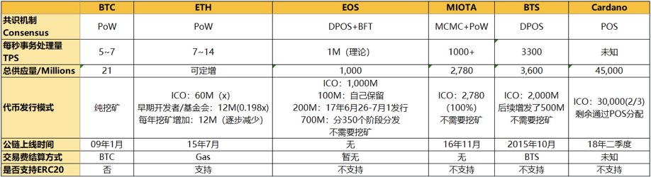
图中是TPS都在千笔以上的区块链项目，通过控制了记账节点的数量，牺牲了去中心化特性提升了TPS，比如石墨烯系列的DPOS，Ripple的共识。
如果我们把CAP做一个可视化处理，就构建出来一个三角形分布，我们可以得到下图：
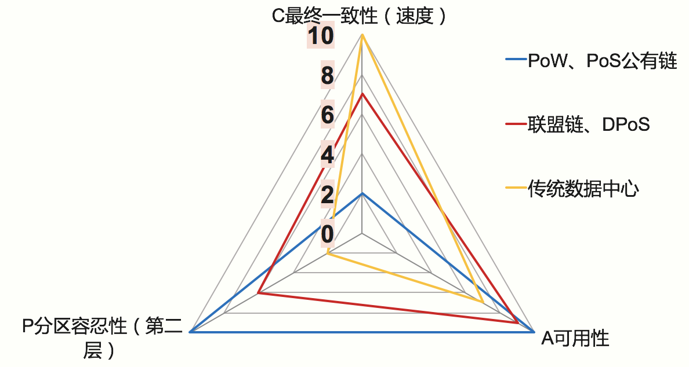
从图中我们可以看出，PoW、PoS型公链偏好AP特性，于是TPS有限。联盟链以及DPoS型共识偏好比较均匀，可以达到可观的TPS。
传统数据中心往往不考虑P在第二层语义上的问题，更不考虑拜占庭容错问题，所以他们拥有更好的TPS，但是在网络分区和出现拜占庭错误的时候，表现得不尽如人意。
这些共识机制在不同场景中可以有不同的选择，不存在适用所有场景的的共识机制。
好了，我们在上文讨论了CAP定理对区块链的影响，那么业界也还是使出了浑身解数来尽可能地提升TPS。
目前一共有两种正在讨论的方案，分别是Sharding分片技术和闪电网络。闪电网络旨在解决比特币微小额支付的实时性问题，其中的算法是比特币TPS扩展的一种方案，这部分的详细内容我们留到比特币专题再进行讲解。
这两种方案不涉及修改共识机制。如果我们修改为DPoS共识机制、DAG共识算法，也可以提升TPS，不过不在本篇的讨论范围。DAG共识机制我们在后续文章进行深入讨论。
分片技术是一种安装传统数据库分片的扩展，主要思路是将数据库分成多个分区（碎片）并将分区放置在不同的服务器上。
在区块链场景下，全网的节点相当于于分布式数据库中的不同服务器，这时候我们可以将交易分成不同的部分，然后每个记账节点只需要验证交易的一部分即可，而不必验证完整的交易性。
这带来的好处是就是并行化处理，记账节点之间相当于是协作关系，而不再是单纯的独立关系。
随着网络的增长，这种协作关系也可以随之扩展，这种扩展也叫做水平扩容。
分片技术有以下优势：首先是TPS可以从十几笔提升至少两个数量级，也就是千笔每秒，这不但对应用友好，也提升了用户体验；其次TPS的提升可以带来更多应用，这些应用在共识的激励下可以水平扩展区块链的性能，形成一种良性循环。
下面我介绍一下分片的两种方案：状态分片、网络分片。
第一种方案是是网络分片，网络分片是我们按照网络进行分区，区域内的交易归集在一起并在区域内进行验证，这样区域内的用户可以享受低延迟高吞吐的TPS，但是会带来跨区域分片的复杂性。我们也可以将网络分片比喻成数据库集群分区。
其次是状态分片，状态分片是在以太坊上提出的方案，状态分片目前没有确切的技术方案，尚在研究讨论阶段。
我们可以简单类比数据库的分表。我们将同一张表的数据塞到不同的节点，这些节点分布在全世界各地并且没有可信的网络环境。所以状态分片是非常复杂的技术，实践的最终结果我们需要看以太坊后续的动作。
好了，今天我们再次讨论了去中心与高性能区块链的问题，因为有了前面文章的储备，这次我们更深入地讨论了去中心化的深层次逻辑，并从技术理论上重新剖析了去中心化的涵义。
接着我们还比较了各个区块链的性能指标，最后我们提到了一个提升TPS的备选方案。希望读完本篇可以让你对区块链去中心化和性能有更深层次的认识。
本期的问题是，还存在哪些提升TPS的方案呢？各有什么样的优劣？你可以给我留言，我们一起讨论。
感谢你的收听，我们下期再见。
在前面的文章里，我们介绍了区块链的核心技术，也穿插介绍了一些项目。然而每个区块链都有自己的特色，接下来我们将针对每个项目进行详细讲解。今天我们就来讲讲智能合约和以太坊项目。
今天我们从智能合约这个概念入手，聊聊什么是以太坊项目以及它的发展历史。最后还会介绍几款钱包给你，希望通过今天文章的讲解，你也可以尝试在以太坊上编写简单的智能合约。
不同于法律意义上的合约概念，区块链领域的合约表达的是可以“自治自理”的 计算机协议，这套协议具有自我执行、自我验证的属性。
如果完全从技术角度来看，智能合约等价于一段事先就被规定好逻辑和条款的计算机代码被激活运行的状态，同时，智能合约也提供了通用的用户接口，用户可以通过接口与用户交互。
智能合约这一概念早在20世纪90年代就有人提出，这个人是从事智能合约和数字货币研究的尼克萨博（Nick Szabo）博士，尼克1996年在《Extopy》期刊上发表了对智能合约的描述，他认为智能合约是一个由数字表单指定的承诺，这个承诺包含关系到多方执行的一组协议。
从定义中我们可以得知，智能合约由多个协议组成，这些协议包含了用户接口，能表达用户的承诺，它可以安全有效地确定公共网络上的关系。
换句话说，智能合约是一个由计算机处理、可执行合约条款的交易协议，其总体目标是满足协议既定的条件，例如支付、抵押、保密协议。这可以降低合约欺诈造成的损失，降低仲裁和强制执行所产生的成本以及其他的交易成本。
我们举个实际的例子解释一下，今年4月9日，上海某建设银行支行开放了“无人银行”，银行中充斥了众多机器和显示屏，智慧柜员机、VTM机、外汇兑换机、VR设备和两台机器人代替了传统的柜台。
这里的智慧柜员机、外汇兑换机器人众多电子设备都可以认为是智能合约的一种表现形式，用户在办理银行业务时，如办理大额汇兑业务，业务流程和逻辑依据已经定在程序中，用户只需要按照操作一步一步进行，办理完成后即可获得单据。
这里“既定的业务流程、机器人模样的人机交互界面、双方同意承诺”组成了智能合约的概念，它甚至具有一定的法律效力。
萨博提出的是智能合约的概念，以及我们举的例子，都是广义的智能合约概念。智能合约具有多种实践形式，而在区块领域所说的智能合约概念，我们其实是指Blockchain-based这种形式。
在萨博的智能合约概念中提到了开放式网络，而我们知道开放式网络的基本要求就是拜占庭容错，通过前面文章的讲解我们知道，区块链天然具有拜占庭容错特性。所以如果在区块链上实践智能合约这个概念，两者会非常契合，天造地设。
首先实践了智能合约这一概念的是比特币，比特币脚本（bitcoin script）包含了5种标准交易脚本，这些脚本的功能不仅仅提供了普通单人支付的情况，它还提供了多方共同签名支付的脚本，叫做多重签名支付，多重签名支付可以看成是萨博语义下的智能合约。
除了比特币，发扬光大智能合约这个概念的区块链项目就是以太坊了，下面，我重点来介绍一下以太坊项目。
以太坊Ethereum项目的目标是打造一个去中心化的新一代互联网应用平台，这个平台称作Dapp平台。
这些Dapp基于以太坊智能合约虚拟机开发、编译、部署，并且可以自定义业务逻辑，部署后全网可见且自动执行，理想情况下不存在宕机、审查、欺诈、第三方干预的情况。
2013年底以太坊的创始人Vitalik在比特币开发者社区提出了可以运行图灵完备（Turing-complete）形式的应用，但这一思想并没有得到比特币社区的支持。
2014年，Vitalik带着自己的想法，宣布以太坊项目正式成立，2014年上半年开始筹集资金，聚拢一些早期开发者，同年7月份进行了为期42天的ICO，共筹集了超过1800万美元的比特币。
2015年7月，第一个版本的以太坊发布，主网正式上线，这一阶段Bug和设计缺陷较多，多是开发者在使用。
2016年以太坊发布第二个大版本Homestead，用户逐渐多了起来，同期也吸纳了不少Dapp开发者。
2016年6月，以太坊上发生了著名的黑天鹅事件——TheDAO事件，这打开了ICO市场，同时也造成了以太坊社区分叉，形成了以太坊和以太坊经典两个代币。
2017年4月，ICO风靡中国，ERC20提供了低成本方便高效的资金募集方式，为ICO提供了极大的便利，趁着数字货币牛市，以太坊的价格涨幅达十多倍，2018年1月以太坊价格突破1000美元。
以太坊核心概念包括：智能合约虚拟机EVM和Solidity编程语言、账户模型、以太币和Gas，交易和消息。
以太坊的核心概念首先是智能合约。
智能合约包含两部分，一部分是开发语言，主要以Solidity为主，Solidity与Javascript语言在使用上十分接近，这极大地降低了Dapp开发人员的学习成本。
Dapp开发者编写好代码以后，使用Solidity编译成十六进制字节码，然后部署到EVM上，也就是把合约广播到全网，等矿工打包后就形成了常年运行的Dapp了。
另一部分就是EVM。 EVM是以太坊智能合约虚拟机，我们可以等价理解它为Javascript、Python等脚本语言的执行引擎。
它是一个轻量级的虚拟机隔离环境，它并不提供访问本地网络、进程、文件系统的功能，它更像是一个封闭的容器，这个容器里面装了一个正在运行Dapp，可以看成是无法和外界交互的Docker Container。
Dapp在运行过程中，可以被请求或其他事件触发，然后执行相应的逻辑，这些请求和事件是由以太坊上的交易产生的，不是来自本地操作系统的事件。
Dapp运行过程中，每次状态发生变化，则意味着全网同步更新，大家的计算结果都是一致的，这有两个特性：
以太坊并没有采用UTXO模型，也不同于银行账户，它是由以太坊开发者设计了自己的账户模型。
以太坊上的账户有两种类型，第一类叫做合约账户CA（Contracts Accounts)，第二类叫做外部账户EOA（Externally Owned Accounts）。
简单理解就是：CA是智能合约代码用的账户，EOA是人用的账户；所以CA可以存储并执行智能合约代码，它的智能被EOA激活，它也不保存和存储私钥，合约账户可以调用其他合约。
EOA则是人们直接控制的账户，可以存储以太币，可以发送交易到合约账户，触发既定的逻辑。EOA账户由公钥标识，由对应的私钥控制。
当合约账户被调用时，存储其中的智能合约可以在矿工处的虚拟机中自动执行，并消耗Gas，如果Gas不足则会触发“Out of Gas”异常，被终止执行。
无论是CA还是EOA，在以太坊内部都被看做状态对象（state objects），意思就是说这些账户都有自己的状态，EOA具有以太币余额的状态，而CA除了余额，还多了合约存储状态。
Gas是执行智能合约操作的燃料，智能合约的每一个步骤都会消耗Gas，Gas是由以太坊的平台代币以太币转化而来，最小单位是wei，1ETH 相当于 10的18次方 wei。
以太币可以通过PoW挖矿而产生，目前以太坊主要通过GPU挖矿。挖出一个块可以换得5个以太币，并且还有一定的交易费、以及叔伯块的奖励。今年4月6日爆出著名矿机芯片厂商比特大陆已经开发出针对以太坊的ASIC专业矿机，相比GPU的效率提升2.5倍。
以太坊上的交易与比特币中的UTXO交易不同，它是指EOA账户将一个经过签名的数据包发送到另外一个账户的过程，这个过程产生的账户状态变化将被存储到以太坊区块链上。
以太坊上除了交易还有消息这个概念，消息指一个合约账户调用其他合约账户的过程，可以类比函数调用过程。
所以以太坊上的Dapp如果被触发，有两种可能，第一种是交易触发，第二种是消息触发。
这两种的区别在于前者是EOA发起的，后者只能是其他合约账户发起的。
状态对象的状态变化被以太坊共识机制的记录下来，交易和消息驱动着状态的变化，于是，在一个开放式的网络中构建一个全球共享的Dapp变得十分方便。
以太坊上智能合约具有全网准实时同步、准确执行、去中心化运行、较低的人为干预风险等特性，EVM和Solidity为全球开发者提供了较低的进入门槛。
以太坊项目又被称作区块链2.0项目，这里2.0就是指智能合约。那么以太坊与比特币相比，到底智能在那里呢？我们具体来看看。
与比特币相比，以太坊首先不是一个单纯的数字货币项目，它可以提供全世界无差别的区块链智能合约应用平台，这个平台基于我们前面文章所介绍的区块链四大核心技术要素，即P2P网络、共识机制、账户模型、加密模块。
除了以上的四个技术要素，以太坊还推出了EVM——以太坊智能合约虚拟机，并且，它还推出了自己的智能合约语言Solidity。
于是，区块链的开发者因为智能合约的出现开始分为两类。第一类是公链底层开发者，主要是以C++和Go语言为主的全节点开发者，他们需要对区块链各个技术模块有很深的理解。
第二类是智能合约开发者，也就是应用开发者，这类开发者对区块链的运行原理不需要理解很深，只需要会编写Solidity，了解规范即可。
除了以太坊智能合约这个概念以外，它还设计了下面的内容。
本篇我们介绍了智能合约的概念以及以太坊项目，并且讲解了与比特币的主要区别，以太坊上的一些核心概念，下一篇我们将结合实际案例讲解智能合约，带领你认识一些智能合约模板，并顺便介绍一下其他区块链智能合约平台。
亲爱的读者，快来构想一下属于自己的智能合约Dapp吧。你可以给我留言，我们一起讨论。
参考链接：
https://en.wikipedia.org/wiki/Smart_contract http://tech.ifeng.com/a/20180413/44947993_0.shtml
上一篇我们聊到了区块链智能合约，我主要介绍了智能合约的概念，但是并没有给你提供智能合约的实际运行案例，那么今天，我们就自己动手写一个智能合约，并且介绍一下智能合约标准模板，供你参考学习， 并搭建起自己的智能合约。
本篇将以以太坊作为基础知识进行讲解，本篇面向没有任何智能合约基础的人群，所以配备了较多的插图和操作命令，如果你正在收听音频，可以点击文稿查看，希望读完这篇文章可以帮助你快速入门智能合约。
在实际操作智能合约之前，我们首先回顾一下以太坊，以太坊又称以太坊钱包。以太坊钱包提供了包括账户管理，以太坊转账、Dapp部署与使用在内的一些常规功能。
以太坊社区提供了多种语言实现的客户端和开发库，多数客户端支持JSON-RPC2.0标准，目前支持的客户版本有Go-ethereum（Go语言）、Parity（Rust语言）、Cpp-ethereum（C++语言）、Ethereum-lib（Javascript)、EthererumJ(Java语言)、Pyethapp（Python语言)，基本涵盖了主流编程语言。
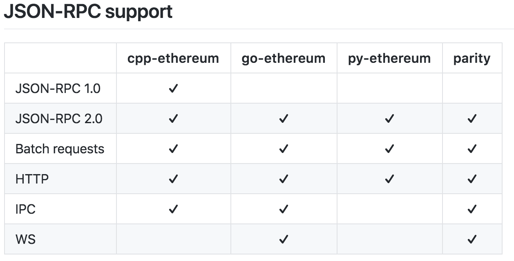
图片来自以太坊官方文档
官方推荐使用的版本是Go-ethererum，这是Go语言实现的版本，又称Geth客户端。
需要提醒你的是，这里客户端的实现语言并不是要求用户熟悉相应的编程语言，这里的用户是指Dapp开发者，比如在操作Geth客户端的时候，用户其实并不需要了解Go语言。
本文使用Geth来进行测试，首先我们要获取Geth客户端，如果用户使用的是Ubuntu环境的话，可以直接从PPA安装。
# apt-get install software-properties-common
# add-apt-repository -y ppa:ethereum/ethereum
# apt-get update
# apt-get install ethereum
安装成功后，我们可以查看Geth的版本。
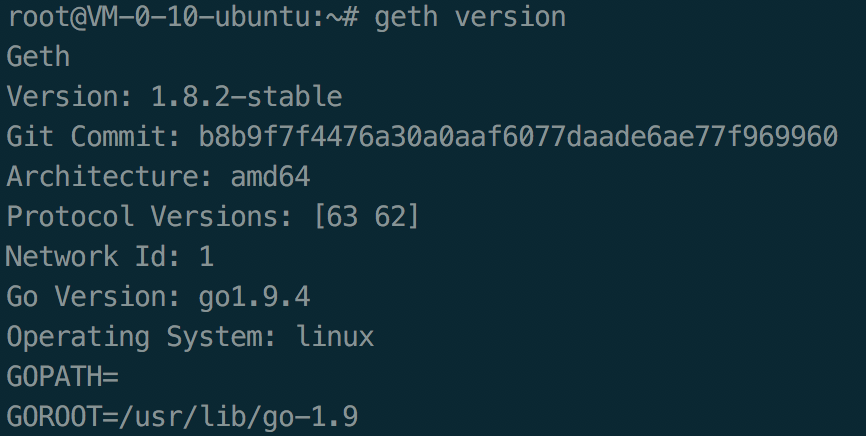
表示我们已经安装成功，当然你可以也可以编译安装，由于篇幅有限，你可以另寻资料进行尝试。
如果在以太坊的主网上运行和开发测试智能合约，这是不明智的，因为会消耗真实的以太币，不过我们可以使用Geth搭建一条属于自己的以太坊区块链，也就是以太坊私链。
怎么搭建呢？其实很简单，只需要修改配置文件和一些运行参数即可。
{
"config": {
"chainId": 98,
"homesteadBlock": 0,
"eip155Block": 0,
"eip158Block": 0
},
"difficulty": "200000000",
"gasLimit": "2100000",
"alloc": {
"7df9a875a174b3bc565e6424a0050ebc1b2d1d82": { "balance": "300000" },
"f41c74c9ae680c1aa78f42e5647a62f353b7bdde": { "balance": "400000" }
}
}
然后执行：
$ geth --datadir /root/geth-test/ init genesis.json
这样，我们就初始化了属于自己的创世区块信息。
接下来我们创建一个账户，由于是用户私链挖矿，只有你一个人挖矿，所以使用CPU挖矿完全没有问题。
我们通过如下命令进入Geth命令行交互页面：
$ geth --datadir /root/geth-test/ --networkid 98 console
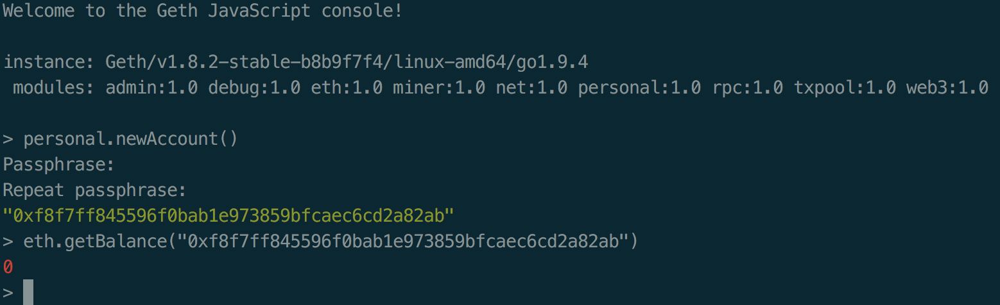
如上图所示的那样，运行通过。
personal.newAccount()
我们创建了一个新账户，这个账户就是EOA账户，并通过eth.getBalance获取了当前地址的余额，显示为0。
输入Exit退出后，我们开始以挖矿模式启动，这里我们最好记录一下我们的地址：
【0xf8f7ff845596f0bab1e973859bfcaec6cd2a82ab】
我们使用如下命令启动挖矿，注意在Etherbase的地方填上述地址：
$ geth --datadir /root/geth-test/ --networkid 98 --mine --minerthreads=1 --etherbase=0xf8f7ff845596f0bab1e973859bfcaec6cd2a82ab
以太坊的PoW挖矿算法是内存困难型的，首先需要生成DAG，这个视你设备的性能而定，需要耗费一定时间，请耐心等待，如下图所示，我们可以看到DAG生成非常耗费时间。
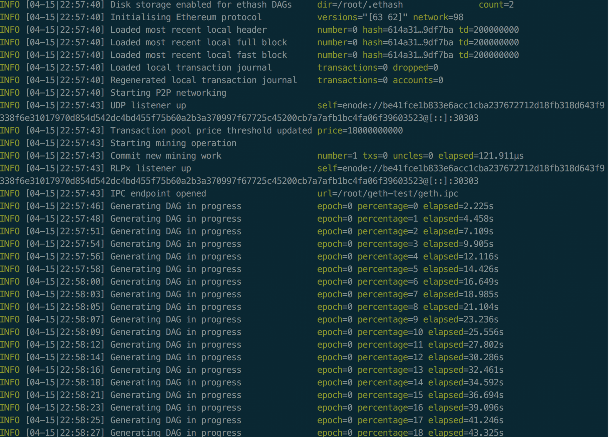
在我的远程开发机上一共耗费了6分半，又经过了4分钟，我挖到了第一个块，如下图所示。
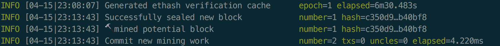
这期间机器的负载如下。
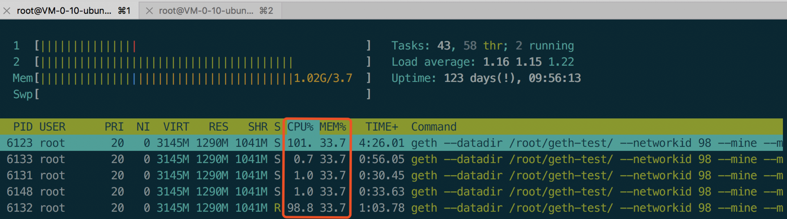
可以看到CPU和内存占用很高，我这里使用测试的机器是2Core 4GB Ubuntu16.04。
现在我们再去检查一下Etherbase所指向地址的余额。
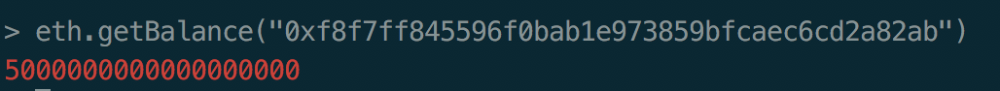
可以看到已经有5个以太币了，以太币的最小单位wei，所以5后面18个零表示5个以太币。
智能合约的开发与钱包是独立的，用户可以使用IDE进行调试等操作，目前Dapp的IDE并不多，常见有Truffle、Embark、Remix几种；
这篇文章中，我并不使用IDE，这里仅仅会给出一些示例代码，即经典的Hello Word，你如果想尝试编写自己的智能合约，可以使用在线IDE。
首先我们要获取Solidity编译器，通过 apt-get install solc 来安装。
安装成功后，我们新建一个Solidity源码文件，命名为helloword.sol，并且写入代码如下。
pragma solidity ^0.4.11;
contract helloWorld {
function renderHelloWorld () returns (string) {
return 'helloWorld';
}
}
执行 solc –bin helloword.sol 获得EVM二进制码。
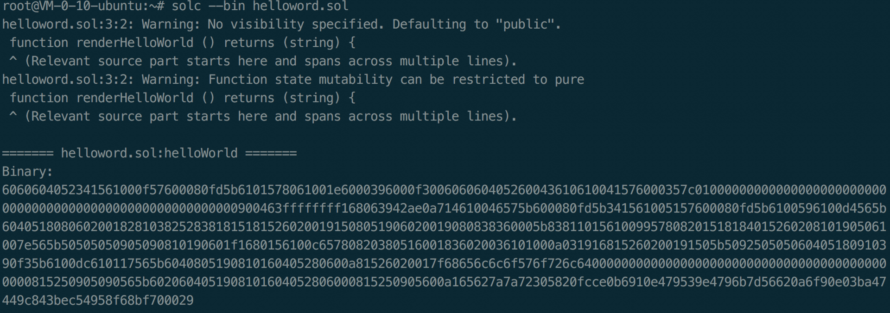
编译器警告我们暂时不必理会，接下来我们还需要生成ABI部署参数，使用命令 solc –abi helloword.sol。
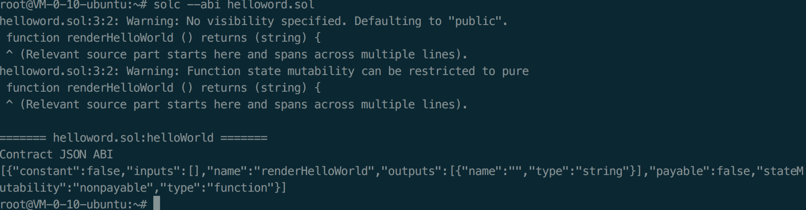
开始部署，我们进入console，
定义code和abi两个变量如下，注意code的值最前面有0x，二进制数据是用十六进制表示的。
>code="0x6060604052341561000f57600080fd5b6101578061001e6000396000f300606060405260043610610041576000357c0100000000000000000000000000000000000000000000000000000000900463ffffffff168063942ae0a714610046575b600080fd5b341561005157600080fd5b6100596100d4565b6040518080602001828103825283818151815260200191508051906020019080838360005b8381101561009957808201518184015260208101905061007e565b50505050905090810190601f1680156100c65780820380516001836020036101000a031916815260200191505b509250505060405180910390f35b6100dc610117565b6040805190810160405280600a81526020017f68656c6c6f576f726c6400000000000000000000000000000000000000000000815250905090565b6020604051908101604052806000815250905600a165627a7a72305820fcce0b6910e479539e4796b7d56620a6f90e03ba47449c843bec54958f68bf700029"
>abi=[{"constant":false,"inputs":[],"name":"renderHelloWorld","outputs":[{"name":"","type":"string"}],"payable":false,"stateMutability":"nonpayable","type":"function"}]
你可以在控制台分别执行，由于结果比较长，这里就不放出来了。
// 这一步解锁账户，用于方便部署合约
>personal.unlockAccount("0xf8f7ff845596f0bab1e973859bfcaec6cd2a82ab")
// 使用上述定义的abi变量生成合约信息
>myHelloWorld=eth.contract(abi)
// 注入code信息，激活合约
>contract=myHelloWorld.new({from:"0xf8f7ff845596f0bab1e973859bfcaec6cd2a82ab",data:code,gas:1000000})
最终执行结果如下。
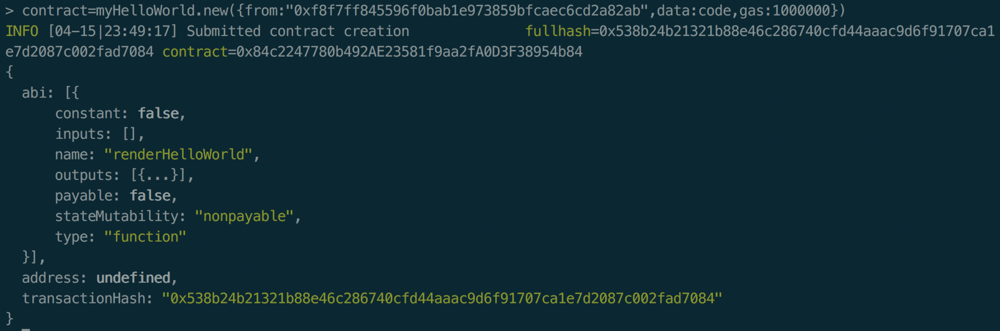
我们可以通过txpool来查看未确认的交易。
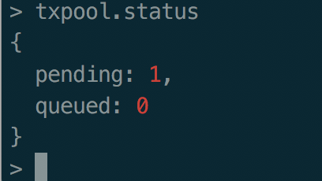
接下来只要等待出块即可，你的合约就会成为正常运行的合约了，否则合约还不可以调用。
由于我本地挖矿出块异常缓慢，所以我尝试了Remix IDE，运行后我们可以得到如下结果。
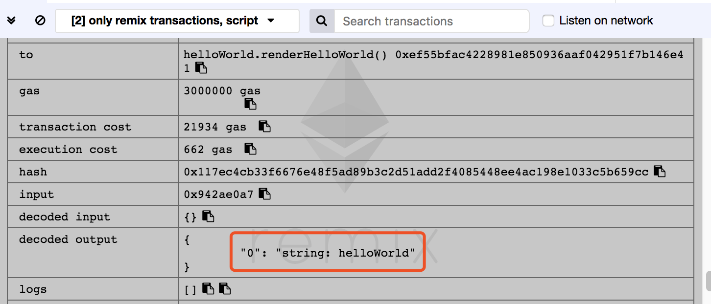
至此一个简单的HelloWord智能合约就生成啦，不过它的运行成本非常高昂，所以我们极力建议使用在一些方便的虚拟环境中。
当任何人都可以写代码自定义业务逻辑的时候，也就意味着需要一套标准让人们降低开发门槛，标准化的接口让产品之间可以协作。那么我们接下来就来讨论一下以太坊上的三种智能合约标准模板。
这三种模板都与Token有关。那么首先我们就来区分一下数字货币与Token的概念，数字货币一般指一个区块链项目的平台代币，比如以太坊上的以太币，元界上的ETP都是基础代币。
而Token往往代表了一种资产，这些资产在已经存在的其他区块链之上运行，资产还可以像商品一样交易，例如消费积分、游戏虚拟资产。Token离具体的区块链应用也会更近，因为区块链应用的项目方通常也是Token的发行方。
目前最广泛使用的三种Token标准都是基于以太坊的，它们分别是ERC20、ERC223、ERC721。这里的ERC表示Ethereum Request for Comments，翻译过来就是以太坊意见征求稿。
2015年11月，V神在Github上提交了ERC20代币的技术标准，随后2016年到2017年，大量的区块链项目都使用ERC20作为工具进行ICO。这使得ERC20成为了区块链整个行业内的Token标准，可见这种标准的影响之大。
实际上ERC20代币是一类运行在以太坊区块链上的智能合约，只不过这些合约代码遵循一定的规范，这个规范就是ERC20标准，它规定了跨Dapp转移Token、Token交易以及一些使用接口。
ERC20一共定义了6个函数和两个触发事件，他们都是使用Solidity语言编写的。
6个函数描述了如何转移以及Token的相关数据如何被访问，市面上99%的ERC20 Token都可以找到这6个函数。2个事件提供了Approve和Transfer的格式化输出。
下面我们重点看一看ERC20的接口。
// ---------------------------------------------
// ERC Token Standard #20 Interface
// https://github.com/ethereum/EIPs/blob/master/EIPS/eip-20-token-standard.md
// -------------------------------------------
contract ERC20Interface {
function totalSupply() public constant returns (uint);
function balanceOf(address tokenOwner) public constant returns (uint balance);
function allowance(address tokenOwner, address spender) public constant returns (uint remaining);
function transfer(address to, uint tokens) public returns (bool success);
function approve(address spender, uint tokens) public returns (bool success);
function transferFrom(address from, address to, uint tokens) public returns (bool success);
event Transfer(address indexed from, address indexed to, uint tokens);
event Approval(address indexed tokenOwner, address indexed spender, uint tokens);
}
上面我们简要介绍了ERC20标准合约的接口，下面我们来看看升级版的ERC20。
在某些情况下，ERC20也有些缺陷。例如某人使用ERC20发送100个Token到另外一个账户，如果目标账户是一个合约账户，目标账户的合约代码如果不兼容ERC20 标准怎么办呢？
这一点非常有可能，由于合约代码无法识别交易，所以这笔交易就会被拒绝。
我们知道以太坊使用的并不是UTXO，这意味着合约之间不满足ACID，那么很遗憾，发送方的这100个Token就永久地丢失了。
为了解决这个问题，非官方的社区开发者提交了ERC223模板，可以解决这个问题，使用者需要把既存的ERC20合约升级到ERC223合约。
2018年初，有一个区块链游戏火了，叫做以太坊养猫游戏，这个游戏也是一个智能合约。它基于ERC721标准，实际上它也是一种Token标准。
ERC721与ERC20最大的区别是：ERC721定义了每一份Token都是唯一的，它们有唯一的标识。例如芒果和米饭是两种不同属性的资产，从物理世界来看，他们是不能直接混在一起使用的，我们不能把芒果加到大米中。
这样一来，ERC721中Token的含义也转变成了一种物权所有权凭证，不再是ERC20中的同质资产。
今天我们介绍了以太坊钱包，手把手教你搭建了一条以太坊私链，并告诉你如何编译和部署智能合约，最后我还介绍了三种流行的智能合约模板，希望能帮助你上手并能深入地理解智能合约。
今天的问题是，除了以太坊之外，还有哪些主打智能合约的区块链项目呢？你可以给我留言，我们一起讨论。感谢你的收听，我们下次再见。
参考链接：
前面两篇我们都聊了智能合约的话题，智能合约可以说是当下区块链最热的概念了，在多数人眼里，没有智能合约的区块链价值几乎就大打折扣。
那么说，实际上是不是这样呢，我们今天就来聊聊一个并没有开放式智能合约的区块链项目——比特股。
比特股发布于2014年，虽然没有引入智能合约的概念，但它提供了功能极为丰富的金融类工具，比特股上所有的金融合约都是事先在代码里写好的，所以说它的本身就是一个超级智能合约集合。
比特股是一个公开透明的、7*24小时不间断运行的、基于区块链技术的去中心化交易平台。
它兼具了区块链的优点，也是第一个有关稳定数字货币的尝试，目前比特股提供了若干核心的金融服务，例如支付、撮合交易、资产存托等服务。
相较于传统的金融IT系统，它的服务器是由分散在世界各地的受托人（Delegated）维护的，即使其中一些人被攻击也不会导致整个系统的宕机。
比特股目前全网在线的服务器有27个，由于DPoS共识算法提供了较好的交易吞吐性能，理论上比特股的TPS可达10万，这也是比特股在技术上区别于其他区块链的最显著特征。比特股较好的TPS其实也是为了它的功能服务的。
在这里，我们能看出比特股平台的性质。
首先，比特股平台是一个交易平台，交易平台的显著特征是整个市场对时间敏感，大家都希望下单之后快速成交，所以高TPS是一个交易平台的基本需求。
其次，比特股是去中心化的交易平台。目前流行的中心化数字货币交易平台最大的问题是资金管理系统和撮合系统都由同一家控制的。
然而在传统的证券交易领域，证券登记和交易撮合是两个不同的主体，他们之间是协作关系，共同受到证券会的管辖。
所以，如果你的数字货币存在中心化交易平台，你的交易撮合也受它来控制，这里的交易撮合指的是一个交易双方通过挂出买单和卖单，系统完成撮合匹配直至最终成交的过程。
由于以上的这一切都是不透明的，这里面就有很多的不确定因素。
比如交易平台跑路风险、黑客攻击、资产莫名其妙丢失，或者撮合的过程中，交易对手方是谁，是否有内幕交易。这些情况都会带来较大的风险。
那么比特股是如何设计中心化交易所来避免上述风险的呢？
比特股作为一个去中心化的交易所，它有两个机制可以避免上述的风险。
第一、资金出入是由承兑商来支持的，人人都可以成为承兑商，也就是人人承兑； 第二、锚定机制提供了稳定货币的出入金过程，锚定机制也保证了比特股的出入资金和交易撮合是分离的，避免了中心化交易平台的弊端。
这个过程可以简述为：法币<—>锚定资产（系统内置货币）<—>bts 的相互转换。从法币到系统内置货币用到了人人承兑机制，从系统内置货币到bts的转换用到了锚定机制。
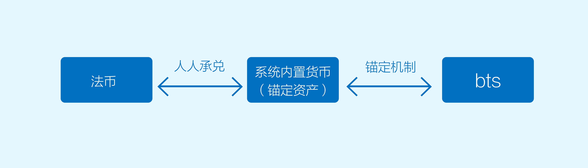
这里的bts是比特股上流通的平台代币，它和比特币一样有类似的总量上限设定，大约在36亿左右，目前流通量26亿左右。我们接下来就来看看这两个机制。
人人承兑就是提供了从法币到系统内置货币的转换，比特股系统内置了多种货币，它锚定了多数法币。
例如bitCNY、bitUSD、bitEUR等等，这些系统内置货币是可以与CNY、USD、EUR按照1：1兑换的。而人人承兑货币其实就是提供了bitCNY和真正人民币之间的相互转换。
它的机制上有点类似那个比特币的场外交易。所谓场外交易，就是没有中心化撮合中介，交易双方自行议价成交。
例如，我想要买比特币，就可以找到一个专门的承兑商，直接把这个钱支付给交易商，然后承兑商再把比特币支付给我。这部分的内容，后面我们讲数字货币交易所的时候会和你详细讲解。
人人承兑在逻辑上差不多，它提供了一个CNY法币和bitCNY的兑换手段，实际上就是让法币和比特股系统内置货币的交换能够进行，而且是去信任的进行。
所以从资金托管的角度来看，比特股与中心化交易所很大的区别，比如你在一个交易所里充值，你只能信任这个交易所在保管你的钱，在你要提现的时候，你只能信任交易所愿意让你提出。
但是人人承兑的就不一样了，人人承兑是你从A承兑商获取bitCNY，你可以找B承兑商再换成人民币，不需要只在同一个地方兑换。
因此一个人此时有充值的需求，过一段时间可能就有提现的需求，所以实际上每个人都可以成为承兑商，我可以是买家也可以是卖家，交易角色的转换可以让市场更灵活。当然市场上也有专门提供充值和提现服务的 “承兑商”，这些承兑商收取手续费来盈利。
但是，不是所有的中心化风险都可以通过技术解决，人与人的信任问题没有一劳永逸的解决办法，即使你们当面交易也有可能遇到对方欺诈的行为。
我们只能说，CNY法币与bitCNY锚定之后的充值和提现相对更安全，人人承兑提供了一种有效的机制，缩短了出金入金的周期，提升了安全性，如果资金在比特股系统之内，整个使用期间也没有人能威胁到你的资产。
锚定机制是一种去中心化的抵押机制。我们刚才提到了比特股系统内置了多种货币，它锚定了多数法币，例如bitCNY、bitUSD、bitEUR等等，这些系统内置货币是可以与CNY、USD、EUR按照1：1兑换的。
系统内置货币的发行商是系统自身，发行给抵押了bts的用户，发行的数量是由抵押的代币数量决定的。你用bts抵押，然后换取bitCNY。
换句话说，任何持有bts的人可以用它来抵押生产系统的内置货币，例如bitCNY，它的抵押规则要求两倍价值的bts进行抵押，由于有2倍价值的bts作为保障，所以定义1 bitCNY = 1元人民币的风险较低。
比特股系统本身提供bts与bitCNY交易对，例如现在bts价格是0.5元人民币，我就能用4个价值2元的bts抵押产生1枚bitCNY，也就是2倍价格抵押。
这种抵押担保机制保障了bitCNY的价值，并且从技术层面来讲，比特股的共识机制保证了恶意修改bitCNY的数量的造假行为是不可行的。
如果bts价格下跌，系统就会自动把我抵押产生的bts卖掉，因为抵押了2倍价值的bts，所以如果没有暴跌50%以上，系统都可以在交易市场上卖掉我抵押产生的bts，并在市场上获得bitCNY。
如果暴跌50%以上，系统会以一成的价格（强制平仓）卖出抵押的bts，直至卖够抵押产生的bitCNY。
从操作层面来看，支付bitCNY实际上消耗的还是bts，但需要消耗多少，就以实时价格买入多少bts。
买入操作是瞬间完成的，在比特股上有专门的代币资金池来提供，实时价格由系统为之决定的，所以使用者不用承担任何比特股代币价格波动带来的风险。
至此，稳定的bitCNY货币就产生了，它兼具了区块链的优点，且是一种稳定货币。
除了抵押以外，还有强制平仓、强制清算这种机制来保证价值和实际所锚定的货币等价。内容比较深，留给你自己挖掘。
比特股的核心代码是由Cryptonomex公司开源的石墨烯（Graphene）框架演变而来，它的主体代码是C++编写的，里面使用了大量的boost库组件，如果你对石墨烯技术感兴趣，并且熟悉C++，可以仔细研究一番。
除了比特股核心，这里还有一套Javascript编写的UI产品，叫做Bitshares-UI，Bitshares-UI其实是一个轻量级的基于浏览器的钱包：比特股钱包，这个钱包将用户密钥存储在本地浏览器上，并且密钥是通过用户密码加密并储存在浏览器数据库。
发送交易时，先本地对交易进行签名，再传输到代理服务器上，由服务器广播至比特股全网，这个服务器你也可以自己搭建。
比特股所使用的共识算法我们已经讲过，是DPoS，所以比特股也有见证人节点，目前有101个见证人节点，从101个节点中，社区又选出了11位代表，我们叫做理事会。理事会接受社区投票然后行使比特股上的治理权。
比特股使用的也是ECC椭圆曲线非对称加密算法，值得一提的是，比特股并没有类似比特币地址的概念，在比特股上取而代之的是可读的账号系统，这些账号与私钥一一绑定，可读账号就是比特股系统中的地址。
比如我的账号是“chenhao”，那么在比特股上，你支付给我bitCNY的时候，接收方一栏直接填“chenhao”即可。
今天我向你详细介绍了比特股系统，比特股也是一场伟大的实验，它打破了区块链应用数字货币的局限性，让区块链技术具有丰富的金融特性。
比特股技术上的优势多体现在DPoS算法上，所以本篇我重点介绍了比特股的产品特性。
比特股社区也是区块链界的一股清流，因为持有比特股往往需要学习大量金融知识。
投资者想要投资比特股，光是弄清楚锚定机制足以让投机者就需要花费大量时间，所以一旦被比特股套牢，似乎只能学习比特股进行自我提升，这也让比特股社区的平均金融知识储备高于其他区块链项目。
比特股上的“强制平仓”和“强制清算” 是什么意思呢？你可以跟我留言，我们一起讨论，感谢你的收听，我们下期再见。
附录：
在第 8 讲中，我们已经讲过了一些成熟的区块链项目，这些项目多数都属于数字货币项目。
今天我们来聊几个比较创新型的区块链项目，它们非常吸引人们的视线，容易引起话题，一方面它们的市场营销非常成功，另一方面它们也提出了革新的区块链技术概念。
下面我们来聊聊三个项目。
EOS全称EOS.IO软件，EOS也是EOS.IO上的平台代币缩写，它暂时没有准确的中文翻译，中文社区把EOS叫柚子，这一点其实得益于EOS的发音与水果“柚子”相近。
EOS是一个以太坊的竞争型区块链，它提供了全新的区块链架构，使得去中心化平台水平扩容和垂直扩容都成为了可能。
如果智能合约是程序，那么可以把EOS看成是一个超大的操作系统了，它为所有的程序，也就是智能合约提供了基本设施。例如账户、授权、数据库、异步通信等接口。
它甚至可以跨平台驱动大量的CPU或者集群，所以EOS的TPS肯定是远超以太坊的，这也使得构建基于区块链的应用几乎没有成本而且快速高效。
在说EOS之前，我们来回顾一下DPoS。
DPoS其实是BM参照现实世界中的议会制度而设计的共识算法。DPoS的核心理念其实是投票，它的设计理念是延迟性惩罚，它假设参与者绝大部分都是没有恶意的。
“人性本善”的假设虽然让系统的作弊成本降低，但是随之而来的惩罚也非常严厉，就是丧失见证人的资格，但是带来的好处则是效率的提升。
我们来看看EOS吸引人的地方，这里一共有两点，第一是EOS号称可以提供百万级TPS交易性能，第二是EOS的链上治理机制：区块链宪法以及21个超级节点（见证人节点）。
在EOS中，记账节点又被称作超级节点，EOS一共有21个主节点，另外还有100个备选超级节点，这些超级节点完全是等价的。
超级节点的基本职责包括了忠实打包交易、执行并验证智能合约、向全网广播有效区块以外，还多了一项职责：保障并促进EOS项目的发展。
如何促进呢？BM在EOS中强化了DPoS算法的投票机制，并首次提出了区块链宪法的概念，我们可以直接引用EOS技术白皮书中的内容来一探究竟。
EOS.IO 应用使得区块链创建了一个点对点的服务条款协议或者绑定用户到一个合约，这都需要用户对其签名，简称“宪法”。
宪法的内容定义了仅仅依靠代码无法在用户间履行义务，同时通过建立管辖权和可选的法律来解决相互间的争端。
每个在网络广播的交易都必须将宪法的哈希值作为签名的一部分，从而显性地将签名者绑定在合约中。
宪法还定义了人类可读意图的源代码协议。 这个意图是用来识别错误和功能之间的差异，当错误发生时，引导社区对什么是适当或不当修复。
可以看出区块链宪法是一种非代码强制执行的规则，有点像我们安装软件时的“同意”协议，所以它更像是一种人为承诺，为了弥补DPoS较弱的抵抗恶意规则的缺陷。
那么什么人可以发起并修改宪法呢？就是超级节点，也就是记账节点，它规定了17/21以上的节点同意才能发起修改提案。
我们可以看出超级节点的权力十分巨大，这也引来了人们对此产生了争议。
Vitalik 针对EOS超级节点竞选发表过意见。他认为21个节点的DPoS虽然引入了治理结构，但也很容易受到选民和持币大户的操纵，最终导致“财阀统治型”的治理结构。
在超级节点竞选过程中，某些节点为了获得更多的选票，承诺当选后可以给投票者分红，这在西方文化中是无法接受的，这一点似乎违背了BM设计DPoS的初衷，所以BM以及EOS团队都表示坚决反对。
BM对此也给了回应，BM表示自己的目标是降低创建社区的准入门槛，并允许市场自由竞争来奖励最高效的社区以及惩罚最腐败的社区。
他也认为善良是主观的，而且每个社区都能定义持有什么样的价值观是好人，并积极驱逐他们所认为的坏人。
Vitalik和BM都相互发文怒“怼”对方，但是总的来说，Vitalik和BM这种公开讨论推进了区块链行业的发展，给人们带来了更多哲学和设计原则上的思考。我在附录中给出了社区翻译版文章，你可以进行查询。
IOTA是一个为了物联网（IoT)而生的区块链项目。严格来说，IOTA不是“区块链”，因为它没有区块，也不是链式结构。
IOTA提出了一种基于有向无环图（DAG）的分布式账本结构，这种结构IOTA将其命名为The Tangle，探戈。
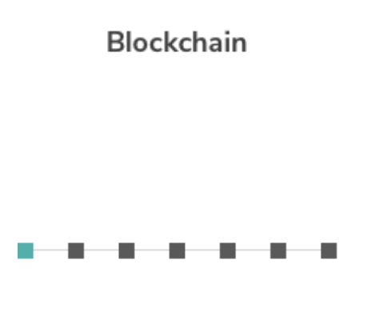
上图是常见区块链账本结构，而下图展示了Tangle的账本结构。
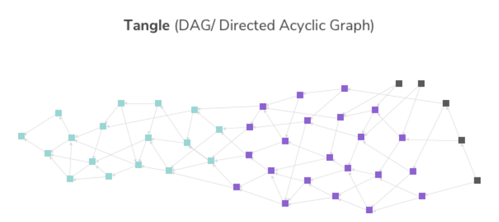
我们来看看这两张图的区别，首先区块链账本结构的打包单位是区块，而Tangle直接就是交易，或者或“交易引用”。
任意交易Tx-black会引用过去的两条交易记录，这样被引用的交易Tx-purple相当于有了一次确认，间接地证明了合法性，随着一次又一次的被引用，Tx-purple会转变成Tx-green。
也就是说，我们发送交易的目标是成本绿色部分的交易，成为绿色部分的交易，可信度是可以计算的，面对不同的交易场景，可信度可以设置为51%，90%或者百分之百。
那么说，如何计算这种可信度呢？
IOTA上的共识算法叫做MCMC算法，它可以任意选择黑色部分的两笔交易，进行引用。
我们回到DAG的结构中，我们发现每一个绿色的交易都会有一条从黑色起始位置通往它的路径，那么你这笔交易的可信程度就可以很容易计算。
例如我们执行MCMC算法N次，这笔交易被全网接受的概率就是M/N，其中M就是能从底部通往这笔交易的数量。
Tangle结构和MCMC共识是非常具有吸引力的，它也带来了以下特性。
IOTA的Tangle账本结构，为区块链技术带来了新的视角，这也是它吸引人的关键。
卡尔达诺（Cardano）也是一个正在开发中的新一代区块链智能合约平台。
卡尔达诺项目最大的特色是由理论研究主导，严格采用数学形式化验证的来证明严谨、安全性的区块链。
卡尔达诺认为现阶段基础公链在无论在可规模化性（Scalability）、可互操作性（Interoperability）和可持续发展性（Sustainability）均存在不足，卡尔达诺希望进行概念和技术上的创新，最终解决上述三个方面问题。
卡尔达诺的团队认为目前区块链面临着两个比较突出的问题：
1.区块链协议的升级将会导致区块链分叉； 2.区块链的水平扩容和垂直扩容能力不足。
所以Cardano提出了分层架构理念，这似乎与传统IT架构模式：分层式架构模式有点像，卡尔达诺由两个层次组成。
相比于概念创新，卡尔达诺的团队研究了一种被命名为 Ouroboros 的算法，它其实也是PoS共识算法的变种，不同的是卡尔达诺团队为此提供了数学形式化证明，证明了它是高效、安全的共识算法。
卡尔达诺是一种理论研究驱动实践的尝试，无论是两层设计，还是Ouroboros算法，都为区块链技术的发展提供了值得参考的视角。
今天，我们介绍了EOS、IOTA、ADA三个受人瞩目的区块链项目，EOS和ADA都是致力于区块链去中心化的应用平台，IOTA致力于为物联网提供分布式账本。这些项目引领了区块链的发展方向，无论是技术层面还是市场层面，他们都是非常出色的。
所以，你还可以想到那些技术或者市场做得出色的区块链项目呢？快来分享一下吧。感谢你的收听，我们下次再见。
区块链的深入技术篇写到了现在，我们已经一起看过了很多国外区块链项目的技术逻辑。实际上，国内的优质区块链项目其实也不少，并且势头很足，不容小觑。
我在前面的文章中介绍过国内的几个区块链项目，不过仅从发展的角度做了一个简要概述，并没有进行深入探讨，今天我们就重点来看一看这些项目的设计思路与技术特点。
我们以前讲到过，NEO的前身是小蚁，小蚁最早在2015年发起，它在2017年中正式更名为NEO。
NEO项目一共经历过两次ICO，第一次ICO是项目创立，第二次ICO是项目更名后的品牌升级。可以说通过NEO项目的起起落落见证了整个国内区块链项目的发展。
在重做了市值管理和社区建设后，NEO成为了市值TOP10区块链项目之一。
NEO是一个开放式智能经济平台，它提供了数字身份、数字资产、智能合约三种核心元素用来支持NEO智能经济生态。
NEO 的通用轻量级虚拟机 Neo VM 具有高确定性、高并发性、高扩展性等优点。
元界是我所主导的一个开源区块链项目，项目于2016年8月发起，经过了5个月开发和测试，于2017年2月份上线。
元界是一个关注社会和商业需求的区块链项目，目标是构建以数字资产（Metavase Smart Token）和数字身份(Avatar)为基础新型区块链生态，这种生态会为人类社会带来深刻的变革。
除了数字资产和数字身份两个概念，我们还提出了BISC内置智能合约和BaaS区块链即服务的概念，并把数字身份作了延伸，提出了Oracle价值中介（此Oracle非彼Oracle）。
总体思路是总结人与人、人与资产之间的关系，把总结后的通用需求抽象成模型，然后做到区块链底层供使用者方便使用，这种方式我们叫做BISC（Buit-in Smart Contract）内置智能合约，它可以降低商业应用在开发和使用过程中的技术风险。
通过BISC，元界提供了数字资产MST、数字身份Avatar、Oracle以及资产交易的功能，这一切都是围绕资产和人来展开的。
数字资产MST可以让人们获得区块链带来的点对点操作资产的优势，数字身份Avatar体现了人与人、人与资产之间的关系。
它可以连接到MST上，通过Avatar任何人都可以成为Oracle，Oracle可以帮助人们构建不可篡改的去中心化信誉系统，资产交易可以为MST解决基础的流动性需求。
人们将区块链作为基础服务植入IT系统中的过程叫做BaaS（Blockchain As A Service），BaaS是一种快速、方便构建区块链应用的方式。
量子链致力于开发比特币和以太坊之外的新型区块链生态，它的目标是通过自行设计，让比特币和以太坊完美地融合在一起，并通过智能合约为人们提供Dapp平台。
除此之外，量子链还提出了移动端Dapp策略，通过引入身份机制和Data-feed链外数据达到合规性要求，最终通过推动Dapp的普及，让传统互联网企业可以将量子链作为一个新的应用平台进行尝试。
量子链关注利用区块链技术进行价值传输，首次提出了VTP——Value Transfering Protocal，价值传输协议的概念。这里的价值传输协议是对标HTTP、SMTP、POP3、SSH等协议的。
量子链认为，在比特币之前人们一直无法在不借助第三方的情况下进行较好的点对点价值转移，比特币是运行在互联网上的一个VTP协议，随着区块链技术的发展，人与人、人与信息的交互更加多样化，未来会有更多的实体会被数字化（Tokenization）。
这里所说的就是资产登记，被登记完之后，肯定还会面临价值流转的问题。量子链从技术出发，提供了第一个结合比特币UTXO和以太坊EVM的区块链技术生态区来解决上述问题。
比原链是一种多元的资产交互协议。简单来理解也是做数字资产的，不过换了种说法，理念稍不同。比原链认为在区块链上存在两种不同形态资产。
人们可以通过比原链进行对上述两种资产进行登记、交换、对赌、甚至基于合约的更具复杂性的交互操作。目的是连通原子世界与比特世界，促进资产在两个世界间的交互和流转。
比原链采用三层架构。
本体网络是原NEO项目组成员李俊创立的，不过与NEO是完全独立的项目，随着技术大咖季宙栋的加入，市值跃入TOP20。
本体网络是一个主打构建分布式信任体系的区块链项目，支持多链、多系统融合的协议网络，不同的链和不同的系统都可以通过本体的信任协议进行协作。
本体包含独立的分布式账本、P2P网络协议、模块化的共识协议组，模块化的智能合约机制几个主要模块。
本体的产品形式是ONTO，ONTO是基于本体的综合客户端产品、区块链搜索引擎和区块链体系的入口。
ONTO将帮助用户实现包括数字身份管理、数字资产管理、分布式数据交换等综合性功能，ONTO可以将数字身份与现实身份进行映射关联，用户可以利用这款产品建立自己的数字身份和多维的身份画像，通过密码学算法实现隐私保护。
本体主要提供了以下三种协议。
支撑这些协议的是ONT公链，以及ONT区块链高性能可定制化框架。
今天带你了解了一些从国内发起的比较知名的区块链项目，其实还有不少区块链项目，例如公信宝、YoYow等，今天就介绍到这里，你可以进入这些项目的社区寻求更详细的资料。
好了，今天的问题是，你觉得做公链最大的挑战是什么？你可以给我留言，我们一起讨论。
不知不觉我已经写到了深入区块链技术部分的最后一篇，今天我们就一起来聊聊联盟链。
其实，在2016年的时侯，联盟链是非常火热的，当时的公链还处于探索阶段，以太坊也不够成熟，这给了很多联盟链涌现的机会。所以说，从技术上来看，联盟链其实非常强劲，毫不逊色于著名的区块链项目，下面我们就一起来看看联盟链技术。
联盟链源自于Vitalik对区块链的概念分类，是他第一次提出了联盟链的说法，联盟链的英文是Consortium Blockchain。
我们回顾一下联盟链。所谓联盟链，就是这个区块链具有准入许可，不像公链，任何人都可以随时进入，准入许可意味着候选节点进入区块链时需要得到已经在网络中的节点的许可。
所以联盟链也叫做许可链，也就是Permisson Chain，这个叫法在国外比较常见。联盟链的节点数通常不多，维护成本相比公链要低。
有关联盟链与公链的概念区别，它们的区别仅仅是看新加入的节点是否要经过全网中其他节点的许可，这决定了一个区块链是否开放，开放程度决定了项目生态的大小，这也是最直观的区别。
联盟链的技术框架很多，其中又以超级账本项目下的技术框架最为知名，应用也最为广泛，它基本代表了联盟链，所以，今天我们就重点来介绍一下超级账本项目。
超级账本在2015年年底被发起，吸纳了众多重量级公司加入，它们包括大家耳熟能详的IBM、Intel、Accenture、日立、JP摩根、Digital Asset Holdings等公司。
超级账本的代码和组织结构都结构清晰、层次分明。可以说无论从声势还是实力上来说，它都可以完胜公链。
例如，超级账本组织是会员制的，加入超级账本需要缴纳一笔入会费，入会费决定了你的会员等级。再如，超级账本Frabric的架构设计简直就是教科书级别的，干净利落、模块清楚，几乎挑不出毛病。
超级账本由Linux基金会主持，宗旨是构建一个面向企业应用场景的开源分布式账本技术平台。
因为企业应用场景的多样性，所以超级账本包含了不只一个项目，它是由多个项目组成的。一共9个项目，其中5个是主要的技术框架，其他4个是辅助性工具。
它的主要技术框架分别是下面的5种。
1.Hyperledger Fabric ：没有中文名，暂译【纺布克】，是IBM提供的，超级账本第一个项目。 纺布克旨在用模块化架构作为开发区块链程序或解决方案的基础，允许一些组件——例如共识算法和成员管理变成即插即用的服务。
2.Hyperledger Sawtooth：中文名【锯齿湖】，Intel提供，是超级账本第二个项目。 锯齿湖是一个可以创建、部署和运行分布式账本的模块化平台，基于硬件依赖的PoET共识，可以面向大型分布式验证器群，同时也比较低功耗。
3.Hyperledger Iroha：没有中文名，暂译【伊路哈】，由Soramitsu提供。 伊路哈是为了将分布式账本技术简单容易地与基础架构型项目集成而设计的一个区块链框架。
4.Hyperledger Burrow：没有中文名，暂译【掘地者】，由Monax提供。 掘地者提供了一个模块化的区块链客户端，提供了权限管理的智能合约虚拟机，它部分建立在以太坊虚拟机（EVM）规范的基础上。
5.Hyperledger Indy：没有中文名，暂译【因迪】。 因迪是特别为去中心化的身份而建立的一种分布式账本。它提供了基于区块链或者其它分布式账本互操作来创建和使用独立数字身份的工具、代码库和可以重用的组件。
另外4个辅助性工具是：Cello、Composer、Explorer、Quilt，这四个辅助性工具可以对以上5个框架进行管理，例如Composer可以类比Docker中的Composer，Explorer就是区块浏览器。
我们不排除随着超级账本的发展，还有新的技术框架加入，当然，也可能存在既有的框架被市场淘汰。不过这些都不是本文的重点，所以我们不作过多介绍，你可以通过查阅超级账本官方网站获得更多内容。
纺布克是由IBM提供的，它基于Go语言，前身是Openchain项目。在超级账本成立之初，Openchain的代码量就已经达到4万行了，随着项目的推进，项目成员对Openchian进行了重构，也就是我们看到的纺布克1.0版本。
纺布克提供了比较完备的模块化组件，如下图所示。
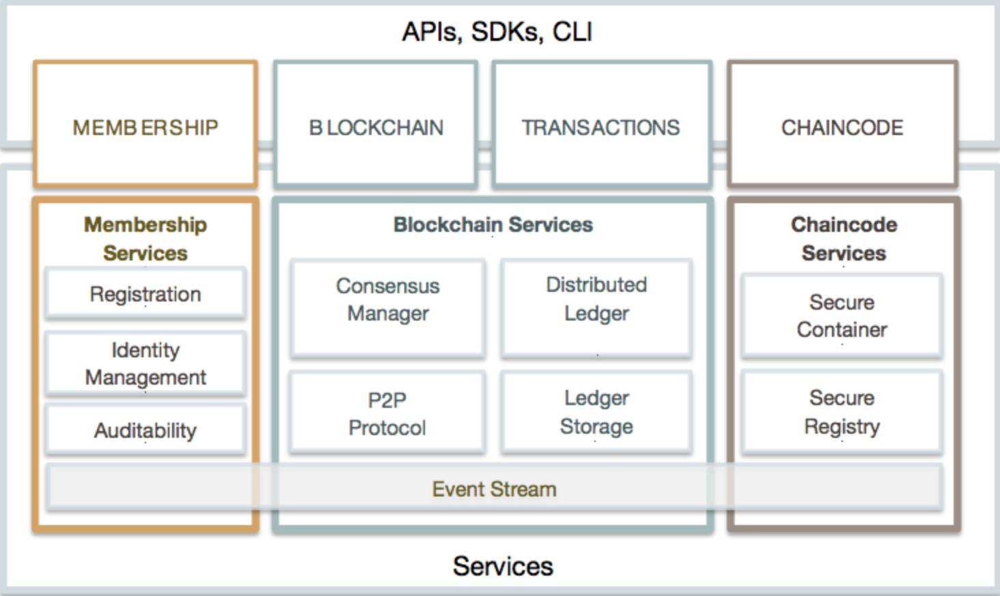
我们可以看到，它的架构上分成了：成员关系管理、区块链服务、Chaincode服务三个大模块。
成员关系管理相当于账户和权限管理系统，区块链服务提供了区块链一样的账本结构，Chaincode服务相当于智能合约。
成员关系管理是基于 PKI 的成员权限管理，平台可以对接入的节点和客户端的能力进行限制。
区块链服务提供一个分布式账本平台，多个交易被可以被打包进一个区块中，多个区块单向链接成一条区块链。区块链代表的是账本状态机发生变更的历史过程，这与公链区别不大。
Chaincode包含核心的业务处理逻辑，并对外提供接口，外部通过调用Chaincode接口来改变账本数据，在纺布克中，Chaincode是运行在隔离环境中的，也就是Docker。
纺布克的一个可能的工作模式如下图。
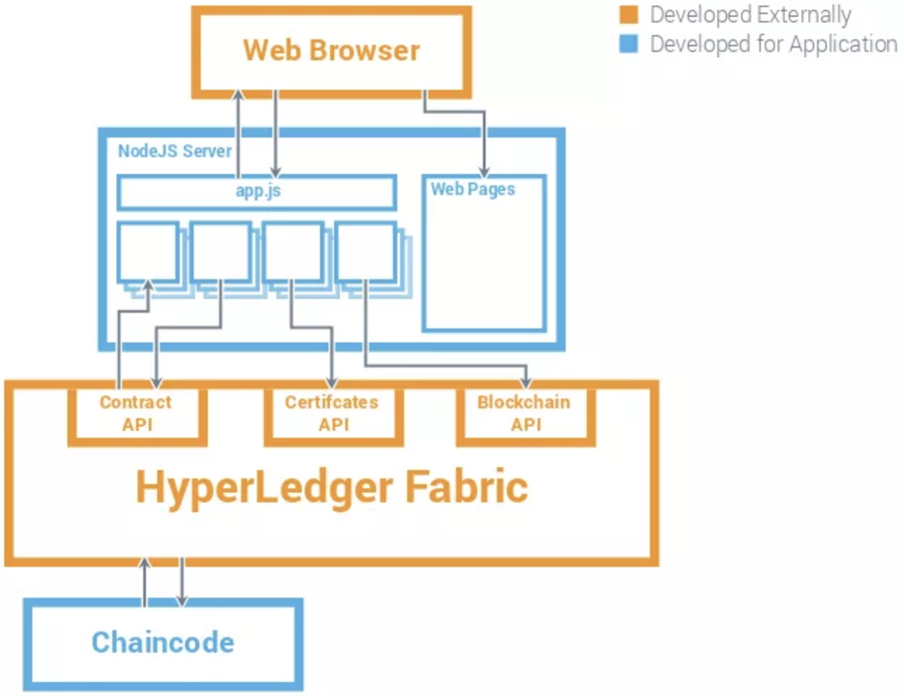
如果Chaincode运行在Docker中，我们按照经典的IT架构来分析，可以发现纺布克基本就是经典分布式系统的升级版，它可以提供宕机容错，可插拔的共识模块让用户自行选择是否需要拜占庭容错。
锯齿湖也是一个高度模块化的区块链技术框架，它基于Python语言，1.0版本之后和纺布克一样，作为一套稳定的框架，它已经有了实际的应用了。
它是第一真正意义上提供拜占庭容错共识选项的超级账本项目，有以下四个特点。
相比以上四个特点，最引人注意的其实是锯齿湖提供了一个新的共识算法，叫做PoET（Proof of Elapsed Time），它的中文译作：时间流逝证明。
如果你熟悉Raft共识算法的话，我们知道Raft算法是一类强Leader的共识算法，选举Leader的时候，每个节点自己倒计时（CountDown），最先数完的那个成为候选人。
这个过程叫做超时选举（Election Timeout)。每个节点每轮选举中得到的倒计时时间是不同的，它的代码实现为随机产生，通常是150毫秒到300毫秒。
PoET与上述规则类似，只是倒计时时间的产生变更为硬件依赖的，这里的硬件目前是由英特尔提供的SGX，Software Guard Extensions，它可以提供可信的程序执行环境。
SGX提供了一种名为Enclave的机制，它支持两个函数“CreateTimer”和“CheckTimer”。CreateTimer用于从Enclave中产生一个计时器。
CheckTimer会去校验这个计时器是不是由Enclave产生并验证是否已经过期。如果满足这两个条件就给该节点开具一个证明，这个证明可以被其他节点验证，验证通过则表示同意该节点成为记账节点。
我们看出，PoET共识算法的拜占庭容错是由SGX保证的，具有一定的硬件依赖。
锯齿湖官方提供了的四种工作模式：开发模式、PoET模式、PoET仿真模式以及Raft模式。
可以发现，锯齿湖相当于是Raft协议的变种版本，选择Raft模式使得锯齿湖可以退化成经典分布式系统。
掘地者也是一个基于以太坊EVM的智能合约执行引擎的区块链技术框架，最初项目名叫Eris，它是基于Go语言构造的。
掘地者主要由下述组件组成。
掘地者也是模块化的分布式账本技术，提供许可型的智能合约执行环境，它也基于EVM规范。除了Tendermint PBFT共识算法，没看到与纺布克的的区别。
以上几个技术框架，基本都是通用技术框架，不涉及业务概念。伊路哈是第一个关注资产创建和管理的区块链平台，通过名字我们也可以发现是一个日本公司主导的项目。
伊路哈具有如下特征。
因迪也是一个从身份出发去构建一个分布式经济系统的技术框架。
因迪具有如下的特征。
因迪与其他通用技术框架显得非常不同，对身份的研究或许会成为因迪的突破点，这点与元界的数字身份很像。
超级账本很多技术框架是可以依托云计算来帮助企业进行快速搭建的，当然IBM和微软已经开始这么干了，他们将它称之为BaaS（Blockchain As A Service)。
我们进一步思考，例如比特币提供了全球支付的功能，那么这种功能是否可以植入到云服务中呢？
答案是肯定的。对于诸多有支付需求的应用来说，自己搭建比特币节点，并且结构化区块到数据库中是非常痛苦的过程，毕竟比特币全节点提供的API有限，而我们的查询需求可能细致到交易输出和脚本签名。
所以，把比特币转化成PaaS服务也是另外一种BaaS思路。
因此，我们把原来的BaaS概念拆成了两种：
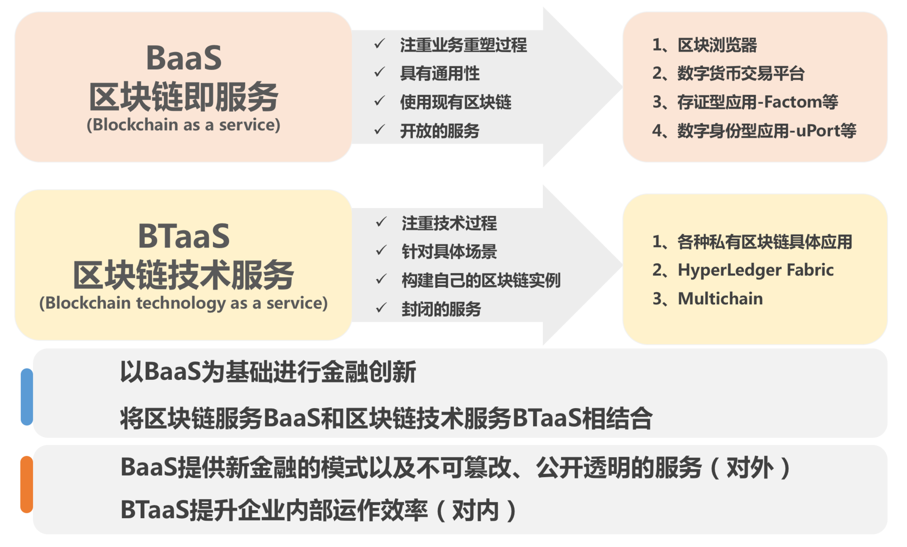
这两种概念还是有较大内涵上的差别的，我使用了上图来表达，我认为BaaS是未来区块链的发展方向，BTaaS只是作为经典方案的补充。
超级账本系列技术框架很好地诠释了分布式账本技术走到极致是什么样子的。
这里也可以看出，几乎所有的超级账本项目都是技术主导，技术的强大也让他们忽视了市场的真实需求。
联盟链是少数节点之间的活动，它往往退化成微观经济中的博弈，所以利用联盟链构建少数节点之间的协作系统不是一个技术问题，而是变成了如何构造一个稳定的微观经济模型使得协作者可以达成帕累托改进，在这里，技术变成了次要的。
再好的技术工具如果不结合有效的激励和反馈机制，那么联盟链的应用落地过程似乎变得异常艰难，它很可能最后沦落为普通的分布式系统，这个分布式系统仍然是中心化的。
这里我再提出一个问题，为什么我们不用已经成熟的技术框架，非要用联盟链技术框架呢？这就是我认为联盟链最大的困境，它是一杆加农炮，但是并没有人来告诉我们这杆加农炮可以解决什么问题。
今天我们重点介绍了超级账本旗下的五个联盟链技术框架，希望可以给你提供一些技术选型上的参考。随后我们又介绍了区块链即服务这一延伸概念，最后我向你分享了我对于联盟链的观点。
今天留给你的问题是，除了超级账本之外，还有哪些有名的联盟链技术框架呢？ 你可以给我留言，我们一起讨论。感谢你的收听，我们下次再见。
参考引用：
我们终于到了“信仰”篇。“信仰”这个词是我经常在公司调侃新员工，问他们有没有为“信仰”充值，这里的信仰指代的就是比特币。
比特币相关的技术前面一个专题已经介绍过了，再深入挖掘就是隔离见证和扩容之争了，我们今天重点介绍比特币本身的来龙去脉，感受一下这个世界的变化之大。
俗话说读史明智，我们就从比特币的历史开始聊起。比特币的历史总结起来大约有四个时期：创立前期、创立期、成长和稳定期。
在比特币创立之前，世界上已有多种类似技术产品，最早的是Ecash协议，接着Ecash又有多种数字货币产品出现，其中以亚当·贝克的“Hashcash”和戴维(Wei Dai)的“B-money”、尼克·萨博的“Bit-gold”，以及哈尔·芬尼在“Hashcash”技术上发展出来的“RPOW”等技术产品。
最后附一份由维基百科归纳的比特币价格变化以及对应的事件。
从上图可以看出，比特币的成长史就是对美元的逆袭史，比特币的发展经历了很多争议和阻碍，但是依然不妨碍它成为一种世界级现象，甚至是很多人的信仰，那么比特币的意义到哪在那里呢？
这个话题可能会引起一些争论，我姑且将本节的内容限定为“我”所理解的比特币，仅供你参考。
首先比特币没有通常意义上的实用价值，不单单是比特币，所有的信用货币，包括黄金白银在内都不具备实用价值。
这里的实用价值是指解决人的低层次需求，如果按照马斯洛需求层次理论来分，是指衣食住行等生存需求。
换句话说，比特币也好，黄金也好，在生活面前都是废物，而无法直接利用，毕竟黄金吃下去也不能饱还有生命危险，比特币的私钥即使看得见却也摸不到。
但是用货币就是能买东西，买来的东西可以帮你解决生存需求，换句话了吃饱了才能干其他事情。“买”这个动作就是比特币所要解决的，当然信用货币也能解决，也就是我们所说的支付功能。
所以作为信用货币的比较，比特币到底有什么不同？它的意义超过信用货币吗？我个人认为是超过的。老生常谈的去中心化、防篡改我这里就不谈了，我们接下来换几个角度来聊聊它。
它打破了一般信用货币的局限性，我称作无国界的共识。
比较常见的论调，比特币你信它就有价值，不信就什么用途也没有。这里隐含的语义是“承认过程”。
例如你在美国吃顿饭，使用人民币支付，美国人一定不是特别同意，毕竟在美国就必须使用美元支付。换句话来说，“承认过程”很大程度上是身不由己，你所处的国家决定了必须承认某种信用货币。
比特币奇怪就奇怪在，没有人会强迫你使用比特币，你的一念之间就可以决定比特币对于你的价值。
如果类比到黄金，比如你长这么大，一直都是别人告诉你黄金非常值钱，所以你也觉得黄金值钱，这其实就是共识灌输的过程，当然你也可以公开表示“我觉得黄金不值钱”，这当然也没什么问题。
想象一下，如果全世界都能达成比特币都可以用于支付的共识，比特币和黄金在共识的效果上也没什么不同了，那么声称“我觉得黄金不值钱”就变成了“我觉得比特币不值钱”，这里的逻辑是一样的。
比特币的本职是记账，不要想得太复杂，它就是来帮你记账的。例如你在宜家买了一套家具，比特币可以帮你记下来，当然不是说这个事件，而是帮你记录价值转移，你动用了你曾经创造的价值的多少（BTC）来购买这套家具。
这个记账过程防篡改能力非常强，几乎没人能操控，也没有国界之分，只要你的交易方承认比特币，这笔买卖就可以达成。
比特币使用的是PoW算法，这个需要消耗大量能源进行挖矿的算法一直被人诟病；但是结合上述记账本职，我们也换个角度来看看这件事。
目前全国的电力分配不均，中国的内蒙东北有着丰富的风力电，可惜这些富余的电力难以调度，超高压输电线路造价高昂，甚至超出了电厂本身。
而比特币挖矿恰好需要极大地耗费能源，如果在偏远的资源丰富地区进行挖矿，相当于将架设超高压输电线路蜕化为网络通信设施，地方政府可以把庞大的风电资源转化成比特币，最多只需要十分钟，就可以在资本市场变现。所以每个人每次使用比特币的过程，相当于让偏远地区获得了平等参与社会运作的过程。
这里讨论的三权分立的形态，并不是指政府组织结构的形式，而是指矿工、开发者、投资者三者组成了相互制衡的数字货币的治理形态。
比特币并没有真正意义上完全地去中心化，在记账权上，它目前被5大矿池所把持。当人们抨击EOS的21个节点有中心化的嫌疑时，BM总是拿出比特币矿池的例子来反击。
实际上这里偷换了概念，比特币中矿工的权力其实是有限的。
总结起来就是，虽然比特币在记账权上没有彻底去中心化，但是目前的情况也可以接受，至少矿工还受两方制约，矿工看收益，收益的价格看投资者，投资者看比特币长期发展，比特币长期发展看开发者，开发者受制于矿工，三者相互制衡。
比特币BIP（Bitcoin Impovement Proposals)是一种设计文档，用来描述比特币新特性的提案，第一个比特币BIP是2011年8月19号一个名为Amir Taaki的人提交的，编号bip001，它描述了BIP本身是什么。
随后几年直到现在，比特币的BIP编号将近200个，它展示了比特币强大的社区协作能力。
很多人认为某个区块链项目一旦上线这个链就稳了，实际上，做公链好比一场没有尽头的马拉松长跑，主网上线表示长跑开始，接下来才是真正拼实力的时候。
具体怎么拼？则要看IP（Improvement Proposal）。可以说IP代表了一个区块链项目的生命力。例如HD账户是bip32和bip39提出的，最开始的比特币是没有这个功能的，隔离见证也是由一系列bip组成的。
我们再比如说，就算是你想修改比特币的2100万上限也是可以的，只要你提的BIP详细论证了改上限的必要性以及充分验证了达成条件，如果最终社区同意了你的提案，2100万上限改成3000万个也不是梦，一切都是可以操作的。
这就回到了社区自治的特性上了，你承认并持有比特币，那么你就可以参与决策比特币的发展。
好了，今天我们简要回顾了比特币的历史和货币形态，最后还介绍了BIP，为下一篇介绍扩容之争做准备。
其实比特币作为整个数字货币的标杆和领头，对区块链生态和未来有不可忽视的力量。虽然现在号称区块链2.0、区块链3.0的项目很多，但是真正意义上达到了工业级水准的，还是只有比特币。
无独有偶，我有一次在外面帮投资机构评估一个区块链项目，我也提到了信仰，项目方不约而同地表示持有，不过，他们的信仰是以太坊，所以今天的问题是，你觉得以太坊以后会取代比特币的地位吗？你可以给我留言，我们一起讨论。
感谢你的收听，我们下期再见。
参考链接：
上一篇我们介绍了比特币的历史和比特币的特性，顺便提到了比特币的扩容之争。
今天，我就来讲讲比特币扩容之争的来龙去脉，并且透过比特币的扩容之争，我们可以聊一聊其背后的区块链链上治理问题。
扩容之争是比特币历史上影响较大的事件，它也是比特币社区治理的经典案例。扩容之争的背后其实是社区治理的难题：如何让社区达成一致。
扩容的需求是由于比特币的使用人数逐渐增长，于是比特币的网络也日益拥堵。关于如何解决这种网络拥堵的问题，比特币社区出现了两种不同的解决方案。
社区就上述的两种方案产生了不同的分歧（分叉），从而产生了极端扩容派和隔离见证两个派别，派别之间谁也不服谁，对峙十分激烈。
于是又出现了一些人开始试图调停双方的矛盾，希望社区不要分歧，可以达成一致。这一类人群就构成了第三个派别：调停和解派系。
至此，社区中形成了极端扩容派、调停和解派、隔离见证派三个派别，他们开启了漫长的拉锯战，中间也有达成过短暂的三次共识（92共识、香港共识、纽约共识），调停和解也一度将极端扩容的上限从20降到8M，甚至是2M。但是，一切的努力，还是不了了之。
社区分歧仍然逐渐加大，最后比特币产生了硬分叉。一条链变成了两条。极端扩容派在比特币主链上硬分叉出一条没有隔离见证的链，分叉之后的币就是比特现金（ BitcoinCash），缩写BCH，而隔离见证则成了现在我们看见的比特币。至此，扩容斗争进入双链对抗的时代。
关于扩容之争详细的来龙去脉。如果感兴趣的话，你可以查阅相关资料，一探究竟。
扩容之争基本在2017年11月结束，比特币硬分叉出比特币现金已经成了定局。比特币现金的出现还带来了一件新事物，就是IFO——Initial Fork Offering，也就是分叉比特币形成新的数字代币，这其实就是ICO的替代品。
这里要提一句，2017年9月4号七部委发文明令禁止ICO，所有和人民币挂钩的交易所都必须限期关闭。
“一刀切”政策让ICO在国内基本死掉了，于是国内的人坐不住了，就纷纷开始寻觅替代品。比特币的分叉带来了全新的灵感，于是IFO应运而生。
怎么理解呢？我们之前讲过ICO，这里来回顾一下，ICO的中文名是首次代币发行，又称为区块链众筹，这是一种新型的融资模式，投资者可以用手中的比特币或其他代币投到其他的区块链创始项目。
ICO从本质上来说就是一纸白皮书，接下来全靠吹，忽悠散户投币，“我要出一个新的代币了，你们快来买吧。”
而IFO的集资依靠的是与比特币的关联，“我要出一个代币了，这个代币是由比特币分叉出来的哦，你们快来买吧！”靠着与比特币的连带性，IFO打了一记集资的擦边球。
所以国内诸多项目方和经验资深的投资方一拍即合，搞IFO吧。但是IFO比ICO限定在只能从比特币上分叉，所以技术的发挥仍然有限。
一时间，除了比特现金，一共出现了9个比特币分叉项目，发行总量都是2100万，区别在于附加功能，例如区块时间调整、区块大小调整、是否有隔离见证、未来会加哪些功能等。
它们分别是下面这些项目，收录可能不全，你了解即可。
链上治理指的是人们直接在区块链发起社区提案，并进行决策的过程。
这里首先要求的是链上支持基本治理协议，这套协议可以规定或强制执行提案，链上治理直接决定了区块链本身的发展方向。链上治理的参与方包括了投资者、使用者、开发者、矿工四类人群。
链上治理与链下治理的区别在于，区块链本身是否提供强制执行的机制让少数服从多数。
在链上治理协议中，参与者需要可以通过投票参与治理，而链下治理中，多数通过提案、社区见面开会等多种线下线上互动方式，让整个社区达成一致，扩容之争中的三次共识就是典型的链下治理。
虽然比特币没有提供完整的链上治理机制，但是比特币也支持简单的投票机制，例如在区块中写入共识信息表示支持某项提案，例如矿工可以在区块中填写NYA表示支持纽约共识。
但这一切都是基于比特币的BIP，首先得有BIP，才能发起投票。BIP的组织架构比较社区化，主要由Github上的一些开发者和核心社区成员组成。
矿工的所有行为也是非强制性的，当真正发生主网升级时，矿工仍可以选择不升级，这将带来分叉，也是所有人都不愿看到的。
以太坊上提供了对Gas消耗的上限参数——Gas limit，矿工通过投票选择增加或减少Gas limit，Gas limit决定了单个区块上可以处理的智能合约数量，但这仅针对这一项细分功能，并不能决定整个区块链的发展。
实际上，以太坊的发展受Vatalik本身影响比较大，核心成员和早期资本的推动是以太坊治理的主要源动力。
我们在前面的文章介绍过EOS区块链链上治理结构——区块链宪法。实际上宪法也没有强制约束力，但是它成为了一种社区强制约束力，类似宣誓过程。
EOS和比特股的治理结构来自于DPoS算法提供的投票过程，投票是根据币的数量作为权重的，使用者、投资者、开发者、矿工这四种角色中，其中把矿工和投资者进行了合并，受资本的要挟，风险比较大。
以上治理结构，我们把比特币和以太坊归为一类，这类倾向于链下治理，EOS和比特股倾向于链上治理。
无论链上治理还是链下治理方式都存在一些问题。
链下治理相比链上治理，更接近我们现实社会的方式。链上治理不是一个设计问题，它是社区制度问题，“如何让区块链更好地发展”相比“区块链项目应当设定什么样的发展目标”，是排在第二位的。
社区在自身追求目标的过程中，会自发地找到最佳治理结构，人为设计可能会有诸多漏洞和缺陷，也限制了可开发性。
例如链上治理至少存在以下几个问题。
1.公地悲剧
当所有人都觉得别人会投票的时候，也就没有人投票了，这个典型案例是英国脱欧公投。区块链上进行链上投票可能也会遇到类似的问题。
2.女巫攻击
目前区块链很难映射现实中人的身份，如果按照身份去投，大户是可以扮演多个伪造身份进行投票的，在产生区块链数字身份之前，链上治理只能依托于币的数量进行权重投票。这便造成一个代币一票，持币多的选民有更大的话语权。
3.贿选
这其实是女巫攻击的延伸，链上治理节点可以承诺将获得的收益与其他节点进行分享，这种拉票方式其实就是贿选，如果恶意节点可以通过贿赂成为记账节点，进而左右区块链的升级过程，后果非常可怕。
目前创始团队进行控制式治理是最常见的，在社区强大后，创始团队再退出，让社区自己运作，是比较典型的“中本聪模式”。
链上治理其实是一个很热门的话题，它关注的是区块链自身的发展，很可能会是区块链的一个重要研究方法，但是这并不是技术所能解决的，所以并不太乐观。
今天带你了解了什么比特币的扩容之争，又从扩容之争谈到了区块链治理，区块链治理没有明确的最优方案，本篇更多地是带你了解了区块链行业的现状，希望能带给你一些新的思考。
好了，本期的问题是，区块链最终会发展出有效的链上治理结构，来保证所有人的权益吗？你可以给我留言，我们一起讨论。感谢你的收听，我们下期再见。
我们前面重点介绍了比特币，并通过比特币阐述了数字货币的逻辑和发展现状。比特币区块链带来了数字货币，那么区块链还会为我们带来什么呢？今天，我们就来看看这个内容。
需要提前说明的是，本文大部分阐述的是我的个人思考和预测，而不是行业已经发生的事实，仅供你参考。
据统计，截止2018年3月，全球数字货币共计1500多种，总市值超3200亿美元。然而市值分布占比不够分散，单比特币就占了一半市值，剩下以太坊、瑞波币、比特币现金等数字货币占了另外一半。
大致来分，目前区块链首先在金融领域发力，其次在信息通讯、底层基础设施、教育、能源、医疗等行业应用地比较广泛。
从占比来看，金融和信息通讯类占比最高，占所有区块链项目类型接近七成。
其中中国发起的项目偏好金融，金融类区块链项目接近一半，而从全球来看，金融类项目占比不到四成。这点也可以从我前面的文章得到佐证。区块链在各行业的快速发展，带来了全新的机遇。
数字货币是数字资产的清算底层，数字资产的经济活动依赖数字货币。
数字货币一般只能是公链项目，数字资产依靠公链生态提供，这种支撑型结构决定了数字货币的种类不会很多，而数字资产会非常多。
目前数量繁多的数字货币最终会消亡一大半，只剩下几个生态丰富的数字货币，通过这几个数字货币来支持数量繁多的数字资产，而这些公链会通过一些大型的中心化交易平台完成互通互兑，小型的交易平台多为垂直类的数字资产服务。
比特币本身是最成功的数字货币项目，同时也是最成功的区块链项目。
比特币的应用生态主要集中在全球无国界支付结算上，由于比特币本身是一种原生资产，它没有与任何其他资产锚定，所以比特币的应用生态取决于人们的共识，这点比特币已经做到了。
只要比特币的社区不发生大的动乱，那么比特币的地位是很难超越的，尽管有诸多崭新的区块链技术冒出来，如提升共识效率、提升网络容量等等。
但是比特币的共识经过了近十年的历史开创，形成成熟稳定的生态结构，这一点在技术上是无法取代的。
所以比特币依然会作为互联网领域的第一支付手段，并且延伸到线下场合。
除了比特币还有Tether和bitCNY等锚定型数字货币，这些数字货币最大的特性是与法币锚定。其实也可以与实体资产锚定，只不过我们还没有走到那一步。
综上，我们可以总结出两大类数字货币：原生数字货币和锚定型数字货币。
原生型数字货币具有如下特点：
锚定型数字货币具有如下特点：
那么根据数字货币的划分方法，我们也可以将数字资产划分为原生数字资产和资产数字化的资产。
数字资产目前已经展现出非常强大的生命力，最终数字资产会像互联网应用一样席卷全球，数字资产交易所也会像春笋一样冒出。
借此时机，我对数字资产进行一个分类，数字资产所产生的金融我们称为数字金融，国内又称为通证和通证经济，涵义上差不多。
Token是数字资产最直接的表现形式，Token的生态结构具有自发和原生性，大致可以分成这几种类型。一种是基础设施型生态，一种是金融型生态，还有一种是商业垂直应用生态，这三种生态都非常有潜力。
基础设施一般就是指公链的权益代币，很多公链都在做这个领域的研究，当然这也是最迫切需要被突破的，有了成熟的基础设施，区块链应用才得以广泛普及。
这类的Token的典型是以太坊上的以太币Ether，除了以太坊，还有EOS、NEO等，可以说能够支持发行Token的公链都具有较高的潜在价值，它们目前处于军阀混战时期，后期是垂直细分还是一统江山很难判断。
另外基础设施型Token本身也具备数字货币的功能。
这类Token的典型是Tether、bitCNY等锚定型数字货币，以及交易平台的Token，例如火币的HT、OKEX的OKB和币安的BNB。
这类Token的典型特点是在为原生数字资产创造流动性，它是数字金融发展的必然结果。
金融型Token有点接近证券，只能在流动性高的地方产生，例如数字资产交易所、承兑平台。
这一类Token具有非常大的商业潜力，释放的能量也是最大的，这里当然不是指单个Token，而是某个商业生态形成的一类Token。
例如游戏直播平台可以打通形成一类Token，文化产权也可以打通形成一类Token。这类Token是非常好的连接器，连接局部商业，在行业内部形成流动市场。
这类Token探索的人不少，例如游戏链、明星链此类，由于自己单干一个链太过垂直，会面临被以太坊收割的风险，所以在前面两个类型的Token成熟之前，这类Token并不会大规模流行。
同时，这类Token的设计者，也面临了两个挑战。
首先从业者需要理解区块链，理解区块链不单指理解区块链的技术原理，而是区块链本身蕴含的思维，这里的思维我归纳为两类，第一类是开放的产品形态，第二类是社区共同治理。
其次从业者容易拘泥于传统互联网时代的商业模式，例如做内容或做流量的App，表现方式无非广告和会员，思维很难跳出来。
要知道，未来商业垂直型的Token几乎肯定都是原生数字资产，所以按照阿里或者腾讯的模式可能找不到区块链的方向，这类Token的未来一定是新的阿里和腾讯。
我预测这类Token会极大地改变互联网产品的运营模式，Token模式下的产品运营会拉近用户与运营商的距离，他们不再是对立关系，而是区块链式的共生社区自治的关系，区块链的治理模式也会影响产品的运营模式。
最后我们总结一下，以上三类Token依赖关系是：
Token的流动性大小依次是：
基础设施型Token > 金融型Token > 商业垂直生态型Token
Token的种类数量分布依次是：
商业垂直生态型Token > 金融型Token > 基础设施型Token
上面我们从宏观角度对Token进行了分类，当然也可以从Token本身的属性进行分类。
这里可以引用我专栏第5讲“区块链与数字货币”那一篇，我们提到了虚拟货币的三种类型：游戏代币类、积分类、数字货币类，这里的分类方法主要是按照是否与实体经济发生联系。
那么Token从这个角度来看，只有两类。
很多人表示区块链是改变人类生产关系的一次革命，这点我表示认同。
例如以太坊，你拥有以太币，意味着你拥有这个系统的使用权，你需要通过以太币这个交易媒介才能跟别人进行交换目标资产。
这时以太币就有了货币属性，以太坊通过DApp构造了原生数字资产，例如以太猫，人们可以使用以太币购买以太猫。
原生数字资产、资产数字化的资产都可以通过以太币获得时，那么就意味着以太币改变了人类的生产关系，这当中并没有涉及任何法币兑换。
所以说，价值型的Token，一定会触及改变了原有的生产关系。就如一个人刚接触股权概念的时候，很难解释清楚股权对应什么，Token也是类似的处境，Token具有可编程属性，它可以带来多种属性合一。
Token的实现已经有ERC20为主的以太坊生态、比特股SmartCoin生态、NEO的NEP-5生态、量子链的QRC20生态，还有元界的MST生态。
从技术上来看，Token一定要满足高并发，快速清结算的需求，目前区块链的性能是一个问题，不少项目都在研究。
从技术发展来看，以太坊等智能合约型区块链一定会发展出类似”Import ERC20”的合约机制来满足市场的需求，而由于比特股SmartCoin和元界的内置智能合约型的技术框架取决于市场对技术配套设施的敏感程度，安全程度的提升也带来应用的局限性。
可以看出，智能合约是Token的必备手段，可编程也必须降级为简单的导入合约模块的形式。
好了，今天我们重点介绍了数字资产，并且根据我的个人经验，分享给你一些我的观点，我还介绍了数字资产Token的分类。随着监管趋严，市场回归理性，Token的价值也会随着生态成长而逐步被人们发现，良币会驱逐劣币是必然的。
今天的问题是，Token会是区块链经济生态终局吗？你可以给我留言，我们一起讨论。
感谢你的收听，我们下期再见。
在前面的文章中，我向你介绍了数字货币交易平台如何操作。
可以这么说，如果没有数字货币交易所，就没有今天繁荣的数字货币市场，区块链技术也不会这样被广为人知。
先来说说交易模式，交易模式分为两种：场内交易和场外交易。
本文介绍的交易所主要是第一种交易模式，即场内交易模式。
区块链领域的交易所与传统金融的结构十分相似，但也存在了一些区别，为了讲清楚这种区别，我先简述一下证券交易的结构。
传统一般有四种角色，分别是投资者，在国内大部分是散户，其次是证券公司，接着是交易场所，这里的交易场所仅指场内交易场所，最后是证监会。它们的关系如下图。
通常投资者在证券公司开户，然后投资者委托证券公司下单，证券公司接受投资者下单并收取一定的佣金，然后买卖单由证券公司在交易场所进行交易，这个过程叫做委托，投资者是委托者，证券公司是受托者。
换句话说，普通投资者是无法直接接触交易所的，这是因为交易所采取会员制，只有成为交易所的会员且有交易席位，才可以接收其他投资者的委托，所以这就限定了机构投资者，也就是证券公司了。
而这里交易所是非盈利性的事业法人，它接受国家证券主管机关证券委员会及证监会的领导、管理和监督。证券交易所本身并不参与证券交易，不能决定证券价格。
所以对于投资者来说，只和证券公司有直接联系，这里的流程可以简述为：
数字货币交易平台也叫做数字资产交易平台，主要为人们提供交易数字货币或数字资产撮合交易服务。
这种交易市场是一种典型的买单、卖单交易市场，所以这些平台以场内交易为主，通过提供买单卖单的撮合服务然后赚取手续费，这个过程中也发展出了层次丰富的金融工具，例如杠杆交易。
人们提供了买、卖交易数字资产的过程，这个过程是一种数字货币交换到另外一种数字货币的过程。
这种交易市场通常是数字货币对数字货币的，当然这显然不够，所以这就催生了法币对数字货币的交易，这也是中心化交易平台的由来，目前流行的法币与数字货币的交易有美元、欧元、日元、澳元等。
目前市场上，中心化的交易平台占据了绝大部分。从功能上来看，中心化交易所一般都会提供以下业务模块：充提数字货币、资产托管、交易撮合、资产结算、杠杆交易、KYC等。
上面我们介绍过传统交易平台的结构，借此我们也可以归纳比较出数字货币平台的与传统交易平台的优劣势。
传统交易所依赖券商，属于金字塔型结构，用户聚集在券商处，资金托管在银行，证券登记结算在第三方机构，本质上交易场所只提供了撮合、监管辅助、信息辅助等功能。
而由于数字货币的去中心化特性，数字货币交易平台属于扁平型结构，资产管理本身就内置在交易所内部。
所以任何一个交易平台都不需要第三方机构登记结算数字货币，这带来了业务架构上的易部署特性，用户流量和资金流量最终全部汇聚在数字货币交易所。
如果我们从这些业务模块出发，结合技术架构来看，中心化的数字货币交易平台更接近互联网应用的技术架构，它本质上是金融交易系统与互联网网络服务相结合，具有以下优势特性：
虽然利润和流量都超大，但中心化交易平台也面临了一些天花板，例如动不动就被爆出被黑事件，这也着实让用户提心吊胆，所以我归纳了一些如下缺点：
总的来说，数字货币交易所目前是区块链与现实的接触面最大的接触点，也是数字金融中的最重要一环。
其实在数字货币交易领域，交易平台是不必局限在中心化这一种实现方案的，这由于交易所也是由很多业务模块组成的，它是把某些模块进行去中心化，而不是整体去中心化，所以实际上它可以有三种实现类型。
模式二和模式三我们统称为去中心化交易所，目前是区块链数字资产领域研究的一个前沿方向，多数方案都还不成熟，例如用户产品体验差、稳定性不足、数字货币流动性不足等等，当然更多还处于研发阶段。
虽然去中心化交易所是一个很好的方向，但可能会脱离掉用户的真实需求，正如我前面谈论“去中心化”这个概念所说，终端用户也许根本不关心平台是否是去中心化的。在这里，用户的主要诉求体现在下面几点：
以上四点，目前模式一的交易平台的体验完胜模式二和模式三，这也是中心化交易平台流行的主要原因。
数字资产交易平台一方面是互联网技术与区块链结合的典型案例，另一方面也是数字金融生态最重要的一环，区别于传统金融的券商结构，交易所本身的资产托管结构，让数字金融具备天然的流动性，这是传统金融体系所不具有的特性。
本篇给你介绍数字货币交易所，也是希望你了解交易所在数字金融中的地位，同时为你打开思路。好了，今天留给你的问题是，监管会会接纳数字货币交易所这种形式的交易体系吗？你可以给我留言，我们一起讨论。感谢你的收听，我们下期再见。
在上一篇文章中，我们介绍了数字货币交易平台的概念，那么今天我们就来重点聊聊数字货币交易平台的技术。如果你有过设计或实现传统金融交易系统的经验，那么你阅读本篇就会更加容易。
由于中心化交易所是主流应用，所以今天我主要介绍的是中心化模式下的数字货币交易平台。
数字货币交易平台的技术基本沿用了金融交易技术中的系统架构，只是把原来针对法币和证券（或平台代币）的部分，也就是我们通常称作资金管理系统的部分，完全替换为针对数字货币的数字货币管理系统，换句话说，就是换了一套内部账本。
然而我们知道，区块链本身也是用来记账的，也算作一种金融账本，所以一套内部账本，一套区块链本身的账本，这里就出现了两套账本，如何管理这两套账本，就是资金管理系统的首要任务。
如下图所示。由于中文语境下的交易有多重含义，本篇会用英文单词标注，以示区别。
(图示 数字货币交易所)
解释一下这张图，图的左边表示了多个区块链账本，右边的数字货币交易所有自己的内部账本，这两套账本是独立的。
交易所内部的账本记录的是交易Trade，这个交易是由用户挂单，接着被撮合引擎撮合成交而产生的，而区块链账本上的交易Transaction，是当且仅当用户发起充币提币请求并被执行时，才会产生的。
这两种交易都用了中文“交易”来表示，但是它们所属的语境不同，前者的交易表示的是金融交易语境下的资产交换，也就是Deal；后者表示的是区块链上的技术概念，表示资产转移的一次记账过程，上述特意用英文以表区别，希望你能够区分。
一个数字货币交易所的后端其实至少有四部分构成：Web业务逻辑系统、交易撮合系统、运营后台管理系统、资金管理系统。资金管理系统其实就是刚才说到的内部账本。
Web业务系统与我们常见的电商系统无异，主要是用户账户以及简单的业务逻辑，重点是可扩展性，业务要求比较弹性。
交易撮合系统本质上是一个高并发的计算系统，特点是系统性能高和稳定性好，其中订单队列可以是编程语言中的数据容器，也可以是内存数据库。
运营后台系统在整个交易所生命周期的早期并不凸显重要性，但是运营后台系统恰恰是交易所中后期发展的核心系统，重点在数据准确，要求网络安全性高和可扩展性好。
资金管理系统包含用户持仓状态，以及数字货币钱包服务，它是一个交易平台中安全性要求最高的系统，资金管理系统往往要搭配一个内存数据库，其中数字货币钱包服务也可以拆出来做成独立子系统，甚至可以改造成整个公司的内部区块浏览器，因为钱包服务需要设计成多个钱包实例，并统一所有的币种钱包接口。
一个交易所可能的结构如下图。
上图中，MatchingGroup相当于是交易撮合系统；Web-Group相当于Web业务逻辑系统；Back-office相当于后台管理系统；AssetsManagement相当于是资金管理系统。
如果我们再将刚才提到的各个模块细分，会看到以下的功能。
（图片来自网络）
按照上图的细分功能，我们可以得到哪些技术支持一目了然。
首先是Server需要数据库作为支撑，其次是Restful API作为基础通讯协议，并且集成钱包相关的技术，撮合引擎为Sever提供撮合服务。
在这里面，例如需要SMS系统，所以可以使用云服务中的SMS组件，这些都可以是成熟的通用组件技术。我们可以发现中心化交易使用的技术与互联网技术并无不同。
把这些通用组件塞到下图中各个层次和大模块当中，所以最终一个交易所的详细架构可能是下图的样子。
（图片来自网络，缺失了资金管理部分）
我们来解释一下这张图。
首先是存储，持久存储通常可以选择MySQL，撮合相关的模块由于要避免接触磁盘IO，所以需要为撮合模块提供Redis类型的内存存储，二者需要保证最终一致性。
撮合和行情部分，几乎与传统技术无异，行情推送可以类比到其他推送系统，只是频率更高，一般首选Websocket技术。
这与传统互联网应用的最大区别里主要是数字货币钱包管理，这块完全是新的内容，对安全性、易用性提出了相当高难度的挑战，这里也是交易所资金托管的根本，所以如何管理好大量数字货币，往往要结合运营、内部管理制度、冷热钱包技术一起才能做好交易所的资金管理。
那么用户是如何挂单的，又是如何产生区块链交易的呢？我们来看一看。
##交易过程
那么说，用户A拿0.01BTC 换取了B的10个ETP 的过程究竟是什么样的呢，我来举一个例子。
用户A挂10ETP买单，出价0.01BTC经过Web业务系统进入撮合系统订单簿ETP-BTC买单队列，等待撮合成交，同时资金管理系统冻结0.01BTC。
用户B挂10ETP卖单，出价0.01BTC经过Web业务系统进入撮合系统订单簿ETP-BTC卖单队列，与步骤1中A的订单撮合匹配成功，生成Trade，同时资金管理系统结算对应资产，B的资产变化为增加0.01BTC并减少10ETP， A增加10ETP并减少0.01BTC。
成交Trade以及资产变化通过资金管理系统写RDB数据库，形成成交记录，同时更新行情，数据库记录可供用户和运营后台管理系统查询。 要注意的是这一步并不是登记到区块链上。
用户B经过Web业务系统发起提币请求，请求提取10ETP进入自己的数字货币钱包，这个请求进入资金管理系统，交易所运营人员可通过运营后台观察到这笔请求，运营人员审核用户B的信息，比如实名认证是否正常等。
提币请求进入运营系统后，如果通过审核，则资金管理系统会冻结用户B的10ETP，同时将提币请求发起给数字货币钱包服务系统，也就是WalletGroup，子系统发起区块链上的交易x（Transaction）,等待交易被打包，并根据更新提币审核状态，供用户查看。
数字货币钱包服务根据区块信息查询交易x是否被打包，如果已经打包，则资金管理系统将完全把用户B被冻结的10ETP直接抹成0，更新提币状态最终为完成，提供区块交易ID以供用户和运营后台系统进行查询。
在步骤3中，我们可以看到用户所持有的资产，相当于是交易所对用户的负债，但这也只是数据库中的一个数字，并不是真正的链上资产。
在步骤6中，我们看到区块链上的“交易”与步骤3中的“交易”完全不是一个概念，同时用户的资产是否安全，完全取决于交易平台的技术是否安全，对交易所是否信任。
再来看看充值阶段。
简单来说，充值是与提币相反的过程，不同的是，充值不需要审核，一般数字货币交易所的原则都是“宽进严出”，在充值过程中，交易平台通常不直接使用数字货币钱包检测用户是否充值到账，而是使用“扫块”(block_scan)这一方法检测用户的充值。
今天我简单介绍了数字货币交易所的业务逻辑，相信你已经对数字货币交易所有了一个初步的了解，数字货币交易所是区块链行业最重要的业务，全世界每个月都有新的数字货币交易所诞生。
今天我只讲了中心化的数字货币交易所，而去中心化的交易所，除去资金管理系统，基本业务逻辑是不变的。所以今天的问题是，去中心化交易系统应该如何设计呢，主要会遇到哪些挑战？欢迎留言，我们一起讨论。
前面的一系列的文章，我们一起从区块链技术聊到了数字货币，接下来又讲到了数字资产的话题，相信你应该对区块链应该有了一些了解。接下来，我们将要进入一个全新的专题，来聊聊区块链可以与互联网发生什么反应。
今天我要讲的是数字身份，为什么要聊身份这个概念呢？
这也是从比特币身上获得的启发，比特币上不存在无主的资产，也就说任意的资产必然归属到一个地址上。所以我们就在思考，是否可以更进一步，这种联系是否可以不仅限于地址，而是可以扩大到人的身上。
数字身份是一个依托互联网产生的概念，那么在谈论数字身份之前，我觉得有必要先和你达成一下“身份”这个概念的共识。
如果说比特币记账记录的是资产的转移，那么对应到身份上，也可以抽象出类似的概念。
想象一下，“你的出生”这一事件是被谁所记录，“你昨天发的朋友圈”都在被谁所记录？
这么一来，身份的概念几乎也呼之欲出，身份是指有关你发生的一切客观历史的事件集合。
例如，你的身份证上简要记录了有关你的客观事实：你的出生日期、民族、户籍所在地，为了证明这些信息属实，所以国家给了这么一个证件，为此还戳上了一个唯一编号，也就是你的身份证号。
但我们要弄清楚的是，身份证并不是你的身份，只是你的凭证，你真正的身份托管在政府机构、银行、医院、社交平台的数据库中，换句话说，有关你的重要客观历史事件记录被这些机构所记录下来，这些记录组成了独一无二的你，使得你变得具有一定的辨识度。
你的身份记录也分为了两种，一种是资产和消费记录，另外一种是社交记录。支付宝做了前者，微信做了后者，这两者都是中心化的设施。
关于身份的难题古往今来一直有之，上至皇帝大臣，下至教书先生普通老百姓，如何证明自己的身份一直是一个难题。
从历史上来看，主要经历了三个阶段。
这个很好理解，就是自己给自己颁发一个刻章，这个章由于带有私人标记，一般独此一份，很难被人模仿，例如玉玺、虎符等，这些就是为了表达身份的概念。
但是这个概念特别弱，因为古代生产力低下，无法大量记录客观事件，才把所有事件集合归并退化成一个小小的章。这也是不得已而为之，所以在古代谈不上准确的可定义身份概念，但是，现代的身份却也都是基于这种逻辑下产生的，例如我接下来要讲的卡片型身份。
随着技术发展，卡片的流行发展了身份的概念，这里的典型就是名片、护照、身份证、驾照等等。
但这些卡片背后记录的依然是割裂的身份片段，例如医院就诊记录归医院所有，出入境记录归出入境管理局所有，商场消费记录归商场所有，这些记录都是割裂的。
如果出入境管理要你出具商场的消费记录，显然就变成了你的跑腿工作，这就是你的身份片段割裂所引起的。
不过这种情况在国内稍有改善，这得益于身份实名制的强制实施，身份证编号是被所有系统统一的唯一索引，通过打通身份后台系统，可以共享一些基本信息。
卡片型身份也在自我迭代，目前多数都被做成了芯片卡的样式，里面集成了一些基本的终端验证信息，所以可以提供电子化身份。
这个阶段就有了一些真正意义上的身份概念了。
你的出生地、户籍、微信朋友圈的记录、授权过的App、消费记录、挂号就医记录，通过微信或支付宝可以将以往的身份片段串联起来，形成一个可定义你的唯一身份。
举个典型例子，微信和支付宝可以满足大多数场合的身份证明的要求，例如医院就诊使用微信预约，医院需要知道你登记的信息是否准确，所以可以通过微信授权。支付宝也是如此，芝麻信用甚至可以提供身份声誉的概念了。
这两者的最终一步只需要打通和政府机构的身份数据管理，那么互联网身份有了这份加持以后就可以变成身份的完全体了。
在中国的任意区域的绝大部分场景，出示微信或支付宝来证明身份似乎不再遥远。
总结来说，我们正处于卡片型和信息化身份混用的阶段，我们在日常交流中需要的身份证件，例如护照、驾照、社会保险卡、商品序列号等，基本都是由国家或第三方机构颁发的，虽然这可能是模拟现实世界运作的首要方法，但这种方式也逐渐凸显了许多问题。
如果国家撤销其证书，个人可能会失去他们的身份，身份应当是与生俱来的概念，国家可以选择承认与否，但不应该存在黑户这样的人群。
某个中心机构签发的身份证明，往往不能被其他机构所接受。
集中控制的身份管理，只能在一个辖区或一个在线服务内有效。
随着区块链的出现，身份证明的瓶颈逐渐缓解，就像使用比特币并不需要申请账户一样，它也创造了重新定义身份的崭新机遇。
互联网本身其实是围绕着机器建立的，而不是人类，换句话说，互联网虽然提供了信息高速公路，但是并没有提供中立、开放、统一的身份层。
于是，我们在互联网里，无法知道谁究竟是谁，它帮助谁连接了谁。当然，这在互联网早期是一件好事，它们并不能从我们身上窃取太多数据。
但是现在随着互联网应用程序变得越来越丰富多样，场景也十分复杂，典型的就是电子商务和社交媒体的普及。
W3C以及一些标准化组织，提供了一些互联网身份的标准。这些标准的初衷是为了更好地服务互联网应用，但是这些标准被实施的过程中，仍然凸显了很多问题，例如前段时间Facebook 8000多万账户数据滥用事件。
面对这些问题，我们这里总结了互联网身份问题以下的几个点。
概括起来主要是三个方面：非用户自主的身份、身份数据安全与隐私问题、身份数据所有权问题。
以上这些问题，例如W3C、Sorvin基金会和OpenID基金会正在寻求一些去中心化的数字身份方案，微软也在关注如何利用区块链构建去中心化的区块链身份，这也是区块链数字身份研究的前沿。
如果想做区块链数字身份，我认为，这里必须涵盖身份的两大核心功能：验证和授权。
有关授权的内容，区块链天生就可以做授权，基于密码学的账户体系可以很好地控制数据自主，也会强制性地让运营商把身份控制权还给用户，并且，一切的关键数据都可以被登记下来。
这似乎迎合了我们一开始对身份的定义，记录客观事件的集合，并且，数据的集合可以被登记到区块链上。
另外，区块链数字身份还有个天然的优势是，可以无缝与区块链数字资产进行连接，把以往割裂的信息化身份和金融身份打通，这也是支付宝一直没有做到的。
换句话说，区块链的数字身份系统，它自带了去中心化用户自主的身份、并且可以与用户的资产进行连接，这些都是以往没有做到的内容。
当然，机遇越大，挑战也越大。这里，我也总结了一下区块链数字身份面临的三个挑战。
在光明与挑战兼具的路途之下，区块链的数字身份究竟会如何发展，关于未来，让我们拭目以待。
好了，今天我带领你一起探讨了区块链数字身份的话题，我们先从身份的原始概念开始讲解，接着介绍了身份的简要发展和现在面临的问题，最后介绍了区块链数字身份和它面临的挑战。
那么今天的问题是，你觉得区块链数字身份会是接下来的热门概念吗？你可以给我留言，我们一起讨论。感谢你的收听，我们下期再见。
今天我来聊一个常常被公链忽略的区块链概念：区块链即服务。
“区块链即服务”，也就是Blockchain as a Service，它的缩写是“BaaS”，一看这个概念，就知道它离不开云计算了，毕竟云计算的领域已经有了IaaS(Infrastructure as a Service)、PaaS（Platform as a Service）和SaaS（Software as a Service）等概念。我们看见了带有“aaS”的后缀，便很容易联想到了云计算的范畴。
从商业角度来说，商业技术公司提及BaaS主要还是为了卖云服务，因为大型机构偏向标准流程化的协作方式，也就很难意识到区块链带来的非技术层面的革新，这种现象在公链领域的数字资产上尤为突出，如果单纯地把区块链作为一种技术框架集成到云计算中，未免失去了区块链原有的魅力。
那么区块链到底与云计算有什么千丝万缕的关系呢？这就是我今天想抛砖引玉的地方。
在讨论“区块链即服务”之前，我想提出一个比较新奇的观点，就是假如我们把比特币看做一个云，那么比特币就是世界上最大的云，只是比特币没有特定的供应商，它是开放式的，这个云提供了价值存储和价值传输的功能。
如果你也认同我的这种假设，那么接下来就需要考虑一个问题：它应该如何与已经存在的云计算进行结合呢？
以上是我从云计算角度提出的观点。另外一个观点是从协议考虑，如果比特币是一种开放式协议，云计算可以说是一堆成熟协议和框架的集合，那么是否可以把比特币这种支付协议集成到云计算中呢？
带着这两个问题，我们重新考虑一下“区块链即服务”这个概念。
如果我们打算弄清楚“区块链即服务”的概念，首先我们需要找到“区块链即服务”与PaaS的联系。这里没有提到IaaS与SaaS，因为我认为“区块链即服务”与PaaS更接近一点。
我们先来简要地了解一下PaaS， 我们在上文提到过，PaaS的英文是“Platform as a Service”。它是一组通用业务组件（Component）的集合，它能够提供开箱即用的业务服务，但并不类似于AWS的Amazon Translate服务、阿里云的短信服务这样单纯的技术框架或者代码包。
我们接下来考虑比特币，比特币提供了全球支付的功能。那么这种功能是否可以集成到云服务中呢？答案是肯定的。
例如我们希望可以在云计算平台快速实例化一个比特币的全节点，而不是自己去比特币的官网下载，并经历将区块同步至最新的漫长过程。
与此同时，对于有比特币支付需求的应用来说，除了搭建全节点，往往还要解析每一个区块的信息，因为区块本身是非结构化的，无法进行精细化控制查询，所以结构化区块数据显得尤为重要。
并且，这里往往是通过RDB数据库进行存储的。等待区块完成异常同步之后，接着还要解析并且结构化存储区块，可以说是雪上加霜。
从技术角度考虑，比特币全节点本身提供的查询API功能有限，查询负载也非常有限，我们不可能使用部署多个比特币钱包集群的方式来分担负载，因为全节点的数据非常庞大，5个比特币全节点已经是TB级别，而且还在一直增长。
随之而来的，还有各种区块链软硬分叉维护、节点宕机监控，简直是噩梦。
但是暂停一下，我们回过头来看看，这难道不就是以往PaaS解决过的痛点吗？
以上只是举了例子，那么以太坊也可以如此，其他公链也是如此，实际上由于区块链本身就是基础设施，所有的区块都已经被历史定格不需要改变，这些庞大的区块数据本身也是PaaS的一部分。
结合云计算厂商的技术能力，它们可以提供稳定、方便、安全的区块链服务，帮助中小企业快速集成区块链服务，例如支付、身份验证服务。
根据以上分析，这样我们便可以给出区块链即服务的定义。
“区块链即服务”是指：提供多种方式的查询、交易广播、交易验证服务，使得公有区块链的服务可以集成到到互联网应用的架构中，这些服务包括了数字货币、数字资产、身份验证服务、第三方监管服务。
以前的这些服务是处于割裂状态的，那么从PaaS衍生出来的BaaS可以帮助区块链被快速地集成和整合到已有的技术架构中。
上文提到，与BaaS最接近的是PaaS，那为什么不是SaaS呢？SaaS最好的例子是Google Docs，直接面向普通用户，并且按需按时间付费使用厂商的应用是SaaS的显著特征。
这里一个典型的例子是公告公证，今年北京大学发生了一件事情，就是有人将有关某个教师的事件登记在区块链上，那么这可以算作一个SaaS的典型，进一步看，blockchain.info这个平台也算作一个SaaS平台。
SaaS要求用户可以直接使用区块链快速构建应用，构建过程最好是可视化的，而不是一堆代码，所以目前来看区块链领域的SaaS还尚不成熟。
IBM和微软曾经提出过BaaS的概念，它也对标PaaS，这里的区别在于客户是使用区块链技术框架构建起属于自己的联盟链，还是使用公链上的服务。
前者更多的是DLTs技术（destributed leder technology），所以这里我们叫做BTaaS，BTaaS也可以被传统IT方案替代，例如分布式存储方案。
由于公链提供的服务往往会比联盟链丰富，生态发展快速，如果公链具有匿名性和权限管理机制，也许可以替代许可链。
架构集成主要考虑在已知的系统架构模式情况下，如果让“区块链即服务”可以更快速方便地被已有架构集成。这里的挑战困难主要包括两个方面。
第一、系统级的多币种私钥管理体系。因为区块链本身就包含了大量资产，这些资产可以看做是线上资产，如果有没有进行良好的权限管理，那么资产将面临极大的失窃风险。
第二、稳定可控的区块链服务。稳定可用是考虑任何一个钱包稳定连续运行，一旦被控制或者被分叉，系统可以快速识别并警告运营者。
总之，架构集成是一个比较大的话题，也有很多经验可以从经典互联网应用中获得，主要还是开发和运维的思路需要转变。
既然聊到了区块链即服务，就不得不聊聊国内已经尝试实践“区块链即服务”的公司了，无论是BaaS还是BTaaS，这其中都有所体现。
一线互联网公司更倾向DLTs技术，也就是BTaaS类，三四线以及业绩边缘化的互联网公司倾向于Token为代表的经济生态，也就是BaaS技术。
下面是我们公司的Frank收集分类的国内应用案例，涉及的行业有金融、公益、互联网、食品溯源、物流、电商等领域，我在这里列出来供你参考。
蚂蚁金服区块链，联盟链。 蚂蚁金服技术实验室宣布开放区块链技术，支持进口食品安全溯源、商品正品溯源、支付宝爱心捐赠平台。
阿里健康区块链，联盟链。 阿里与常州市政府就医疗数据保护达成共识，推出了国内首个在医疗行业的区块链解决方案——阿里健康。
Symbiont，其起源于Counterparty（合约币）项目，旨在建立第一个用于发行区块链智能证券和交易智能证券的平台。
跨境食品溯源，联盟链。 阿里巴巴与普华永道（PwC）达成合作关系共同开发一种使用区块链技术的系统来减少食品假冒。
阿里邮箱+法链，公链。 将使用名为“法链”的区块链技术，推出基于阿里云平台的邮箱存证产品等。
阿里云+Hyperledger，联盟链。 阿里云上推出了Hyperledge Fabric区块链自动化配置和部署的解决方案。
数字雄安区块链实施平台，联盟链。 阿里巴巴、蚂蚁金服与雄安签署战略合作协议，将承建“数字雄安区块链实施平台”。
天猫奢侈平台Luxury Pavilion溯源，联盟链。 阿里云发布区块链解决方案，支持天猫奢侈平台Luxury Pavilion推出全球首个基于区块链技术的正品溯源功能。未来消费者只需点击“一键溯源”，便可了解产品产地、入境报关时间等信息。
金链盟FISCO BCOS区块链平台，联盟链。 由腾讯牵头，集结了微众银行、平安银行、招银网络、京东金融、华为等31家企业。旨在整合及协调金融区块链技术研究资源，形成金融区块链技术研究和应用研究的合力与协调机制，提高成员单位在区块链技术领域的研发能力，探索、研发、实现适用于金融机构的金融联盟区块链，以及在此基础之上的应用场景。
微黄金，联盟链。 腾讯财付通与工商银行合作，以工商银行的黄金产品为基础，联合推出的在线黄金交易服务。其中，由腾讯提供联盟链的底层技术支持。
公益寻人链，联盟链。 将区块链技术应用到公益领域，连接腾讯内部多个寻人平台，实现各大公益平台的信息共享。
星贝云链，联盟链。 以腾讯区块链技术为底层打造的供应链金融服务平台“星贝云链”，是国内首家与银行战略合作共建的基于区块链的供应链金融平台，也是国内首个基于大健康产业构建的供应链金融平台。
TrustSQL，联盟链。 腾讯发布区块链项目TrustSQL，旨在以区块链基础设施构建安全高效的解决方案，为企业及机构搭建价值连接器，共同推动价值互联网发展。
腾讯云金融级解决方案BaaS，联盟链+私链。 腾讯云发布区块链金融级解决方案BaaS(Blockchain as a Service)。
这套方案构建在腾讯金融云之上，并整合了腾讯在支付、社交网络、媒体网络、征信平台等业界领先领域的资源在内的解决方案，将在智能合约、互助保险、大数据交易及资产交易、供应链金融与供应链管理、跨境支付/清算/审计等场景下，为金融用户提供安全、可靠、灵活的区块链服务。
腾讯云+Hyperledger，联盟链。 腾讯云加入Hyperledger，参与国际区块链生态建设，推动区块链技术以及相关标准的制定。
区块供应链联盟链+云单平台，联盟链，腾讯与中国物流与采购联合会（简称“中物联”）签署了战略合作协议，并发布了区块供应链联盟链及云单平台。
京东区块链平台，联盟链。 京东发布自己的区块链平台，愿景是协同盟友构建新一代基于互联网的“可信价值传递基础设施”，服务于商业数据的高效可信传递。与此同时，京东积极推动自身的零售和供应链大数据“上链”，通过场景数据在区块链中的传递，助力基于区块链技术实现规模化应用，建立社会化跨主体共享的区块链联盟链网络。
国内信用证信息传输系统，联盟链。 苏宁银行加入由中信银行上线的国内首个区块链信用证信息传输系统，成为联盟成员。
区块链黑名单共享平台，联盟链。 苏宁金融宣布上线基于区块链黑名单共享平台系统，即采用超级账本Fabric联盟链技术，将金融机构的黑名单数据加密存储在区块链上，金融机构可通过独立部署节点接入联盟链，开展区块链黑名单数据上传和查询等业务。
小米移动+Hyperledger，联盟链。 北京小米移动软件加入超级账本项目。
网易星球，区块链应用。 网易星球为用户构建星球居民身份，集合用户的社交、娱乐、购物、出行等相关数据（实际跟区块链技术并无天多关系）。
玩客云，区块链应用。 迅雷推出基于区块链技术的玩客云共享计算生态、CDN共享经济，并发行代币玩客云（现已改名链克，停止了内地转账功能）。
迅雷链，公链。 迅雷发布了拥有百万级并发处理能力的区块链项目——迅雷链。采用独创的同构多链框架，在业内率先实现了链间的确认和交互，不同交易可以分散在不同链上执行，从而达到百万TPS。
暴风播酷云，区块链应用。 它是一台可以赚取BFC积分的家庭私人影院智能终端。在非工作状态下，用户通过闲置的存储空间和宽带帮助暴风系列软件、第三方CDN业务、第三方区块链业务进行超大文件网络加速甚至区块链网络全节点部署，不仅可以共享资源，还可以赚取BFC积分。
今天我们主要了解了“区块链即服务”的概念，我们先从比特币出发，再从云出发，得到了“区块链即服务”的不同视角。接着我们浅析了“区块链即服务”应该做什么，并从架构集成的角度探讨了“区块链即服务”。最后我还列出了国内互联网公司在区块链即服务商的尝试。
好了，今天的问题是，如何设计一个稳定可控的区块链服务呢？你可以给我留言，我们一起讨论。感谢你的收听，我们下次再见。
上一篇，我们谈到了“区块链即服务”的概念。实际上，区块链第一个需要解决的服务就是数字货币支付服务。如何将数字货币钱包集成到系统中，我认为这是区块链行业最为迫切的问题。
今天我们就来了解一下数字货币钱包，它面临了什么样的问题，这样的问题又需要什么技术才能解决，而数字货币平台想要定制自己的数字货币钱包服务，又应当如何集成。
目前市面上的数字货币钱包有很多种，看起来似乎有些眼花缭乱，不过，我们可以将它们进行分类后，再快速了解。
下图展示了按照不同属性区分的区块链钱包。
左一是按照用户端平台划分的钱包，这种钱包实际是在服务端运行的，用户端的钱包实际上只是一个代理，所以用户不需要关心钱包的细节，使用起来十分方便，典型的例子是各种在线钱包。
左二是按照货币类型分类的钱包，主要是指这款钱包到底是否支持多币种，这里的多币种可以是基于以太坊ERC20 Token的同一个区块链上的多币种，也可以是集成了比特币和以太坊等不同区块链的多币种。
右二是按照私钥存储的方式来区分的钱包，实际上这里主要涉及了用户私钥是否被平台托管，如果不托管直接存储在用户端，也就是硬件、终端设备、纸质记录，这些都可以被称为On-chain的钱包；如果用户无法接触到私钥，私钥被托管在平台，那么这种钱包也被称为Off-chain的钱包。
右一是按照访问方式进行分类的钱包，例如可以多个人共同管理，同时它也是需要多重签名支持的钱包，否则就变成了个人私有的钱包。
以上的分类并不是绝对的，一个钱包可以兼具以上不同的属性，例如某个Mobile钱包是提供On-chain的，也提供多重签名、提供多币种的钱包，这种钱包通常就是业界比较流行的钱包类型。
但是，对于平台方来说，上述钱包类型可能不足以支持自己平台的需求，并发挥出最佳的功效。毕竟作为平台来说，对高可用、分叉检测、区块确认的要求是远远高于普通钱包的，这样的问题又是如何解决的呢？这就引入了一项新的技术。
我们之前在深入区块链技术部分介绍过，构成区块链的四个核心技术是：P2P网络协议、分布式一致性算法、加密签名算法、账户与交易模型。这四个技术对应到数字货币钱包中就是，P2P网络、持久化存储、账户以及私钥管理、共识与交易验证四大模块。
其中，持久化存储模块是由全节点钱包自带的嵌入式数据库提供的，这里有LevelDB、BerkerlyDB、SQLite3等多种选择。
但是无论选择哪种嵌入式数据库，都面临了一个严峻问题，精细化的交易查询验证与性能不可兼具。换句话来说，任何全节点的嵌入式数据库都无法和服务器级别的数据库相媲美。
对于平台开发来说，显然选择服务器级别的数据库是更为合适的选择。那么这里就涉及了一个问题，如何把全节点钱包中的数据转换成为数据库服务器中的数据，这就需要用到一种扫描区块技术，简称扫块。
扫块，顾名思义，就是指扫描全节点钱包中的所有区块，然后将其解析后存储到数据库服务器的过程，这些数据库可以是MongoDB，也可以是MySQL，取决于你的业务需要。
我们可以举元界区块链扫块的例子，元界上的区块结构与比特币接近，你可以将其类比成比特币区块链。
以下是Python代码，展示了基于MySQL的关系型表结构，目的是从元界的嵌入式数据库中扫描区块，然后存储到MySQL中。
def init_table(conn):
tables = []
tb_block = '''
create table if not EXISTS block (
number bigint primary KEY ,
hash char(64) not null,
bits bigint,
transaction_count INTEGER ,
mixhash VARCHAR (128),
version char(8) ,
merkle_tree_hash char(64),
previous_block_hash CHAR (64),
nonce varchar(128) ,
time_stamp bigint
) DEFAULT charset=utf8;
'''
tb_tx = '''
create table if not EXISTS tx (
id bigint PRIMARY KEY ,
block_height bigint REFERENCES block(id),
hash char(64) not null
)DEFAULT charset=utf8 ;'''
tb_address = '''
create table if not EXISTS address(
id int PRIMARY KEY ,
address VARCHAR (64) UNIQUE
)DEFAULT charset=utf8;
'''
tb_output = '''
create table if not EXISTS tx_output(
id bigint PRIMARY key,
hash char(64) NOT NULL ,
tx_id bigint REFERENCES tx(id),
output_index bigint not null,
output_value bigint,
address_id bigint REFERENCES address(id),
script varchar(1024),
asset varchar(64),
decimal_number varchar(8)
)DEFAULT charset=ascii;
'''
tb_output_fork = '''
create table if not EXISTS tx_output_fork(
id bigint PRIMARY key,
hash char(64) NOT NULL ,
tx_id bigint,
output_index bigint not null,
output_value bigint,
address_id bigint,
script varchar(1024),
asset varchar(64),
decimal_number varchar(8)
)DEFAULT charset=ascii;
'''
tb_tx_fork = '''
create table if not EXISTS tx_fork (
id bigint PRIMARY KEY ,
block_height bigint,
hash char(64) not null
)DEFAULT charset=ascii ;'''
tb_input_fork = '''
create table if not EXISTS tx_input_fork(
id bigint PRIMARY key,
tx_id bigint,
belong_tx_id bigint,
tx_index bigint,
tx_value bigint not null,
script varchar(1024),
address_id bigint,
asset varchar(64),
decimal_number varchar(8)
)DEFAULT charset=ascii;
'''
tb_block_fork = '''
create table if not EXISTS block_fork (
number bigint primary KEY ,
hash char(64) not null,
bits bigint,
transaction_count INTEGER ,
mixhash VARCHAR (128),
version char(8) ,
merkle_tree_hash char(64),
previous_block_hash CHAR (64),
nonce varchar(128) ,
time_stamp bigint
) DEFAULT charset=ascii;
'''
tb_output_asset = '''
create table if not EXISTS tx_output_asset(
id bigint PRIMARY key,
hash char(64) NOT NULL ,
tx_id bigint REFERENCES tx(id),
output_index bigint not null,
output_value bigint,
address_id bigint REFERENCES address(id),
asset_name varchar(64),
issuer varchar(64),
asset_type varchar(8),
description varchar(64)
)DEFAULT charset=utf8;
'''
tb_input = '''
create table if not EXISTS tx_input(
id bigint PRIMARY key,
tx_id bigint REFERENCES tx(id),
belong_tx_id bigint REFERENCES tx(id),
tx_index bigint REFERENCES tx_output(output_index),
tx_value bigint not null,
script varchar(1024),
address_id bigint REFERENCES address(id),
asset varchar(64),
decimal_number varchar(8)
)DEFAULT charset=ascii;
'''
我们按照元界区块链的结构，可以把表分为四大类：
第一类是区块block； 第二类是交易Tx； 第三类是交易输入输出：tb_input，tb_output； 第四类是分叉处理。
下面我贴一个普通的以JSON格式展示的区块和交易，你可以对比一下和上述表的关系：
下面是一个区块，里面包含了一笔交易。
{
"header" :
{
"result" :
{
"bits" : "7097242144892",
"hash" : "cb36f2a1cbbf6a6300f4bf4915a5f54476ab603f2703a99e5d8d2db7ae2b37ed",
"merkle_tree_hash" : "3457b988bc6b61a7ad803f0742a68064c622ec618b833d99d153b92cba264d53",
"mixhash" : "47266114351983928450891657703600980449927404535067001902399906817438963939929",
"nonce" : "1864926684099479906",
"number" : 1000000,
"previous_block_hash" : "049257f31f4412bf115ed44a9305012ccea888cf842c2f0b66a528f258016e50",
"time_stamp" : 1520339120,
"transaction_count" : 1,
"version" : 1
}
},
"txs" :
{
"transactions" :
[
{
"hash" : "3457b988bc6b61a7ad803f0742a68064c622ec618b833d99d153b92cba264d53",
"inputs" :
[
{
"previous_output" :
{
"hash" : "0000000000000000000000000000000000000000000000000000000000000000",
"index" : 4294967295
},
"script" : "[ 0340420f ]",
"sequence" : 0
}
],
"lock_time" : "0",
"outputs" :
[
{
"address" : "MUiW2CViWLQBg2TQDsRt1Pcj7KyrdqFPj7",
"attachment" :
{
"type" : "etp"
},
"index" : 0,
"locked_height_range" : 0,
"script" : "dup hash160 [ e45695c2c390625376a7225a7ebea90dbb4147cf ] equalverify checksig",
"value" : 270750000
}
],
"version" : "1"
}
]
}
}
我们可以发现区块头部分的数据被存储到tb_block表中，然后交易哈希被存储的tb_tx表中，接着交易的输入输出被存储到tb_input和tb_output中，这三者是通过区块高度、交易哈希被链接起来的。
tb_block <--区块高度--> tb_tx <--交易哈希--> tb_input/tb_output
完整的Python脚本可以通过这个链接查看：
https://github.com/mvs-org/mvsd-mysql-sync/blob/master/tools/sync.py
整体的思路是使用getblock的JSON-RPC，从第0个高度的区块一直扫描到最新区块，并且存储到MySQL中。
这里最难以处理的问题是保持MySQL中的区块数据与全节点数据的一致性，也就是当区块链分叉时，MySQL需要感知到发生了分叉，接着移除被分叉的区块，并且接着同步到正确的区块上。
这个处理方法有不同的思路，上述脚本使用了移动区块数据的方法，也就是将孤儿块移动到tb_tx_fork下，接着同步正确的区块。实际上也可以通过标记法，即在tb_block中，将此块标记为孤儿块。
关系型的表结构也可以做成标准化的，区块链本身作为基础设施，历史交易已经不可篡改，如果把这些结构化的区块做成公共基础设施，并提供基于API的开放调用，这便就是我们常见的区块浏览器了。
上文我们介绍了扫描区块的思路和实践，实际上我们也可以使用Presto技术将钱包中的数据转换成类SQL查询，但这里服务的稳定性和性能需要经过测试才可以被平台使用。
扫描区块技术解决了所有区块链资产可视化、高并发查询的问题，所以它在一些大规模的数字货币交易所中也有应用。区块浏览器就是基于这种技术产生的一种Web服务，下面我们就来看一看区块浏览器与扫描区块的具体关系。
我在前面介绍数字货币和交易所时有提到过区块浏览器，它提供了可视化的交易查询和验证服务。
从技术上看，一个区块浏览器的主要工作就是把区块扫描到数据库服务器中，然后搭建一个Web访问服务，用户只需要输入交易哈希或者区块哈希，即可查询到交易是否已经被打包和确认。
目前比特币和以太坊的流行区块浏览器比较多，不局限在某一个区块浏览器，因为大家看到的区块数据是一样的，区别就是如何更好地展示，做得更好的话，还可以集成一些咨询和资产托管的功能。
从产品意义上来说，我认为区块浏览器更适合叫做资产浏览器，因为它为人们提供了资产证明的服务，而不必肉眼识别交易或者自行手动解析交易，一般来说，区块浏览器也提供基本的API查询服务。
区块浏览器也为人们提供了区块和交易的统计数据，帮助人们直接地了解这个区块链的活跃程度，人们也可以根据统计数据制作区块活跃度等指数帮助投资者了解这个区块链项目。
区块浏览器降低了普通人查询和验证交易的门槛，其实它也是整个区块链行业的配套基础设施，而对于平台来说，从第三方获取交易验证始终是一件不安全的事情，也面临着中心化的风险，那么平台如果想搭建自己的交易查询和验证服务，需要如何操作？
这就需要把数字货币钱包服务，集成到自己的系统里。下面我们就来聊一聊具体是如何集成的。
实际上，大规模的区块链应用都需要搭建一个数字货币钱包服务，数字货币钱包服务为系统中的其他模块提供了可扩展的、统一的、安全的交易查询和验证服务。
下图是我从交易平台开发归纳出来的数字货币钱包服务。
数字货币钱包服务可以为交易平台其他模块提供接口统一的API，同时将不同的数据结构化到数据库服务中，最后可以通过传统高可用手段完成交易查询和验证。
当然，这也和交易所的规模有关，如果是一个小型交易所，扫块可能不是必需的，但是统一接口的API却是必须的。
我认为数字货币钱包服务应当有一套标准的钱包服务框架，支持主流数字货币，从而降低大家的使用和部署门槛，这也和我们上一篇聊到的“区块链即服务”的概念不谋而合。
可以说区块链的配套设施和技术还很原始，还有很大的发展和提升的余地。
好了，今天我们先了解了一下数字货币钱包的分类，接着详细讲解扫块技术，然后又谈到了区块浏览器，最后分享了一下数字货币钱包服务的集成思路，希望可以让你对区块服务的实践有一个初步了解，你也可以根据已有的技术知识重新拆解和分析区块链技术。
那么今天的问题是，数字货币钱包服务可以应用到微服务架构中吗？
前面的文章里，我们聊了很多与区块链数字资产、数字金融相关的内容，它们都属于基础设施。今天，我们来聊聊另外一个话题：区块链与供应链。
供应链是一个非常大的话题，几乎在任何的实业里都会有供应链的身影。对于企业来说，如何做好供应链管理，似乎是一个万年不变的难题。
而对于一个行业来说，如何站在行业全局的角度提供出供应链的最佳配置策略，也是一个万年不变的难题。
所以当供应链遇到区块链，区块链的一些优秀特性刚好可以解决目前供应链领域的痛点。
在聊区块链和供应链之前，我先简单地向你介绍一下什么是供应链。供应链虽然也带了一个“链”字，它其实是一个网链状的结构。
下图展示了笔记本电脑供应链的各个环节。
（图片来自维基百科）
图片中展示笔记本电脑的生产制造过程，左侧表示了制造一个笔记本电脑的原料供给侧，Laptop的右侧表示为需求侧，包含了批发商（wholesaler）、经销商（retailer)等多个角色，它们都是围绕了笔记本电脑而形成的供应链。
通过上面的图，我们来归纳一下到底什么是供应链？供应链围绕核心企业与产品构建，是一个从供应商开始、途径制造商、运输商、分销商最终到消费者的网链状结构。
我们可以发现供应链是一个网链状的复杂结构，每个角色又与其他角色互相交叉，于是可见它的管理也是非常复杂的。
供应链领域又分供应链管理和供应链金融，我们先从供应链管理开始。
供应链管理就是指对整个供应链系统进行计划、协调、操作、控制和优化的各种活动和过程，其目标是使这一过程所耗费的总成本最小。需要注意的是：这里的总成本是指整个供应链参与的企业总成本最小，不是指单个环节的成本最小。
我们已经知道了，供应链涉及了供应商、制造商、渠道商等角色。那么连接这些角色的，主要是采购（Purchasing）、库存（Inventory）、物流（Logistics）等一系列事务。采购、库存和物流主要围绕仓储、配送中心、物流运输展开，所以我们也可以把供应链看作是由供应商、制造商、渠道商、仓库、配送中心、物流运输等构成的网络。
在这个网络之中，各个角色之间最大的问题就是信任问题，因为只有建立信任才能协作完成一个完整的产品制造和销售过程。供应链管理面对的首要问题就是如何降低信任成本，将原本松散的企业形成互信的链式结构，每个角色必须通过有效的链上管理来协调自身和外部的资源，从而满足市场需求。
在这个链式结构中，有信息流、物流、资金流三种流动过程。
上述图片展示了在供应链管理过程中，物流指向需求侧，资金流指向供应侧，信息流则需要在各个角色之间共享。
而目前供应链的现状是，资金流、信息流、物流各自独立运行，资金流靠银行，信息流靠供应链管理工具，物流靠运输行业，它们都是围绕一个或多个核心企业展开的，所以各个角色极度依赖核心企业，这种模式暴露了以下几个问题：
这些问题一方面会增加核心企业的供应链管理的复杂度，另一方面是非核心企业参与感不强导致的风险忽视。虽然市场上也出现了一系列工具来帮助提升供应链上下游协同能力，但是还是存在了一些问题。
换句话说，只要中心化的思路不变，只是形式变换了，传统技术仍然难以有效地解决问题。但是区块链的信息透明共享、节点之间对等、不可篡改等各种特性，几乎就是针对供应链的对症下药，所以区块链也被誉为供应链管理的终极武器。
供应链金融和供应链是两个概念，因为多了金融两个字，于是严格来说，供应链金融属于金融的范畴，它是专门为供应链服务的金融。
供应链金融(supply chain finance, SCF)可以泛指各种融资工具，它可用于为供应链中的各方提供资金，通过短期信贷手段来平衡上下游之间的流动资金差，从而最大限度地减少总供应链成本，企业也可以利用供应链融资与供应商建立更牢固的关系，降低金融风险和提高流动性。
与其他金融一样，供应链金融的核心也是风险管理，良好的风险管理前提是供应链信息真实可靠的透明共享。传统供应链金融围绕银行展开，银行在供应链信息上的收集也受制于传统技术，并不能完全掌握企业之间的真实订单情况，那么风险控制则十分依赖对企业的信誉判断了。
所以，如果所有的参与方都可以真实准确地查阅整个供应链的流程和状态，那么风险管理就变成了整个供应链参与方共同分担，而不仅仅只是核心企业和银行。
区块链为供应链主要带来了思维上的变革，不再是以围绕核心企业打造的生态，而是共治的生态，区块链作为基础设施可以为参与方提供良好的可信环境，从而降低供应链的成本。
通过上文我们知道，供应链有三流：物流、信息流、资金流。理想的情况其实是“三流合一”，也就是由区块链本身提供信息流、资金流、物流三流管理。
这里如何理解呢？
实际上，现阶段在供应链商达到“三流合一”是十分困难的，但我认为这是一种趋势，这取决于区块链的发展速度。
所以区块链在供应链中的切入点往往是从物流切入的，因为物流是连接各方最直观的表现，也是关系最紧密的。从物流切入可以避免与现有供应链工具的直接竞争，例如既存的供应链管理工具已经提供了信息流管理，银行提供了资金流管理，所以从物流入手项目落地的可能性最大。
在物流上，区块链可以保证数据登记真实可信，信息对所有参与方公开透明，并且提供产品溯源功能，这似乎就已经发挥了很大的功用，解决了一些难题。
说到这里你可能觉得奇怪，国内“四通一达”效率之高几乎吊打全世界，为什么还说物流有很多问题呢？其实国内的环境比较特殊，“四通一达”的创始人之间有比较好的信任基础，而且国内电商的和互联网技术的崛起，也为国内物流环境创造了良好的土壤。
所以这里主要针对的是跨境物流环境，跨境物流面临的痛点还涉及了海关、跨境汇率、目的地国家政策等多方面的影响，相互之间的信任程度更低，所以解决跨境物流是区块链在供应链上的一个突破点。
区块链应用到供应链上也有很多著名案例，比如业界经常提到的几个案例：
实际上，通过仔细分析我们可以发现，以上机构使用的是DLT技术，也就是联盟链，并非公链。下一篇我们通过技术视角来详细剖析一下这个现象。
好了，今天我主要介绍了什么是供应链，供应链的现状以及面临的难题，最好又聊到了区块链又可以为供应链带来什么，应该从哪里切入。今天的问题是，你觉得供应链还有什么难题是区块链可以解决的呢？你可以给我留言，我们一起讨论。